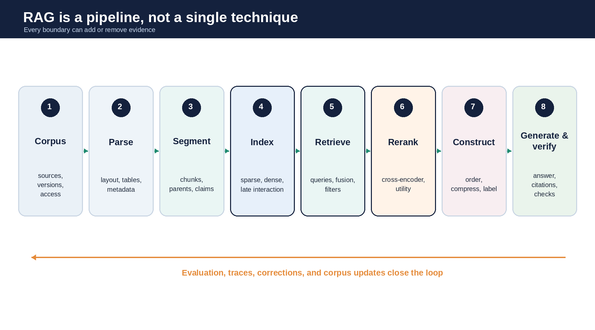
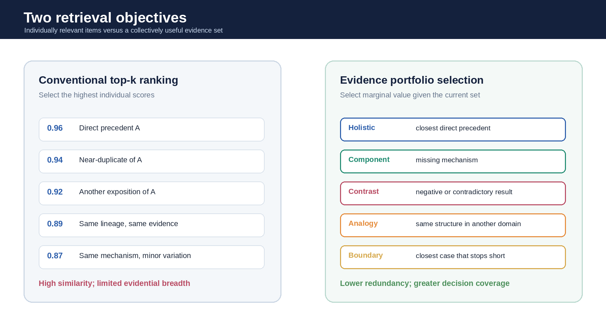
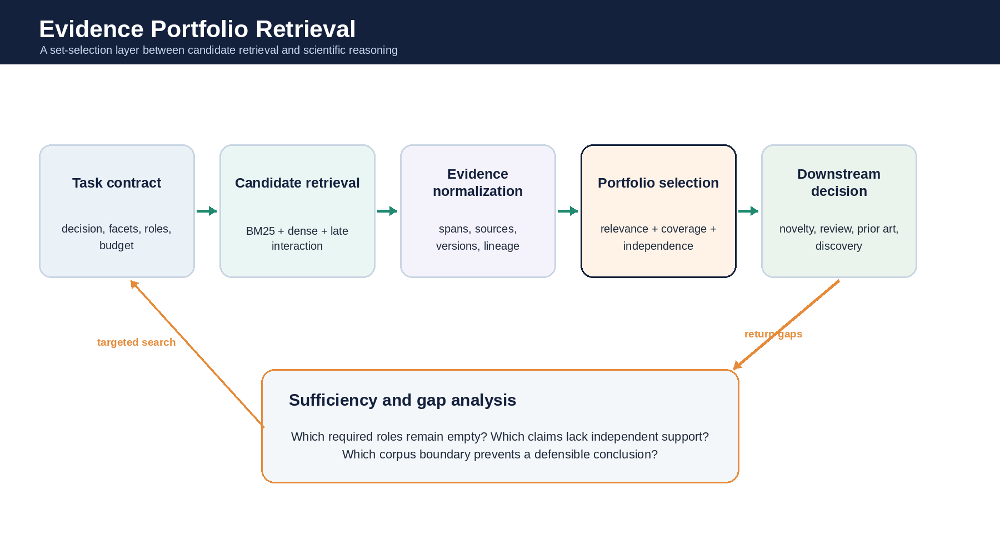
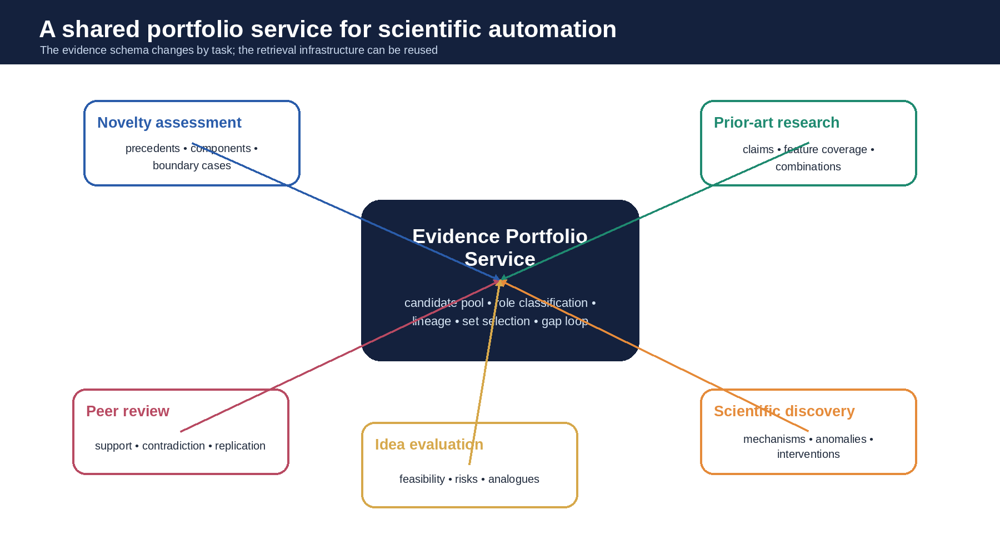
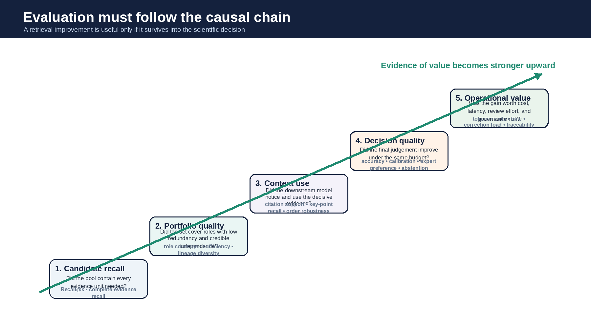

Arhitecturi, moduri de eșec, metode de evaluare și un program de cercetare
RAG • REGĂSIREA DOVEZILOR • RAȚIONAMENT ȘTIINȚIFIC • EPR
ScriptaHub Ediție de cercetare revizuită • august 2026
Toate drepturile rezervate.
Drepturile de publicare KDP sunt deținute de Outfinity SRL (Iași, România). Disponibil gratuit la ScriptaHub.com.
Această lucrare a fost creată sub egida ScriptaHub, în cadrul a două programe de cercetare interconectate, unul dedicat inteligenței artificiale, iar celălalt Outfinitismului, ambele conduse de Sînică Alboaie. Pentru a explora detaliile modului în care aceste două programe se intersectează și se dezvoltă reciproc, invităm cititorii să viziteze pagina Outfinity Venture Studio la www.outfinity.ch. Deși modelele lingvistice de inteligență artificială au fost folosite pentru a sprijini generarea textului, filosofia fundamentală, structura tematică și abordarea analitică provin exclusiv din deceniile de studiu dedicat ale autorului asupra fenomenelor sociale, tehnologiilor sociale și tehnologiilor avansate autentice rezultate din diverse proiecte de cercetare europene și autofinanțate. Recent, în cadrul proiectului de cercetare ScriptaHub, am studiat în profunzime literatura generată de IA și verificarea sa automată prin abordări neurosimbolice; toate cărțile gratuite puse la dispoziția publicului fac parte din suita de lucrări pe care le folosim pentru a testa și populariza cele mai recente idei și tehnologii ale noastre.
Generarea augmentată prin regăsire a devenit o arhitectură principală pentru conectarea modelelor lingvistice mari la cunoștințe private, actuale sau specifice unui domeniu. Termenul acoperă acum sisteme care diferă substanțial prin modul în care indexează sursele, interpretează interogările, regăsesc candidați, reordonează dovezile, construiesc contextul, invocă modele, verifică afirmații și măsoară calitatea. Această carte oferă o prezentare inginerească a acestui peisaj, așa cum se prezintă în august 2026. Ea explică regăsirea rară, densă, hibridă și cu interacțiune târzie; segmentarea și indexarea ierarhică; reordonarea, extinderea interogărilor, regăsirea în mai mulți pași și pe grafuri; controlul adaptiv și agentic; compromisurile contextelor lungi; mecanismele de citare și fidelitate; aspectele de securitate și operare; precum și metodele de evaluare necesare pentru a distinge implementările robuste de prototipurile insuficient controlate.
A doua parte definește regăsirea portofoliilor de dovezi, sau EPR, ca program de cercetare distinct, motivat de automatizarea muncii științifice. RAG convențional clasifică de regulă documentele individual, după relevanța estimată pentru o interogare. EPR întreabă care mulțime limitată de unități de dovezi, privite colectiv, este cea mai utilă pentru o decizie epistemică ulterioară. Un portofoliu pentru evaluarea noutății poate necesita un precedent holistic apropiat, precedente ale componentelor, un analog structural, un caz-limită, dovezi contradictorii și o descriere explicită a ceea ce rămâne neacoperit. Un portofoliu pentru evaluare colegială poate necesita susținere, replicare, critică metodologică, rezultate negative și explicații alternative. Aceasta schimbă unitatea de optimizare de la un document evaluat independent la o mulțime constrânsă de buget, a cărei acoperire colectivă, independență, proveniență și suficiență pot fi inspectate.
EPR este tratat ca o ipoteză de cercetare testabilă, nu ca un înlocuitor consacrat al RAG. RAG modern include deja diversificare, interacțiune târzie, regăsire în mai mulți pași, selecție de subgrafuri, căutare iterativă, reordonarea dovezilor și agenți de sinteză științifică. EPR este relevant științific numai dacă obiectivele explicite privind rolurile epistemice și suficiența dovezilor îmbunătățesc deciziile ulterioare, la același buget de context, cost și latență, față de metode de referință competitive precum regăsirea hibridă, interacțiunea târzie de tip ColBERTv2, reordonarea cu codificator încrucișat, relevanța marginală maximală, diversificarea învățată, descompunerea agentică a interogărilor și selecția dovezilor bazată pe LLM. Programul rezultat este deopotrivă constructiv și comparativ: precizează cum poate fi construit EPR și cum poate fi respinsă ipoteza dacă mecanismele sale suplimentare nu îmbunătățesc rezultatele măsurabile.
RAG este rezumat frecvent prin trei etape: regăsire, augmentare și generare. Această abstracție identifică categoria, dar omite multe alegeri inginerești care determină acuratețea, reproductibilitatea, securitatea, costul și caracterul justificabil științific. Două aplicații descrise drept RAG pot avea puține decizii de implementare comune. Una poate folosi BM25 pe secțiuni redactate atent, un codificator încrucișat, un cititor extractiv determinist și controale de acces la nivel de sursă. Alta poate încorpora vectorial segmente de dimensiune fixă, selecta cei mai apropiați cinci vecini, îi poate concatena într-un prompt și solicita un răspuns unui model general. Profilurile lor de eroare și garanțiile operaționale nu sunt comparabile.
Utilizarea largă a termenului creează și o problemă de atribuire. Îmbunătățirile sunt uneori atribuite RAG, deși provin din corpusuri mai bune, parsarea documentelor, reformularea interogărilor, ferestre de context mai mari, modele lingvistice mai puternice, module de reordonare, apeluri suplimentare de instrumente sau scurgeri de informații în evaluare. Invers, un rezultat dezamăgitor poate fi atribuit regăsirii ca întreg, când cauza imediată este reprezentată de dovezi incomplete, segmente nepotrivite, calibrare slabă sau un generator care nu folosește contextul furnizat. O prezentare tehnică trebuie, așadar, să descompună fluxul de procesare și să păstreze atribuirea cauzală.
Automatizarea științifică necesită capacități care depășesc generarea fluentă de răspunsuri. Un asistent de cercetare trebuie să localizeze dovezi dispersate în articole, să distingă afirmațiile de interpretări, să păstreze pasajele-sursă, să gestioneze rezultate incompatibile, să raționeze despre versiuni și date, să evite confundarea absenței dovezilor cu dovezile negative și să expună limitele acoperirii corpusului. În evaluarea noutății, distanța semantică nu poate fi tratată drept dovadă a noutății. În evaluarea colegială, regăsirea repetată din aceeași filiație intelectuală nu ar trebui prezentată drept consens independent. În descoperirea științifică, o regiune necercetată a literaturii nu ar trebui raportată ca lacună de cercetare. Aceste cerințe privesc simultan regăsirea, generarea și guvernanța epistemică.
Programul de regăsire a portofoliilor de dovezi este motivat de o limitare recurentă în căutarea complexă pentru cercetare: documentele clasate cel mai sus nu formează întotdeauna cea mai utilă mulțime de documente. Contribuția unui element depinde de ceea ce a fost deja selectat. Un articol moderat similar, care oferă un rezultat negativ, un mecanism, o limitare metodologică sau o condiție-limită lipsă, poate fi mai util pentru o decizie ulterioară decât încă o prezentare foarte similară a unei afirmații deja acoperite. EPR formalizează această nevoie informațională la nivel de mulțime, fără a necesita o nouă geometrie semantică sau înlocuirea infrastructurii moderne de regăsire.
Acest volum are două scopuri. Este un tutorial și un reper de proiectare pentru RAG modern, scris pentru cititorii care trebuie să construiască și să evalueze sisteme complete. De asemenea, poziționează EPR într-un program mai amplu de știință executabilă și automatizabilă. EPR nu înlocuiește regăsirea candidaților, modelele lingvistice, raționamentul simbolic sau judecata experților. El ocupă granița dintre regăsire și raționament, unde un sistem stabilește ce dovezi intră într-un buget fix de context și cum sunt organizate pentru decizia care urmează.
Expunerea urmează o succesiune inginerească. Obiectivele formale apar numai după stabilirea sarcinii, arhitecturii și cerințelor de evaluare. Ecuațiile pot preciza bugete, constrângeri și criterii de optimizare, dar nu pot compensa o definiție inadecvată a relevanței, un corpus nereprezentativ sau un etalon ale cărui etichete codifică o singură cale de cercetare acceptabilă. Întrebările operaționale vin, așadar, primele: ce unitate de dovezi este indexată, ce sarcină este sprijinită, ce eșec este măsurabil, ce metodă de referință este credibilă și ce rezultat empiric ar justifica continuarea sau încheierea programului.
| Capitolul |
|---|
| Capitolul 1. Generarea augmentată prin regăsire ca arhitectură de sistem |
| Capitolul 2. Regăsire rară, densă, hibridă și cu interacțiune târzie |
| Capitolul 3. Construirea contextului, fundamentare și generare |
| Capitolul 4. Arhitecturi avansate augmentate prin regăsire |
| Capitolul 5. Moduri de eșec de-a lungul fluxului RAG |
| Capitolul 6. Metodologia evaluării și proiectarea etaloanelor |
| Capitolul 7. Limitele clasificării independente top-k în sarcini științifice |
| Capitolul 8. Regăsirea portofoliilor de dovezi: definiție și domeniu |
| Capitolul 9. Arhitecturi și tipare de proiectare pentru portofolii de dovezi |
| Capitolul 10. Regăsirea portofoliilor de dovezi în automatizarea științifică |
| Capitolul 11. Obiective formale și metode de optimizare |
| Capitolul 12. Evaluare comparativă față de metodele moderne de referință pentru regăsire |
| Capitolul 13. Guvernanță, securitate, proveniență și responsabilitate |
| Capitolul 14. Agenda de cercetare și dezvoltarea tehnologiei |
| Capitolul 15. Concluzii: regăsirea ca selecție a dovezilor pentru decizii științifice |
Generarea augmentată prin regăsire a început ca o clasă precisă de modele. Lewis și colegii au combinat un generator secvență-la-secvență cu un modul de regăsire diferențiabil pe un corpus extern, tratând documentele ca variabile latente și arătând că memoria parametrică și cea neparametrică pot fi antrenate împreună pentru generare intensivă în cunoștințe [1]. În practica actuală, denumirea s-a extins. Ea descrie acum aproape orice arhitectură în care un model primește informații selectate dintr-o sursă aflată în afara ponderilor sale. Această definiție largă este utilă, cu condiția ca sistemul să fie descompus în contracte explicite, nu tratat ca un monolit.
O definiție inginerească utilă spune că RAG este un sistem controlat de flux informațional. Un corpus este achiziționat și normalizat. Documentele sunt segmentate în unități de regăsire. Aceste unități sunt reprezentate în unul sau mai multe indexuri. O interogare este interpretată și, posibil, reformulată. Un generator de candidați regăsește o mulțime inițială. Un modul de reordonare sau selecție o reduce. Un constructor de context ordonează, comprimă, etichetează și împachetează dovezile selectate. Un generator produce un răspuns. Un verificator poate controla afirmațiile, citările, constrângerile sau încrederea. Răspunsul și trasabilitatea sa sunt apoi expuse unui utilizator sau altui agent. Fiecare graniță poate introduce sau elimina erori.

Figura 1. Stiva operațională RAG. Performanța și proveniența depind de contractele dintre etape, nu doar de modulul de regăsire sau de generator.
Motivația arhitecturală de bază este separarea cunoștințelor parametrice de cele externe. Ponderile unui model lingvistic codifică regularități ample și fapte dobândite în timpul antrenării, dar actualizările sunt costisitoare, proveniența este în mare parte indisponibilă, iar controlul accesului nu poate fi exprimat la nivelul pasajelor individuale memorate. Un corpus extern poate fi revizuit, versionat, filtrat și auditat. Regăsirea face materialele actuale sau private disponibile la inferență, fără a necesita absorbirea fiecărei schimbări prin ajustare fină. Aceasta nu înseamnă că modelul devine un sistem transparent de raționament. Înseamnă că o parte din dovezile folosite pentru un răspuns pot fi făcute explicite.
RAG timpuriu s-a dezvoltat alături de regăsirea densă. Dense Passage Retrieval a arătat că un codificator dual antrenat pe perechi întrebare-pasaj poate depăși o metodă de referință BM25 puternică pe mai multe seturi de date de întrebări și răspunsuri în domeniu deschis [2]. REALM a integrat regăsirea în preantrenarea modelului lingvistic [3]. Fusion-in-Decoder a codificat separat pasajele regăsite și le-a fuzionat în decodor, făcând eficientă agregarea mai multor pasaje și evitând un singur codificator pătratic pe contextul concatenat [4]. RETRO a demonstrat un regim diferit de scară, în care un model lingvistic regăsește vecini dintr-o bază de date cu trilioane de tokenuri și condiționează generarea de aceștia [5]. Aceste sisteme au stabilit mai multe tipare durabile: regăsirea poate fi antrenată sau înghețată, dovezile pot fi consumate înaintea sau în timpul generării, iar unitatea regăsită poate fi un pasaj, un segment vecin, un fapt structurat, o imagine, un tabel sau un fragment de graf.
Stiva inginerească actuală este mai puțin unificată. Un sistem de producție poate folosi BM25 pentru terminologie exactă, un codificator dens pentru rata de regăsire semantică, fuziunea rangurilor reciproce pentru a le combina, un codificator încrucișat pentru a reordona primii o sută de candidați, un model lingvistic pentru descompunerea întrebării și un al doilea model pentru verificarea citărilor finale. Modulul de regăsire poate căuta într-o bază de date vectorială, într-un index Lucene, într-un graf de cunoștințe, într-un depozit SQL, într-un motor web sau în mai multe dintre acestea. Prin urmare, RAG este înțeles mai bine ca familie arhitecturală decât ca algoritm unic.
Această familie are patru obiective diferite, care nu ar trebui confundate. Primul este accesul la cunoștințe: regăsirea informațiilor pe care modelul nu le conține fiabil. Al doilea este fundamentarea: constrângerea unui răspuns la dovezi vizibile extern. Al treilea este adaptarea: schimbarea bazei efective de cunoștințe fără reantrenarea generatorului. Al patrulea este calculul: folosirea regăsirii ca operație intermediară în raționamentul în mai mulți pași sau în căutarea agentică. O implementare optimizată pentru un obiectiv poate fi slabă la altul. De exemplu, un sistem care regăsește o clauză exactă dintr-o politică poate fi excelent pentru acces și fundamentare, dar inadecvat pentru compararea politicilor contradictorii în timp. Un sistem care explorează recursiv un graf al literaturii poate sprijini sinteza, dar poate fi risipitor pentru o căutare exactă.
RAG nu garantează prin sine corectitudinea factuală. Contextul relevant poate lipsi, poate fi înșelător, învechit, contaminat, inconsistent intern sau ignorat de generator. Modelul poate cita o sursă care nu implică afirmația, poate combina dovezi incompatibile sau prefera memoria parametrică atunci când textul regăsit o contrazice. Studiile privind conflictul context-memorie și fidelitatea citării arată că furnizarea documentelor nu echivalează cu folosirea lor corectă [42–44]. Afirmația inginerească este, așadar, condiționată: RAG oferă un mecanism de generare fundamentată, în timp ce calitatea fundamentării depinde de corpus, regăsire, construirea contextului, politica de generare și straturile de verificare.
Corpusul face parte din model. Acest aspect este frecvent subestimat. Comportamentul unui sistem RAG este determinat nu numai de componentele neuronale, ci și de sursele admise, de modul în care sunt parsate, de versiunile care coexistă, de normalizarea metadatelor și de reprezentarea retractărilor, corecțiilor, duplicatelor și politicilor de acces. În utilizarea științifică, corpusul poate conține prepublicări, manuscrise acceptate, versiuni finale, materiale suplimentare, seturi de date, rapoarte de evaluare, brevete, protocoale și înregistrări de laborator. Tratarea tuturor acestora ca fragmente de text interschimbabile distruge distincții importante pentru raționamentul ulterior.
Interogarea este, la rândul ei, un obiect al interpretării. Cererea în limbaj natural a unui utilizator poate conține sarcini multiple, entități ambigue, constrângeri temporale implicite și presupuneri care nu ar trebui transferate în regăsire. Cuvintele literale pot fi termeni de căutare slabi. HyDE a arătat că un document ipotetic generat poate reduce nepotrivirea de reprezentare dintre întrebările scurte și documentele relevante în regăsirea densă fără exemple [11]. Extinderea și descompunerea interogărilor, rezoluția entităților și clasificarea intenției pot îmbunătăți rata de regăsire, dar pot introduce și concepte nesusținute. Un sistem robust înregistrează interogarea inițială, fiecare transformare și rezultatul regăsirii produs de fiecare transformare.
Unitatea de dovezi este o decizie de proiectare, nu o etapă neutră de preprocesare. Segmentele de dimensiune fixă sunt comode pentru indexurile vectoriale, dar pot separa definițiile de condiții, afirmațiile de calificări și legendele tabelelor de tabele. Documentele întregi păstrează contextul, dar depășesc bugetele de regăsire și generare. Secțiunile, paragrafele, propozițiile logice, afirmațiile și unitățile figură-tabel creează fiecare proprietăți diferite de regăsire și atribuire. Studiile recente continuă să constate că segmentarea schimbă substanțial performanța RAG, iar strategiile ierarhice sau care păstrează contextul sunt folosite tot mai mult pentru a evita fragmentele izolate [47–49]. Pentru automatizarea științifică, unitatea corectă poate avea mai multe straturi: o afirmație regăsibilă legată de paragraful, secțiunea, documentul, versiunea și graful său de proveniență.
Distincția finală este între calitatea regăsirii și calitatea răspunsului. Un modul de regăsire poate returna dovezile de referință, iar generatorul poate totuși eșua. Un generator poate răspunde corect din memoria parametrică în pofida unei regăsiri eșuate. Acuratețea de la un capăt la altul, luată singură, ascunde ambele cazuri. Invers, un etalon de regăsire poate recompensa pasajele care conțin șirul de răspuns, ignorând dacă sarcina ulterioară necesită comparație, contradicție sau interpretare cauzală. Un program RAG matur măsoară etapele separat și apoi studiază interacțiunea lor.
Această descompunere schimbă modul în care ar trebui evaluat RAG. Întrebarea relevantă este dacă un flux de procesare, un corpus, o distribuție de sarcini și un buget precizate produc decizii mai bune decât alternative precizate; dacă proveniența sa este suficientă pentru audit; și dacă reacționează adecvat când lipsesc dovezi. Restul primei
întrebări.
Stiva de regăsire începe înainte de construirea oricărui index. Achiziția surselor determină plafonul ratei de regăsire. Un sistem nu poate regăsi un articol pe care nu l-a ingerat niciodată, un tabel pe care nu l-a parsat sau o corecție al cărei identificator nu a fost legat de original. În mediile de cercetare, achiziția trebuie să acopere atât publicațiile convenționale, cât și artefactele care fac rezultatele interpretabile: fișiere suplimentare, depozite de cod, seturi de date, protocoale, rapoarte înregistrate, istorice ale evaluării, erate, retractări și versiuni. Fluxul de ingestie ar trebui să păstreze identificatori stabili ai surselor și amprente ale conținutului, astfel încât răspunsurile ulterioare să poată fi reproduse pe un instantaneu cunoscut.
Parsarea are consecințe semantice și nu ar trebui tratată ca o conversie de rutină a fișierelor. Extragerea textului din PDF poate amesteca ordinea lecturii, elimina ecuații, desprinde legende, aplatiza tabele și îmbina antetele cu textul principal. Recunoașterea optică a caracterelor poate introduce substituții de caractere importante pentru nume de gene, ecuații, identificatori sau formule chimice. Un flux solid păstrează fișierul original, o reprezentare extrasă, coordonate structurale și incertitudinea privind extragerea. Când este posibil, stochează relația dintre o unitate normalizată de dovezi și pagina sau pasajul-sursă exact. Aceasta sprijină atât afișarea citărilor, cât și verificarea față de materialul disponibil utilizatorului.
Segmentarea creează unitățile de regăsire. Cel mai simplu tipar folosește ferestre fixe de tokenuri cu suprapunere. Este ușor de implementat și adesea competitiv, dar aparenta sa neutralitate este înșelătoare. Segmentele mici îmbunătățesc localizarea și reduc contextul irelevant, însă pot omite calificări necesare. Segmentele mari păstrează coerența, dar diluează reprezentările vectoriale și consumă context. Suprapunerea îmbunătățește rata de regăsire cu prețul duplicării, care poate domina un rezultat top-k și crea falsa impresie a mai multor
regăsirea părinte-copil și segmentarea târzie încearcă să păstreze contextul fără a indexa documente întregi [47–49]. Strategia potrivită depinde de granularitatea dovezilor necesară sarcinii.
Regăsirea rară rămâne o componentă centrală a sistemelor moderne de regăsire. BM25 estimează relevanța din aparițiile termenilor interogării, controlând lungimea documentului și saturația frecvenței termenilor [8]. Este rapidă, interpretabilă și robustă la schimbarea domeniului. BEIR a constatat că BM25 este o metodă de referință competitivă fără exemple în sarcini eterogene de regăsire, în timp ce sistemele cu interacțiune târzie și reordonare obțineau adesea cea mai bună calitate medie, la un cost computațional mai mare [9]. Regăsirea rară este deosebit de valoroasă pentru terminologie exactă, identificatori, citări, expresii juridice, abrevieri, formule reprezentate ca text și nume pe care un model dens le poate reprezenta slab. Ar trebui păstrată în majoritatea sistemelor de producție, cu excepția cazului în care o evaluare specifică sarcinii demonstrează că nu aduce valoare.
Regăsirea densă mapează interogările și documentele în spații vectoriale învățate. Codificatoarele duale permit precalcularea reprezentărilor vectoriale ale documentelor, făcând posibilă căutarea aproximativă a celor mai apropiați vecini la scară largă [2]. Modelele dense pot regăsi parafraze și pasaje înrudite conceptual fără vocabular comun, dar moștenesc distribuția și obiectivele datelor de antrenare. Un model general de reprezentare vectorială poate confunda similaritatea tematică cu relevanța pentru sarcină, poate rata distincții tehnice rare sau clasa un fundal fluent înaintea dovezilor metodologice exacte necesare unei întrebări științifice. MTEB și extinderea sa multilingvă arată că nicio abordare de reprezentare vectorială nu domină toate sarcinile, limbile și domeniile [10]. Selecția modelului trebuie, așadar, să urmeze distribuția țintă a regăsirii, nu titlul unui clasament.
Regăsirea rară învățată ocupă un spațiu intermediar. Modele precum SPLADE extind sau reponderează reprezentările lexicale, păstrând eficiența indexului inversat. Ele pot surprinde asociații semantice fără a abandona explicabilitatea la nivel de termen și infrastructura rară. În practică, multe sisteme puternice folosesc regăsire hibridă în loc să se limiteze la o singură reprezentare. Clasamentele rare și dense pot fi combinate prin scoruri ponderate, fuziunea rangurilor reciproce, fuziune învățată sau rutare condiționată. Hibridizarea nu este o garanție; fuziunea scorurilor slab calibrate poate suprima cel mai puternic canal. Sistemul ar trebui să raporteze rata de regăsire specifică fiecărui canal și contribuția marginală a fiecărui modul de regăsire.
Interacțiunea târzie abordează pierderea de informații a unui singur vector. ColBERT codifică separat tokenurile interogării și documentului și calculează un scor de tip MaxSim, în care fiecare reprezentare a interogării interacționează cu reprezentarea documentului care i se potrivește cel mai bine [6]. ColBERTv2 îmbunătățește stocarea și supervizarea, păstrând această interacțiune fină [7]. Interpretarea practică este importantă: un document poate fi relevant deoarece mai multe fațete distincte ale interogării corespund unor regiuni locale diferite, chiar dacă nicio reprezentare vectorială agregată unică nu reprezintă bine relația. Aceasta face din interacțiunea târzie o metodă de referință puternică pentru orice afirmație EPR despre relevanță multifațetată. Dacă o metodă propusă de portofoliu reușește doar fiindcă un modul de regăsire cu un singur vector a estompat interogarea, ColBERTv2 poate elimina avantajul aparent.
Codificatoarele încrucișate oferă o estimare mai puternică, dar mai costisitoare a relevanței. Ele codifică împreună o interogare și textul candidat, permițând atenție completă la nivel de token. Deoarece fiecare pereche necesită inferență, codificatoarele încrucișate reordonează de regulă o mulțime de candidați, în loc să caute în întregul corpus. Proiectarea obișnuită regăsește larg prin metode rare, dense sau cu interacțiune târzie, apoi reordonează zeci sau sute de candidați. Etapa candidaților optimizează rata de regăsire; modulul de reordonare optimizează precizia. Această separare este unul dintre cele mai fiabile tipare de proiectare RAG. Ea expune și o limită strictă: niciun modul de reordonare nu poate recupera dovezi absente din mulțimea de candidați.
Generarea candidaților poate fi extinsă prin transformarea interogării. Sistemul poate genera parafraze, sinonime tehnice, termeni de vocabular controlat, citări sau documente ipotetice. Poate descompune o întrebare complexă în subinterogări și reuni rezultatele. Aceste tehnici îmbunătățesc rata de regăsire când formularea utilizatorului diferă de corpus, dar extind și suprafața de atac și eroare. O extindere generată poate codifica o presupunere falsă și regăsi documente care o întăresc. Implementările robuste păstrează transformările independente suficient timp pentru a le compara rezultatele, atașează proveniență fiecărui candidat și împiedică o extindere neverificată să înlocuiască tacit nevoia informațională inițială.
Filtrarea metadatelor este un alt canal de regăsire. Data, jurisdicția, proiectarea studiului, populația, statutul publicării, drepturile de acces, autorul, publicația, setul de date și versiunea pot conta mai mult decât similaritatea semantică. Întrebările științifice necesită frecvent praguri temporale sau distincții între prepublicări și lucrări evaluate colegial. Filtrele ar trebui aplicate ținând cont de rata de regăsire. O dată lipsă nu ar trebui să excludă întotdeauna un document; o dată incorectă nu ar trebui să-l admită tacit. Calitatea metadatelor necesită, așadar, propriul audit și model de incertitudine.
Arhitectura indexului determină proprietățile operaționale. Indexurile inversate sprijină căutarea rară rapidă și actualizările incrementale. Indexurile vectoriale folosesc structuri precum HNSW sau fișiere inversate pentru a aproxima cei mai apropiați vecini. Indexurile cu interacțiune târzie stochează mai mulți vectori comprimați per document. Indexurile de graf codifică relații explicite. Un sistem matur întreține adesea mai multe indexuri pe aceleași unități de dovezi versionate. Sincronizarea lor face parte din corectitudine. Dacă un document este retractat în depozitul de metadate, dar rămâne regăsibil într-un index vectorial învechit, corpusul logic și corpusul operațional diferă.
Reordonarea nu ar trebui confundată cu selecția dovezilor. Un modul de reordonare estimează ordinea candidaților individuali. Un selector poate trebui să aleagă o mulțime sub un buget de tokenuri, să elimine aproape-duplicatele, să păstreze independența surselor sau să satisfacă constrângeri de rol. MMR introduce un compromis iterativ simplu între relevanța pentru interogare și redundanță [23]. Metodele de diversificare care țin cont de intenție, precum IA-Select și xQuAD, distribuie rezultatele între subteme posibile [24–25]. Procesele punctuale determinantal și obiectivele submodulare oferă cadre mai generale de selecție a mulțimilor [26]. Aceste metode preced EPR, dar optimizează de regulă diversitatea sau acoperirea intențiilor, nu roluri explicite ale dovezilor științifice.
Rezultatul final al stivei de regăsire ar trebui să fie mai bogat decât o listă de șiruri și scoruri. Fiecare candidat ar trebui să poarte identificatorul sursei, versiunea, unitatea de regăsire, contextul-părinte, scorurile canalelor, proveniența transformărilor, politica de acces, marcajul temporal și orice legături structurale. Pentru utilizare științifică, ar trebui să poarte și tipul publicației, proiectarea studiului când este cunoscută, relațiile de citare și avertismentele privind independența. Aceste câmpuri nu sunt decorative. Ele devin intrări pentru construirea contextului, selecția portofoliului, verificarea citărilor și raționamentul ulterior.
O stivă practică de regăsire este cel mai bine proiectată ca o pâlnie care păstrează rata de regăsire. Straturile corpusului și parsării păstrează dovezile potențial utile. Canalele multiple de regăsire creează o mulțime de candidați. Modulele de reordonare estimează relevanța locală. Selectoarele construiesc un context încadrat în buget. Fiecare etapă de restrângere ar trebui să fie măsurabilă, reversibilă în analiză și atribuibilă. Eliminarea prematură este o cauză centrală a eșecului în sistemele în mai mulți pași și orientate spre cercetare; separarea amplificării ratei de regăsire de selecția pentru precizie în NEST este o expresie recentă a acestui principiu [28]. Precizia poate fi îmbunătățită în etapele ulterioare, în timp ce dovezile eliminate nu pot participa la raționamentul ulterior.
Regăsirea returnează o propunere de dovezi, nu un răspuns finalizat. Generatorul trebuie încă să stabilească ce pasaje contează, să reconcilieze sau să expună conflicte, să păstreze calificări și să lege afirmațiile de surse. Multe eșecuri RAG apar după o regăsire reușită, deoarece construirea contextului și generarea sunt tratate ca formatare de prompt, nu ca etape proiectate inginerește, cu contracte explicite.
Construirea contextului începe cu stabilirea bugetului. Bugetul relevant nu este doar fereastra de context anunțată a modelului. El include numărul de tokenuri care pot fi procesate la o latență și un cost acceptabile, cantitatea pe care modelul o poate folosi fiabil și spațiul necesar instrucțiunilor, istoricului conversației, urmelor instrumentelor și rezultatului. Experimentele „Lost in the middle” au arătat că modelele pot folosi inegal contextele lungi, performanța depinzând de poziția informației relevante [15]. Sistemele ulterioare s-au îmbunătățit, dar ordinea, duplicarea și densitatea elementelor distractoare influențează încă comportamentul. Simpla creștere a numărului de pasaje regăsite poate reduce calitatea răspunsului.
Un constructor de context decide ce include, cum ordonează și la ce granularitate. Un tipar comun plasează mai întâi dovezile cel mai bine clasate, dar aceasta poate accentua excesiv o singură perspectivă. Altul grupează pasajele după sursă sau fațetă. Un sistem științific poate ordona dovezile după afirmație, cronologie, proiectarea studiului sau structura contradicțiilor. Ordonarea ar trebui să reflecte sarcina ulterioară, nu un scor generic de relevanță. O analiză a noutății poate începe cu cel mai apropiat precedent holistic, apoi cu precedentele componentelor, apoi cu cazurile-limită. Un context de evaluare colegială poate asocia dovezile favorabile cu cele contradictorii, astfel încât generatorul să nu poată citi unele fără celelalte.
Deduplicarea este esențială. Suprapunerea segmentelor, depozitele-oglindă, prepublicările și versiunile finale, articolele de sinteză care citează studii primare și conținutul web republicat pot produce multe pasaje aparent independente care derivă din aceeași sursă. Un flux care nu modelează dependența surselor poate interpreta repetiția ca forță a dovezilor. În utilizarea științifică, independența contează. Un constructor de context ar trebui să recunoască duplicatele exacte, aproape-duplicatele, familiile de versiuni, repetiția derivată din citare și sursele comune din amonte. Accentul pus de RARE pe corpusuri cu similaritate ridicată ilustrează cum metricile convenționale de regăsire pot ascunde probleme de robustețe când domină dovezile redundante [31].
Comprimarea contextului reduce costul și distragerea, dar schimbă dovezile. Comprimarea extractivă selectează propoziții sau pasaje. Comprimarea abstractivă le reformulează. Comprimarea structurată mapează textul în afirmații, entități, relații sau tabele. Fiecare alegere creează o sarcină de verificare diferită. Pasajele extrase păstrează formularea, dar pot omite contextul. Rezumatele abstractive pot îmbina afirmații sau întări modalitatea. Reprezentările structurate sunt utile pentru calcul, dar depind de un compilator semantic. Pentru utilizarea științifică cu mize ridicate, unitatea comprimată ar trebui să păstreze o legătură către pasajul original și o înregistrare a transformării.
Arhitecturile de generare diferă prin modul în care consumă dovezile. În RAG bazat pe prompt, pasajele regăsite sunt concatenate cu instrucțiuni și introduse într-un model general. Modelele de tip FiD codifică pasajele separat și permit decodorului să le agrege [4]. Modelele lingvistice îmbunătățite prin regăsire, precum RETRO, integrează vecini în timpul calculului modelului [5]. Sistemele agentice intercalează căutarea, lectura, redactarea și verificarea. Arhitectura influențează atribuirea erorilor. În sistemele bazate pe prompt, regăsirea poate fi inspectată independent. În sistemele strâns integrate, regăsirea și generarea pot fi optimizate împreună, dar sunt mai greu de auditat.
Instrucțiunea generatorului ar trebui să definească o politică privind dovezile. Ar trebui să precizeze dacă dovezile externe prevalează asupra memoriei parametrice, cum sunt raportate conflictele, când sistemul trebuie să se abțină și ce se consideră o afirmație susținută. Aceste politici nu ar trebui să se bazeze exclusiv pe respectarea prompturilor în limbaj natural. Contractele de ieșire structurată, cerințele de citare la nivel de afirmație și verificarea după generare oferă controale mai puternice. Generatorului ar trebui să i se permită să spună că portofoliul regăsit este insuficient, în loc să fie obligat să sintetizeze un răspuns definitiv din orice context i-a fost furnizat.
Generarea citărilor este distinctă de corectitudinea lor. Un model poate atașa o sursă aparent relevantă unei afirmații pe care sursa nu o implică. Poate cita articolul potrivit pentru propoziția greșită, cita o sinteză când este necesară o sursă primară sau omite pasajul care susține o valoare cantitativă. Lucrări recente despre sinteza științifică agentică au constatat că ratele măsurate ale citărilor nesusținute variază substanțial cu strictețea verificatorului și au susținut că evaluarea citărilor trebuie să numească și să calibreze verificatorul, în loc să trateze atribuirea automată ca adevăr de referință [45]. În EPR, susținerea prin citări este o cerință definită a contractului portofoliului.
Gestionarea conflictelor este o altă etapă distinctă. Documentele regăsite se pot contrazice pentru că unul este fals, pentru că metodele diferă, pentru că populațiile diferă, pentru că terminologia este ambiguă sau pentru că literatura a evoluat. Generatorul nu ar trebui să netezească aceste diferențe într-un paragraf fluent. Ar trebui să identifice domeniul fiecărei afirmații, să expună dovezile incompatibile și să păstreze incertitudinea. Lucrările despre RAG în condiții de conflict context-memorie și între documente arată că modelele pot ignora dovezile externe, îmbina surse incompatibile sau urma un context înșelător [42–44]. Un asistent științific necesită, așadar, reprezentări explicite ale conflictului și, ideal, regăsire separată pentru dovezi de arbitraj.
Generarea fundamentată necesită și disciplină în privința dovezilor negative. Absența unui pasaj regăsit care susține o afirmație nu implică faptul că aceasta este falsă. Absența unui pasaj contradictoriu nu implică consens. O căutare eșuată poate reflecta o interogare îngustă, un corpus lipsă, o nepotrivire lingvistică, un acces contra cost, o întârziere a indexării sau o schimbare terminologică. Rezultatul ar trebui să distingă o afirmație pozitivă susținută, o negație susținută, dovezi conflictuale și o acoperire insuficientă a căutării. Aceste stări sunt mai utile decât un singur scor de încredere.
Sinteza de amploare introduce probleme suplimentare. Fidelitatea locală a propozițiilor poate coexista cu o distorsiune globală. Un raport poate cita corect fiecare paragraf, alocând totuși un spațiu disproporționat unei singure linii de dovezi, omițând studii negative sau prezentând o dezbatere nerezolvată ca fiind încheiată. OpenScholar demonstrează potențialul regăsirii științifice la scară largă și al sintezei susținute de citări pe zeci de milioane de articole [22].
PaperQA2 raportează rezultate puternice pentru căutarea în literatură, rezumare și detectarea contradicțiilor [21]. Totodată, etaloanele și lucrările de audit al citărilor arată că acoperirea regăsirii, atribuirea și calibrarea evaluatorilor rămân blocaje centrale [33,45]. Obiectivul ingineresc include, așadar, atât susținerea prin citări la nivel de afirmație, cât și suficiența și reprezentativitatea mulțimii de dovezi.
Verificarea poate fi stratificată. Un verificator al regăsirii controlează dacă pasajele selectate sunt relevante. Un verificator al implicației controlează dacă fiecare citare susține afirmația sa. Un verificator al consistenței controlează dacă afirmațiile intră în conflict. Un verificator al provenienței controlează identitatea și versiunea sursei. Un verificator al sarcinii controlează dacă răspunsul a tratat întrebarea cerută. Un verificator al portofoliului controlează acoperirea rolurilor de dovezi necesare. Aceste straturi pot folosi modele, reguli, evaluare umană sau combinații. Ratele lor de eroare trebuie măsurate separat; un verificator slab poate crea iluzia unui flux demn de încredere.
Interfața de ieșire ar trebui să expună suficientă structură pentru corectare. Un utilizator ar trebui să poată inspecta pasajele din spatele unei afirmații, înlocui o sursă, marca două surse ca dependente, respinge o interpretare și solicita o căutare pentru o fațetă lipsă. Corecțiile ar trebui să modifice metadatele persistente ale dovezilor sau urmele sarcinilor, nu doar formularea unui răspuns. Acest lucru este deosebit de important într-un IDE de cercetare, unde același corpus sprijină evaluarea noutății, evaluarea colegială, conformitatea și planificarea experimentelor.
Trecerea de la regăsire la generare este, așadar, o graniță de sistem proiectată inginerește, nu doar o etapă de compunere a promptului. Aici o listă clasificată independent devine un obiect de dovezi pentru o decizie ulterioară. RAG convențional deleagă adesea această transformare generatorului. EPR explicitează o parte a ei construind un portofoliu înaintea generării. Dacă stratul suplimentar își justifică costul rămâne o întrebare empirică dezvoltată în a doua jumătate a cărții. Succesul regăsirii este necesar, dar insuficient: dovezile trebuie să supraviețuiască selecției, să rămână distincte și să fie consumate conform unei politici adecvate sarcinii științifice.
Stadiul actual al tehnicii cuprinde mai multe tipare arhitecturale pentru a decide când, unde și cum participă regăsirea la calcul. De la formularea inițială a RAG, regăsirea s-a extins dincolo de o singură operație top-k efectuată o dată înaintea generării. Sistemele moderne rutează interogările, invocă mai multe module de regăsire, construiesc reprezentări ierarhice, traversează grafuri, regăsesc iterativ și își evaluează propriile dovezi. Obiectivul ingineresc este alegerea arhitecturii cel mai puțin complexe care răspunde cerințelor observate ale sarcinii și modurilor de eșec.
RAG hibrid este tiparul practic implicit. Regăsirea rară păstrează dovezile lexicale exacte, în timp ce regăsirea densă oferă o rată de regăsire semantică. Modelele cu interacțiune târzie adaugă potrivire fină, iar codificatoarele încrucișate îmbunătățesc clasificarea finală. Fuziunea rangurilor reciproce este adesea preferată medierii scorurilor brute, deoarece canalele de regăsire produc scoruri pe scări incompatibile. Un flux de producție poate reuni mai întâi candidații din BM25, un model dens ajustat pe domeniu și o căutare de citări sau metadate, apoi reordona reuniunea. Câștigul provine mai puțin dintr-o noțiune abstractă de hibriditate decât din diversitatea erorilor: un acronim rar ratat de un model dens poate fi evident pentru BM25, în timp ce un mecanism parafrazat ratat de căutarea lexicală poate fi recuperat de un codificator dens.
RAG adaptiv schimbă dacă și cât de mult este folosită regăsirea. Nu orice interogare necesită dovezi externe, iar regăsirea repetată poate irosi latență sau introduce zgomot. Self-RAG antrenează un model să regăsească, să genereze și să critice prin decizii speciale de reflecție, permițând invocarea selectivă a regăsirii și evaluarea susținerii rezultatelor [12]. Abordări înrudite folosesc incertitudinea, complexitatea interogării, detectarea halucinațiilor sau module de rutare învățate pentru a alege între absența regăsirii, regăsirea într-un singur pas, regăsirea în mai mulți pași și folosirea instrumentelor. Lecția arhitecturală este că politica de regăsire este ea însăși o decizie modelată. Politica trebuie evaluată atât pentru falsuri negative, când regăsirea era necesară, dar a fost omisă, cât și pentru falsuri pozitive, când regăsirea inutilă a afectat un răspuns parametric corect.
RAG corectiv și reflexiv adaugă o buclă de feedback după regăsirea inițială. Sistemul evaluează dacă dovezile sunt relevante sau suficiente, reformulează interogarea, extinde
autoevaluarea poate fi circulară: același model care a înțeles greșit întrebarea poate considera adecvate propriile dovezi. Implementările puternice separă rolurile, folosesc semnale independente sau evaluează bucla față de o descompunere-oracol. Fiecare rundă suplimentară ar trebui să aibă o regulă de oprire măsurabilă, deoarece regăsirea iterativă neconstrânsă poate acumula elemente distractoare mai repede decât dovezi utile.
RAG în mai mulți pași abordează întrebări al căror răspuns depinde de dovezi distribuite între surse. HotpotQA a făcut explicită această cerință în răspunsul la întrebări [40], în timp ce MultiHop-RAG și etaloanele ulterioare arată că fluxurile standard eșuează adesea deoarece prima interogare nu menționează entitatea necesară pentru al doilea pas de regăsire [17]. Descompunerea interogării generează întrebări intermediare. Regăsirea iterativă folosește un răspuns sau o entitate dintr-un pas pentru a-l formula pe următorul. Modulele învățate de regăsire în mai mulți pași încearcă să modeleze direct calea. În 2026, sisteme precum GRITHopper și regăsirea structurată ghidată de programe continuă să reducă dependența de descompuneri autoregresive fragile. Problema inginerească centrală este supraviețuirea dovezilor: un pasaj aparent marginal poate deveni decisiv numai după ce alt pasaj stabilește puntea.
RAG ierarhic schimbă granularitatea indexului. RAPTOR grupează și rezumă recursiv textul, creând un arbore ale cărui niveluri superioare sprijină interogările tematice sau globale, iar frunzele păstrează dovezile locale [13]. Regăsirea părinte-copil indexează unități mici pentru rata de regăsire, dar returnează contexte-părinte mai mari pentru generare. Indexurile de rezumate ale documentelor identifică mai întâi documentele relevante, apoi caută în interiorul lor. Sistemele cu granularități multiple rutează între reprezentări la nivel de propoziție, paragraf, secțiune, document și corpus. Aceste tipare abordează nepotrivirea dintre o unitate scurtă de regăsire și o nevoie informațională amplă, dar introduc și rezumate derivate ale căror erori se pot propaga. Indexul nu mai este doar o copie a corpusului; conține abstracții generate de model, care necesită versionare și proveniență.
RAG pe grafuri codifică relațiile dintre entități, afirmații, pasaje sau documente. GraphRAG de la Microsoft extrage un graf entitate-relație, detectează comunități și generează rezumate ale comunităților pentru a răspunde întrebărilor globale despre un corpus [14]. Metoda este valoroasă pentru întrebări despre teme dominante, relații sau narațiuni dintr-o colecție mare, unde regăsirea segmentelor locale prin cei mai apropiați vecini este structural nepotrivită. RAG bazat pe grafuri de cunoștințe regăsește căi sau subgrafuri explicite pentru raționament în mai mulți pași. Construirea grafului poate fi însă costisitoare și predispusă la erori. Eșecurile de rezoluție a entităților creează muchii false; omisiunile extragerii elimină căi; iar rezumatele comunităților pot deveni învechite când se schimbă documentele. Regăsirea pe grafuri este cea mai potrivită când relațiile și agregarea globală sunt cerințe explicite ale sarcinii.
Regăsirea subgrafurilor este un domeniu învecinat deosebit de relevant pentru EPR. COSMOS formalizează selecția subgrafurilor coerente de dovezi ca maximizare submodulară constrânsă, optimizând explicit utilitatea colectivă și conectivitatea, în loc să trateze faptele independent [29]. Aceasta este apropiată ca spirit de regăsirea portofoliilor, deși cadrul său principal este răspunsul la întrebări pe baze de cunoștințe, nu rolurile dovezilor științifice. Distincția contează: conectivitatea poate indica o cale validă de raționament, dar un portofoliu științific poate include deliberat contra-dovezi deconectate sau o analogie din alt domeniu. EPR poate împrumuta ideea optimizării la nivel de mulțime fără a presupune că toate dovezile utile aparțin unui singur graf conex.
Regăsirea globală și cea locală pot fi combinate. Un sistem poate folosi mai întâi rezumate la nivel de corpus pentru a identifica teme, apoi regăsi pasaje locale pentru a susține afirmații. Acest tipar este util pentru cartografierea literaturii și analiza peisajului cercetării. Este mai puțin potrivit pentru întrebări factuale exacte, deoarece stratul suplimentar de rezumare crește costul și creează încă o sursă de eroare de abstractizare. Evaluările variantelor GraphRAG arată tot mai mult că beneficiile depind puternic de tipul interogării, calitatea grafului și forța metodei de referință. „RAG pe grafuri” este, așadar, o familie de alegeri de proiectare condiționate, nu un succesor în general superior al căutării vectoriale.
RAG agentic expune operațiile de regăsire unui model sub formă de instrumente. Agentul decide în ce corpus să caute, ce interogare să emită, ce rezultat să deschidă, dacă să inspecteze
când strategia de căutare depinde de descoperirile intermediare. PaperQA2 și OpenScholar demonstrează valoarea căutării repetate, reordonării, lecturii dovezilor și sintezei susținute de citări în sarcini de literatură științifică [21–22]. Regăsirea agentică introduce și bucle, cost nelimitat, derivă a surselor, contaminarea interogării cu inferențe anterioare ale modelului și reproductibilitate slabă. Sistemele operaționale ar trebui să înregistreze fiecare acțiune și să permită reluarea pe un instantaneu fix al corpusului.
RAG multimodal regăsește nu doar text, ci și tabele, figuri, diagrame, imagini de pagină, audio sau video. Dovezile științifice sunt adesea multimodale: o concluzie poate depinde de un grafic, o imagine microscopică, o notă de subsol a unui tabel sau o derivare matematică. Extragerea exclusivă a textului poate elimina informații decisive. Indexurile multimodale pot opera pe imagini de pagină sau reprezentări specifice modalității, în timp ce sistemele de graf conectează figurile la legende și textul înconjurător. UniversalRAG și abordările multimodale pe grafuri din 2026 reflectă deplasarea către rutarea interogărilor între corpusuri eterogene. Dificultatea este evaluarea: un sistem poate regăsi pagina corectă, dar poate eșua în interpretarea figurii sau poate interpreta figura citând un fragment de text care nu susține concluzia.
RAG temporal tratează timpul ca parte a relevanței. Aceeași interogare poate necesita cel mai recent ghid, starea cunoașterii înaintea depunerii unui brevet sau literatura disponibilă când a fost proiectat un studiu. Indexurile necesită metadate despre timpul de valabilitate și timpul ingestiei. Regăsirea ar trebui să prevină scurgerea informațiilor viitoare în evaluările retrospective. Noutatea științifică este inerent temporală: o idee poate să fi fost nouă în 2022 și obișnuită în 2026. Orice sistem EPR pentru stadiul anterior al tehnicii sau noutate trebuie să definească data-limită ca parte a contractului sarcinii.
Modelele cu context lung complică alegerea arhitecturii. Dacă un corpus întreg încape în context, regăsirea poate părea inutilă. Etaloanele care compară modelele cu context lung și RAG nu arată un câștigător universal; rezultatul depinde de lungimea corpusului, sarcină, distribuția dovezilor, model și cost [15,46,50]. Contextul lung evită omisiunile de regăsire, dar crește latența, costul, expunerea la elemente distractoare și sensibilitatea pozițională. RAG reduce materialul prezentat modelului, dar riscă să excludă dovezi. Proiectările hibride folosesc regăsirea pentru a organiza contexte lungi, a păstra granițele surselor sau a selecta un subset pentru raționament costisitor. Comparația relevantă nu este „RAG versus fereastră de context” în abstract, ci calitatea pe unitatea de cost, cu distribuții realiste ale documentelor.
RAG orientat spre memorie extinde regăsirea între sesiuni. Un sistem poate indexa interacțiunile utilizatorului, corecții, planuri sau urme anterioare de raționament. Acest lucru este util pentru programele de cercetare care evoluează luni întregi, dar memoria conversațională diferă de dovezile științifice. O preferință a utilizatorului, o ipoteză neverificată și un rezultat publicat nu ar trebui să se afle în același index nediferențiat. Sistemele de memorie necesită depozite tipizate, politici de păstrare, controale de acces și reguli pentru înlocuirea afirmațiilor anterioare.
Tiparul care unifică aceste arhitecturi este controlul fluxului informațional. Regăsirea hibridă controlează reprezentarea. RAG adaptiv controlează invocarea. RAG în mai mulți pași controlează succesiunea. RAG ierarhic și pe grafuri controlează structura. RAG agentic controlează strategia de căutare. RAG multimodal controlează tipul dovezilor. Niciuna dintre acestea nu elimină necesitatea metodelor de referință puternice. Fiecare adaos arhitectural ar trebui să corespundă unei clase observate de eșecuri și să reziste unei ablații în care corpusul, generatorul și bugetul sunt menținute constante.
EPR trebuie evaluat față de o stivă RAG modernă matură. O comparație credibilă include regăsirea amplă a candidaților, descompunerea interogărilor, reordonare de calitate ridicată, deduplicarea surselor și diversificarea rezultatelor. Ipoteza EPR este mai restrânsă: după ce aceste capacități sunt prezente, rolurile explicite ale portofoliului și obiectivele de suficiență a dovezilor pot îmbunătăți în continuare deciziile științifice ulterioare. Capitolele următoare precizează clasele de eșecuri și condițiile sarcinilor în care această ipoteză poate fi testată.
Eșecurile RAG sunt adesea raportate drept halucinații, dar această etichetă este prea grosieră pentru inginerie. Un răspuns fals poate rezulta dintr-o sursă lipsă, un parser defect, un segment inadecvat, o omisiune de regăsire, o decizie proastă de reordonare, supraîncărcarea contextului, un pasaj ignorat, o sinteză greșită, o citare nesusținută sau un document adversarial. Tratarea tuturor acestora ca halucinații ale generatorului împiedică îmbunătățirea țintită. Acest
le poate aborda de cele pe care nu le poate aborda.
Incompletitudinea corpusului este primul eșec. Dovezile relevante pot să nu fie indexate pentru că sunt accesibile contra cost, nepublicate, în altă limbă, stocate în materiale suplimentare sau absente din depozitul ales. În evaluarea noutății, acoperirea incompletă este deosebit de periculoasă, deoarece „neregasit” este ușor interpretat greșit ca „necunoscut”. Un sistem trebuie să raporteze domeniul corpusului și acoperirea căutării. Ar trebui să distingă eșecul găsirii unui precedent apropiat de dovezile că nu există niciun precedent. Niciun algoritm de regăsire nu poate compensa un corpus necăutat.
Părtinirea corpusului este mai subtilă. O colecție poate suprareprezenta lucrările foarte citate, publicațiile în engleză, rezultatele pozitive, revistele accesibile, anumite regiuni sau o singură școală metodologică. Regăsirea amplifică apoi părtinirea colecției, părând totodată bazată pe dovezi. În evaluarea colegială, aceasta poate crea iluzia consensului. În descoperirea științifică, poate suprima anomalii și constatări negative. Regăsirea portofoliilor poate atenua redundanța din corpus, dar nu poate fabrica perspective lipsă. Auditurile corpusului și diversificarea surselor rămân necesare.
Eșecurile stării surselor apar când versiunile, corecțiile și retractările sunt gestionate greșit. O prepublicare și articolul final pot fi regăsite ca susținere independentă. Un rezultat retractat poate fi clasat înaintea notificării sale. Un tabel corectat poate coexista cu originalul. Stratul surselor trebuie să modeleze familiile de versiuni și schimbările de statut. Un generator ar trebui să citeze versiunea exactă folosită. Automatizarea științifică fără semantica versiunilor nu este reproductibilă.
Eșecurile de parsare modifică conținutul înaintea regăsirii. PDF-urile pe mai multe coloane pot intercala textul. Ecuațiile pot dispărea. Tabelele pot fi aplatizate în secvențe fără sens. Referințele la figuri
domină căutarea lexicală. Aceste defecte sunt vizibile numai dacă fluxul păstrează diagnostice structurale și verificări de calitate pe eșantioane. Îmbunătățirile arhitecturii modulului de regăsire nu repară dovezile corupte.
Eșecurile de segmentare apar când granița dovezilor nu coincide cu unitatea indexată. O afirmație poate fi într-un segment, iar negația sau condiția ei în altul. Descrierea unei metode poate fi separată de populația pe care a fost evaluată. Suprapunerea poate crea duplicate; lipsa suprapunerii poate crea context fragmentat. Segmentarea ar trebui evaluată față de regăsirea pasajelor-sursă, nu aleasă prin convenție. Tiparele ierarhice și părinte-copil reduc unele eșecuri, dar cresc și complexitatea implementării și dimensiunea contextului.
Eșecul reprezentării apare când modelul de regăsire codifică noțiunea greșită de similaritate. BM25 poate rata parafraze. Modelele dense pot rata termeni rari exacți sau supraevalua similaritatea tematică. Modelele cu un singur vector pot estompa fațete multiple. Interacțiunea târzie poate potrivi excesiv cuvinte înrudite local, fără a surprinde o relație globală. Schimbarea domeniului degradează imprevizibil modelele învățate; BEIR și MTEB au fost create în parte deoarece performanța pe un etalon nu implică transfer robust [9–10]. Răspunsul practic este regăsirea pe mai multe canale și evaluarea specifică domeniului.
Eșecul înțelegerii interogării apare când sistemul regăsește pentru formularea literală, nu pentru nevoia informațională reală. Entitățile ambigue, constrângerile temporale ascunse, întrebările comparative și cererile cu mai multe părți sunt frecvente. Extinderea interogării poate ajuta, dar poate introduce presupuneri. De exemplu, extinderea „robusteții modelului” la „robustețe adversarială” poate exclude dovezile despre schimbarea distribuției. Interogarea inițială și cele transformate trebuie să rămână inspectabile separat.
Eșecul ratei de regăsire este absența dovezilor necesare din mulțimea de candidați. Este cea mai importantă eroare de regăsire, deoarece etapele ulterioare nu pot recupera elementele eliminate. Sarcinile în mai mulți pași sunt deosebit de vulnerabile: relevanța unui pasaj poate fi vizibilă numai după ce alt pasaj dezvăluie o punte. NEST identifică eliminarea prematură ca sursă majoră a pierderii ratei de regăsire și evaluează candidații în contexte imbricate pentru a păstra dovezi care par slabe izolat [28]. EPR moștenește aceeași constrângere; un selector de portofoliu nu poate selecta ceea ce pâlnia regăsirii a eliminat.
Eșecul preciziei este prezența dovezilor irelevante sau slab relevante. O anumită cantitate de zgomot este tolerabilă în mulțimea candidaților, dar dăunătoare în contextul final. Modulele dense de regăsire pot regăsi fundal conceptual apropiat în locul afirmației specifice necesare. Extinderea interogărilor prin LLM poate genera pseudodocumente fluente, dar înșelătoare. Un modul puternic de reordonare reduce acest zgomot, dar scorurile sale pot fi slab calibrate între domenii sau tipuri de surse.
Eșecul prin redundanță apare când primele rezultate repetă aceleași dovezi. Segmentele suprapuse, versiunile duplicate, citatele din sinteze și articolele din aceeași filiație de cercetare pot consuma bugetul de context. Metricile standard de clasificare pot recompensa aceste rezultate dacă fiecare este relevant individual. RARE arată cum performanța regăsirii se poate prăbuși în corpusuri realiste cu similaritate ridicată, chiar când evaluarea convențională pare puternică [31]. Redundanța este clasa cea mai clară de eșecuri care motivează selecția la nivel de mulțime.
Eșecul acoperirii diferă de redundanță. Rezultatele pot fi diverse, dar pot omite o fațetă necesară. O interogare de noutate poate regăsi lucrări despre evaluare colegială și proveniență, dar nimic despre supravegherea umană. O întrebare cauzală poate regăsi mecanismul și rezultatul, dar nicio dovadă de intervenție. Diversitatea generică nu garantează acoperirea relevantă pentru sarcină. EPR propune acoperire explicită a fațetelor și rolurilor, dar fațetele însele trebuie deduse corect și nu ar trebui să forțeze documente irelevante în portofoliu.
Eșecul independenței apare când sursele aparent separate nu sunt independente. Mai multe articole pot reutiliza același set de date, aceeași bază de cod sau aceeași afirmație din amonte. Un articol de sinteză și studiul primar pe care îl rezumă nu ar trebui numărate ca două confirmări independente. Grafurile de citare, autorii comuni, metadatele seturilor de date și proveniența textuală pot furniza semnale de dependență. Sistemul ar trebui să le expună, în loc să transforme tacit numărul documentelor în forță a dovezilor.
Eșecul temporal apare când regăsirea ignoră timpul. Un răspuns actual poate cita un standard depășit. O analiză a stadiului anterior al tehnicii poate include documente publicate după data relevantă a depunerii. O sinteză sistematică poate amesteca literatură din afara ferestrei protocolului său. Constrângerile temporale trebuie aplicate la regăsire și verificate după selecție, deoarece metadatele pot lipsi sau fi greșite.
Eșecul calității sursei apare când relevanța copleșește autoritatea sau calitatea metodologică. O postare pe blog poate explica un concept mai bine decât un articol și, prin urmare, poate fi clasată mai sus, chiar când sarcina necesită dovezi primare. Un articol foarte citat poate avea totuși metode slabe. Regăsirea nu ar trebui să comprime relevanța, autoritatea și forța probatorie într-un singur scor. Acestea sunt dimensiuni separate. Pentru utilizarea științifică, metadatele despre tipul și calitatea sursei ar trebui să însoțească, nu să înlocuiască relevanța textuală.
Eșecul construirii contextului apare când dovezile bune sunt împachetate prost. Pasajele relevante pot fi trunchiate, ordonate astfel încât modelul să se ancoreze într-o singură sursă sau îngropate printre elemente distractoare. Dovezile duplicate pot domina atenția. Aceeași mulțime regăsită poate produce răspunsuri diferite sub permutări diferite; lucrările din 2026 despre sensibilitatea la ordinea regăsirii continuă să arate că ordonarea contextului nu este o operație neutră [51]. Asamblarea contextului necesită politici deterministe și teste de permutare.
Eșecul bugetului de context apare când sistemul regăsește mai multe dovezi decât poate folosi generatorul. Lungimea anunțată a contextului nu echivalează cu capacitatea efectivă pentru dovezi. Contextele lungi cresc costul și pot reduce utilizarea. Comprimarea poate omite calificări. O abordare de portofoliu tratează direct alocarea bugetului, dar nu poate elimina compromisul fundamental dintre acoperire și încărcare cognitivă.
Eșecul folosirii dovezilor apare când generatorul ignoră contextul relevant. Modelele pot răspunde din memoria parametrică, mai ales când dovezile externe intră în conflict cu fapte familiare. Pot copia un pasaj incorect fiindcă este proeminent sau pot urma majoritatea surselor redundante. Prezența unui document de referință în context nu dovedește că acesta a influențat corect răspunsul. Evaluarea specifică etapei trebuie să separe regăsirea, utilizarea și generarea.
Eșecul sintezei apare când generatorul combină enunțuri susținute individual într-o concluzie nesusținută. Acest lucru este frecvent în rezumatele științifice din mai multe articole. Un articol stabilește A, altul stabilește B, iar modelul afirmă că A cauzează B. Verificările citărilor la nivel de afirmație pot trece pentru premise, în timp ce pasul de sinteză rămâne invalid. EPR poate furniza dovezi mai complete, dar numai un strat explicit de raționament sau verificare poate evalua inferența.
Eșecul netezirii conflictelor apare când modelul rezolvă dezacordul prin retorică, nu prin dovezi. Poate scrie că „rezultatele sunt mixte” când studiile privesc populații diferite sau prezenta o opinie mediană pe care nicio sursă nu o susține. Lucrările despre dovezi conflictuale arată că sistemele RAG necesită mecanisme explicite pentru ambiguitate, dezinformare, zgomot și conflict context-memorie [42–44]. Un asistent de cercetare ar trebui să păstreze structura dezacordului.
Eșecul citării include citări lipsă, irelevante, prea largi sau plasate greșit. O sursă poate fi înrudită tematic fără a implica propoziția. O singură citare poate fi atașată unui paragraf care conține mai multe afirmații nesusținute. Verificatorii automați diferă ca strictețe, astfel încât acuratețea raportată a citărilor este în parte o proprietate a instrumentului [45]. Auditurile citărilor ar trebui să opereze la nivel de afirmație sau enunț atomic și să identifice protocolul verificatorului.
Eșecul calibrării apare când încrederea sistemului nu reflectă calitatea dovezilor. Un răspuns fluent cu regăsire slabă poate primi încredere ridicată. Un răspuns corect bazat pe o clauză exactă poate fi exprimat cu rezerve. Încrederea ar trebui să încorporeze acoperirea regăsirii, conflictul, calitatea sursei și rezultatele verificatorului, nu doar autoraportarea modelului. Similar, EPR necesită suficiență calibrată: un portofoliu trebuie să poată declara că lipsește un rol necesar.
Scurgerea de informații în evaluare creează progres fals. Întrebările sintetice generate din pasaje indexate pot face regăsirea trivială. Etaloanele se pot suprapune cu datele de antrenare ale modelului. Răspunsurile de referință pot fi recuperabile din memoria parametrică, mascând eșecul regăsirii. Un etalon poate recompensa o anumită formulare a dovezilor, penalizând o alternativă validă. Sunt necesare evaluări noi, temporale, oarbe și adversariale. BRIGHT demonstrează cât de dramatic poate scădea performanța regăsirii când relevanța necesită raționament, nu potrivire de suprafață [16].
Eșecurile de securitate extind taxonomia dincolo de eroarea accidentală. Otrăvirea regăsirii injectează documente concepute să fie regăsite și să influențeze răspunsurile. Injectarea indirectă de prompturi încorporează instrucțiuni în conținutul regăsit. Atacurile pot viza anumite interogări, exploata încrederea în citări sau combina otrăvirea cu injectarea de prompturi [52–54]. Corpusul trebuie tratat ca intrare nefiabilă. Textului regăsit nu ar trebui să i se permită să redefinească instrucțiunile sistemului, să invoce instrumente sau să modifice controalele de acces.
Eșecurile de confidențialitate și control al accesului apar când regăsirea expune informații pe care un utilizator nu este autorizat să le vadă sau când reprezentările vectoriale și cache-urile divulgă conținut sensibil. Filtrarea după regăsire poate expune titluri, fragmente sau semnale temporale. Permisiunile ar trebui impuse înainte ca materialul candidat să intre în contextul modelului. Sistemele științifice trebuie să respecte și embargourile, confidențialitatea participanților, restricțiile contractuale și constrângerile de utilizare a datelor.
Eșecurile operaționale includ indexuri învechite, replici inconsistente, reordonare nedeterministă, lipsa observabilității și explozii ale costului în căutarea iterativă. Un sistem poate fi precis într-un caiet de lucru și nefiabil în implementare, deoarece expirările de timp modifică traseul regăsirii. Fiecare etapă ar trebui să emită metrici trasabile: numărul candidaților, latența canalelor, versiunea indexului, versiunea modulului de reordonare, tokenurile contextului, configurația generatorului și rezultatele verificatorului.
EPR abordează numai o submulțime a acestei taxonomii. El vizează în principal redundanța, acoperirea fațetelor, acoperirea rolurilor, independența surselor, bugetarea contextului și suficiența explicită. Poate ajuta la expunerea conflictelor și lacunelor. Nu rezolvă prin sine incompletitudinea corpusului, coruperea prin parsare, reprezentările vectoriale slabe, metadatele false ale surselor, halucinațiile generatorului sau otrăvirea. Această graniță este esențială. Un nou obiectiv de selecție este valoros numai dacă este construit pe o stivă competentă de regăsire și guvernanță.
Evaluarea este locul în care cercetarea RAG își pierde cel mai adesea semnificația inginerească. Un flux are mai multe etape, fiecare cu metrici diferite, dar un singur scor al răspunsului este folosit frecvent pentru a justifica afirmații arhitecturale. Greșeala opusă este optimizarea metricilor de regăsire care nu prezic utilitatea ulterioară. Un program riguros necesită un model de măsurare care leagă acoperirea corpusului, regăsirea, construirea contextului, utilizarea dovezilor, generarea, citarea, costul și calitatea deciziei umane.
Metricile tradiționale de regăsire a informației rămân fundamentale. Precision@k măsoară proporția elementelor returnate considerate relevante. Recall@k măsoară proporția elementelor relevante recuperate între primele k. Rangul reciproc mediu recompensează plasarea timpurie a primului element relevant. Precizia medie rezumă calitatea clasificării pentru elementele relevante. Câștigul cumulativ ponderat atribuie relevanță graduală și reduce ponderea rangurilor inferioare; DCG normalizat compară clasamentul cu o ordonare ideală. Aceste metrici sunt interpretabile numai în raport cu o definiție a relevanței și o mulțime evaluată. În sarcinile de cercetare, pot exista multe mulțimi valide de dovezi și nicio enumerare completă a documentelor relevante.
Rata de regăsire este metrica esențială a generării candidaților. Dacă răspunsul final necesită trei unități de dovezi și numai două ajung în mulțime, reordonarea și generarea nu pot repara omisiunea. Evaluarea în mai mulți pași ar trebui, așadar, să măsoare regăsirea dovezilor complete, nu doar apariția oricărui pasaj relevant. RARE introduce PerfRecall pentru a expune eșecurile în corpusuri redundante, în mai mulți pași [31]. EPR extinde preocuparea de la regăsirea documentelor la regăsirea rolurilor și fațetelor: conținea mulțimea cel puțin un candidat credibil pentru fiecare funcție a dovezilor necesară sarcinii?
Metricile de clasificare precum nDCG sunt necesare, dar insuficiente pentru selecția portofoliului. Un selector diversificat sau conștient de roluri poate clasa intenționat un document moderat relevant, dar complementar, deasupra unui aproape-duplicat. nDCG convențional poate penaliza acea alegere dacă etichetele relevanței sunt centrate pe document. Soluția nu este abandonarea nDCG. Este raportarea sa alături de metricile la nivel de mulțime și performanța ulterioară. O metodă care câștigă acoperire umplând contextul cu material periferic nu ar trebui să evite penalizarea de precizie.
Evaluarea unității de regăsire trebuie să corespundă unității de dovezi. Un sistem poate regăsi articolul corect, dar pasajul greșit. Rata de regăsire la nivel de document poate ascunde eșecul la nivel de pasaj. Invers, un paragraf corect poate fi regăsit dintr-o sursă secundară când sarcina necesită studiul primar. Evaluarea ar trebui să distingă descoperirea sursei, localizarea dovezilor și adecvarea sursei. Pentru dovezi multimodale, pot fi necesare măsuri la nivel de pagină, figură, tabel și celulă.
Metricile de generare depind de sarcină. Potrivirea exactă și F1 la nivel de token funcționează pentru răspunsuri scurte, dar sunt slabe pentru sinteză. ROUGE și similaritatea semantică pot recompensa parafrazele fluente fără susținere factuală. Răspunsurile ample necesită corectitudine la nivel de afirmație, completitudine, relevanță, coerență și calibrare. CLAPNQ și Long2RAG reflectă eforturile de a crea cadre de evaluare mai realiste pentru răspunsuri ample [46,55]. Pentru sinteza științifică, corectitudinea citărilor și reprezentativitatea dovezilor sunt la fel de importante ca și calitatea textuală.
RAGAS descompune evaluarea automată în măsuri precum fidelitatea, relevanța răspunsului, relevanța contextului și rata de regăsire a contextului, fără a necesita întotdeauna răspunsuri de referință [18]. ARES antrenează evaluatori ușori dintr-un număr mic de etichete umane și exemple sintetice pentru a evalua relevanța contextului, fidelitatea răspunsului și relevanța răspunsului [19]. MIRAGE extinde evaluarea intensivă prin metrici [20]. Aceste cadre sunt utile pentru iterație, dar evaluatorii bazați pe LLM nu sunt instrumente neutre. Prompturile, modelele, pragurile și transferul lor între domenii trebuie validate față de referințe umane. Rezultatele privind fidelitatea citării discutate anterior arată cât de mult poate varia eroarea măsurată în funcție de strictețea verificatorului [45].
Familiile de etaloane testează părți diferite ale stivei. BEIR evaluează regăsirea fără exemple în domenii eterogene și arată importanța metodelor de referință robuste [9]. MTEB și MMTEB evaluează reprezentările vectoriale între sarcini și limbi, în loc să presupună o reprezentare universală [10]. KILT leagă sarcinile intensive în cunoștințe de proveniența într-un instantaneu comun al Wikipedia [41]. HotpotQA testează răspunsul la întrebări în mai mulți pași [40]. SciFact și FEVER evaluează verificarea afirmațiilor cu dovezi [38–39]. BRIGHT testează regăsirea intensivă în raționament și dezvăluie o diferență mare între performanța convențională a reprezentărilor vectoriale și interogările a căror relevanță trebuie dedusă [16]. MM-BRIGHT extinde această provocare la regăsirea multimodală [56]. Niciun etalon nu reprezintă singur EPR științific, dar împreună împiedică o implementare să se supraajusteze unui singur regim ușor.
Regăsirea științifică necesită etaloane specializate. LitQA2 evaluează întrebări realiste de literatură folosite în programul PaperQA2 [21]. OpenScholar evaluează sinteza științifică pe un corpus foarte mare cu acces deschis [22]. RAG4SR-CS-200 oferă artefacte de sinteză sistematică orientate după protocol, acoperind regăsirea, selecția preliminară, generarea fundamentată prin citări și tabelele structurate [35]. IntraBench evaluează regăsirea informației fundamentată în conținut prin analiza literaturii [36]. PaperScope introduce sarcini științifice pe mai multe documente pentru regăsire, raționament, rezumare și rezolvarea problemelor [37]. Aceste etaloane recunosc tot mai mult că munca științifică nu se reduce la regăsirea unei propoziții care conține răspunsul.
Evaluarea noutății necesită evaluare directă față de judecata experților. RINoBench conține 1,381 de idei de cercetare cu evaluări umane ale noutății și constată că justificările LLM pot semăna cu raționamentul experților fără a produce scoruri de noutate aliniate fiabil [32]. NovBench evaluează aprecierile generate ale noutății folosind perechi articol-evaluare și criterii precum relevanța, corectitudinea, acoperirea și claritatea [33]. Regăsirea brevetelor poate fi evaluată cu PatenTEB, care include sarcini de regăsire și reprezentare vectorială specifice brevetelor, la scară largă [34]. Aceste resurse sunt imperfecte, dar esențiale. Un sistem EPR de noutate nu ar trebui validat numai pe concepte sintetice inventate de proiectanții săi.
Evaluarea recenzării colegiale este deosebit de dificilă, deoarece o evaluare de calitate ridicată nu este unică. TreeReview structurează evaluarea ca ierarhie dinamică de întrebări [57]. Etaloane precum PRAIB și studiile asupra evaluatorilor automați investighează fiabilitatea și eșecul comportamental. Lucrările care arată că evaluatorii automați pot rata raționamente greșite avertizează împotriva evaluării exclusive a similarității stilistice cu evaluările umane [58]. EPR ar trebui testat după capacitatea de a furniza dovezile necesare detectării defectelor metodologice, afirmațiilor nesusținute, lucrărilor conexe lipsă și contradicțiilor, nu doar după plauzibilitatea aparentă a evaluării finale.
Evaluarea portofoliilor necesită metrici noi, dar riguroase. Acoperirea fațetelor întreabă ce proporție a aspectelor relevante pentru sarcină are dovezi credibile în mulțimea selectată. Acoperirea rolurilor întreabă dacă rolurile epistemice necesare sunt reprezentate. Suficiența dovezilor întreabă dacă un evaluator poate lua decizia-țintă folosind numai portofoliul. Redundanța măsoară duplicarea semantică, a surselor și a filiațiilor. Acoperirea independenței măsoară dacă portofoliul conține origini ale dovezilor cu adevărat distincte. Eficiența contextului împarte calitatea sarcinii ulterioare la tokenuri, documente, latență sau cost. Regretul portofoliului compară mulțimea selectată cu o mulțime-oracol sub același buget. Aceste metrici ar trebui validate prin studii umane, nu acceptate pentru că au denumiri intuitive.
Metrica principală EPR ar trebui să fie calitatea deciziei ulterioare la un buget fix. Pentru noutate, decizia poate fi o clasificare calibrată a noutății plus o descompunere a contribuțiilor cunoscute și neacoperite. Pentru stadiul anterior al tehnicii, poate fi acoperirea elementelor revendicării sau rata de regăsire a combinațiilor care anulează noutatea. Pentru evaluarea colegială, poate fi detectarea defectelor, critica susținută de dovezi sau preferința experților. Pentru descoperirea științifică, poate fi clasificarea ipotezelor, discriminarea experimentală sau identificarea mecanismelor lipsă. Modulul de regăsire reușește numai dacă portofoliul îmbunătățește sarcina care urmează.
Controlul bugetului este nenegociabil. Un sistem de portofoliu care regăsește treizeci de documente nu poate fi comparat echitabil cu o metodă de referință top-k care regăsește zece. Bugetul poate fi definit în documente, pasaje, tokenuri, apeluri de model, timp efectiv sau cost monetar. Sistemele științifice necesită adesea un buget compozit, deoarece un articol lung poate consuma mai mult context decât mai multe unități concise de dovezi. Evaluarea ar trebui să includă curbe calitate-buget, nu un singur k arbitrar.
Ablația este necesară pentru atribuirea cauzală. Aceeași mulțime de candidați ar trebui transmisă relevanței top-k, MMR, diversificării de tip xQuAD, reordonării învățate, selecției LLM și selecției EPR. Generatorul și promptul ar trebui să rămână fixe. Etichetele de rol pot fi eliminate pentru a testa dacă au o contribuție. Penalizările pentru dependența surselor, căutarea conflictelor și regăsirea iterativă a lacunelor ar trebui fiecare supuse ablației. Dacă beneficiul EPR dispare când este folosit un modul mai puternic de reordonare sau descompunerea interogării, afirmația de noutate trebuie restrânsă.
Semnificația statistică ar trebui însoțită de mărimea efectului și semnificația practică. Testele bootstrap pereche sau de randomizare pot compara metricile regăsirii. Evaluările umane necesită acord între adnotatori, condiții oarbe, raportarea expertizei și suficiente instanțe pentru estimarea incertitudinii. Un câștig de două puncte poate fi valoros într-un flux de brevete cu mize ridicate sau lipsit de sens dacă dublează costul. Intervalele de încredere ar trebui să apară pentru toate rezultatele principale.
Analiza erorilor este la fel de importantă ca mediile. Seturile de evaluare ar trebui stratificate după tipul interogării, numărul dovezilor, domeniu, constrângere temporală, ambiguitate, redundanță și acoperirea corpusului. Se așteaptă ca EPR să ajute cel mai mult când rolurile dovezilor sunt distribuite și bugetul de context este restrâns. Nu ar trebui prezentat drept universal superior dacă beneficiile sunt concentrate în acel regim. Invers, o medie neutră poate ascunde un beneficiu mare pentru cazul de utilizare vizat.
Standardul experimental pentru acest program este, așadar, exigent. EPR trebuie comparat cu RAG modern, nu cu o alternativă artificial slabă bazată exclusiv pe reprezentări vectoriale. Trebuie să îmbunătățească deciziile științifice ulterioare la buget egal. Trebuie să păstreze relevanța obișnuită și să se abțină când acoperirea rolurilor nu poate fi satisfăcută. Trebuie să expună ce parte a beneficiului provine din descompunerea interogării, rata de regăsire a candidaților, diversificare, clasificarea rolurilor sau optimizarea portofoliului. Programul reușește numai dacă structura suplimentară produce un rezultat pe care un flux mai simplu nu îl poate obține fiabil.
Limitarea centrală a regăsirii obișnuite nu este că relevanța ar fi neimportantă. Este că relevanța este de regulă atribuită documentelor unul câte unul, în timp ce deciziile științifice dificile depind de proprietățile colective ale unei mulțimi. Un document poate fi foarte relevant și totuși să nu adauge aproape nimic după selectarea a cinci aproape-duplicate. Alt document poate fi doar moderat similar formulării inițiale, furnizând totuși contraexemplul, critica metodologică, mecanismul care face posibil ceva sau condiția-limită lipsă care schimbă concluzia. Problema inginerească nu este, așadar, întotdeauna clasificarea mai precisă a documentelor individuale. Uneori este asamblarea unui corp constrâns de dovezi ai cărui membri joacă roluri complementare.
Această distincție poate fi ascunsă de metricile și interfețele centrate pe document. O listă ordonată prezintă fiecare rezultat cu un scor, lăsând utilizatorul să deducă valoarea mulțimii. Acest lucru este potrivit pentru căutarea simplă. Dacă întrebarea este
„Ce politică precizează o perioadă de păstrare de nouăzeci de zile?”, primul rezultat ar trebui să conțină răspunsul, iar diversitatea are valoare limitată. În sarcinile de cercetare însă, întrebarea este adesea mai apropiată de
„Ce ar trebui luat în considerare înainte de a decide dacă această metodă este nouă, credibilă, sigură sau merită testată?”
Rezultatul relevant este o configurație de dovezi, nu un singur pasaj.
Să considerăm o propunere pentru un sistem IA care evaluează manuscrise științifice, extrage afirmații, verifică sursele de susținere, urmărește proveniența, controlează reproductibilitatea și lasă judecata finală unui evaluator uman. Un modul puternic de regăsire top-k poate returna mai multe articole despre evaluare colegială automată, deoarece această expresie domină interogarea. Rezultatele pot fi relevante individual și slabe colectiv. Pot omite lucrări despre verificarea afirmațiilor, sisteme de proveniență, instrumente de reproductibilitate, contestabilitate, argumente de siguranță, căutarea stadiului anterior al tehnicii și autoritatea umană în sistemele de decizie automată. Documentele lipsă nu sunt abateri întâmplătoare. Ele furnizează componentele, analogii, constrângerile și contra-dovezile necesare evaluării propunerii.

Figura 2. Regăsirea top-k și regăsirea portofoliilor optimizează obiecte diferite. Cea din urmă valorizează dovezile pentru contribuția lor marginală la mulțimea curentă.
Acest lucru este deosebit de important în evaluarea noutății. Un precedent holistic apropiat poate anula o afirmație de noutate, dar absența unui asemenea precedent dovedește puțin. O idee poate fi neoriginală pentru că elementele și combinația sa sunt distribuite între mai multe filiații intelectuale. Invers, o mulțime regăsită poate conține multe articole cu vocabular comun, fără a explica mecanismul distinctiv. Un flux de evaluare a noutății necesită, așadar, cel puțin trei perspective asupra literaturii: cele mai apropiate precedente complete, precedentele componentelor și relațiilor și dovezi despre ceea ce rămâne neexplicat după luarea în considerare a acelor precedente. Un singur clasament de similaritate nu optimizează explicit niciuna dintre aceste perspective.
Cercetarea stadiului anterior al tehnicii expune mai clar aceeași problemă. Revendicările brevetelor sunt combinații de elemente, iar stadiul anterior al tehnicii potențial distructiv poate fi distribuit între documente. Concluziile juridice depind de jurisdicție, data depunerii, interpretarea revendicărilor și regulile privind posibilitatea combinării referințelor. Regăsirea nu poate decide aceste chestiuni. Poate însă evita eliminarea prematură a referințelor care acoperă elemente mai puțin proeminente ale revendicărilor, terminologie anterioară, mecanisme analoge sau combinații pe care un analist ulterior trebuie să le examineze. Rezultatul dorit nu este pur și simplu „cele mai apropiate zece brevete”. Este un dosar compact de căutare, cu acoperire a elementelor revendicărilor și a direcțiilor plauzibile de combinare.
Evaluarea colegială are o structură diferită a dovezilor. Un evaluator care analizează o afirmație de performanță poate avea nevoie de studii favorabile, replicări eșuate, limitări ale etaloanelor, explicații alternative, riscuri de scurgere a datelor, metode înrudite și condițiile în care efectul afirmat dispare. O listă ordonată dominată de studii cu aceeași terminologie și același etalon poate suprareprezenta o linie de dovezi. Redundanța regăsirii devine o problemă epistemică atunci când materialul repetat dintr-o filiație este interpretat ca o confirmare independentă. Construirea portofoliului ar trebui, așadar, să țină cont de familiile de surse, dependența citărilor, reutilizarea seturilor de date și similaritatea metodologică, pe lângă diversitatea textuală.
Descoperirea științifică adaugă o altă cerință: distanța productivă. Un portofoliu util poate include un precedent apropiat, un mecanism dintr-un domeniu învecinat, o anomalie neexplicată de teoria actuală și o tehnică de măsurare capabilă să discrimineze între ipoteze. Analogia poate să nu fie clasată sus pentru similaritate lexicală sau tematică. Valoarea sa provine din corespondența structurală. Aceasta nu justifică serendipitatea nediscriminatorie. Necesită o reprezentare riguroasă a motivului pentru care un element îndepărtat ar putea conta și un prag de relevanță sub care diversitatea nu poate deveni aleatorie.
Aceste exemple dezvăluie mai multe sensuri ale relevanței. Relevanța directă măsoară dacă un document abordează tema exprimată. Relevanța probatorie întreabă dacă schimbă susținerea unei afirmații. Relevanța procedurală întreabă dacă influențează modul în care ar trebui luată o decizie. Relevanța contrastivă întreabă dacă distinge două ipoteze. Relevanța pentru acoperire întreabă dacă reprezintă un aspect lipsă din mulțimea selectată. Relevanța analogică întreabă dacă instanțiază o structură transferabilă. Relevanța temporală întreabă dacă era disponibil la momentul relevant juridic sau științific. Relevanța independenței întreabă dacă adaugă o origine probatorie cu adevărat separată. Un scor top-k comprimă de regulă aceste sensuri într-un singur scalar antrenat pentru performanța medie de clasificare.
RAG modern conține deja răspunsuri parțiale la această problemă. Descompunerea interogării expune subîntrebări ascunse. Regăsirea hibridă combină canale exacte și semantice. Interacțiunea târzie păstrează fațetele locale în loc să comprime un document într-un singur vector. Sistemele în mai mulți pași regăsesc iterativ. Regăsirea pe grafuri urmărește dependențele. Relevanța marginală maximală echilibrează similaritatea cu interogarea și redundanța [23]. xQuAD și diversificarea conștientă de intenții reprezintă explicit subtemele [24–25]. Procesele punctuale determinantal modelează diversitatea ca proprietate a unei mulțimi [26]. Aceste metode sunt repere importante, nu predecesori de ignorat.
Limitarea este că diversitatea reprezintă doar un indicator indirect al completitudinii probatorii. Două documente pot fi diferite și totuși să nu îndeplinească niciun rol științific util. Un articol de știri, un eseu etic și o analiză economică pot diversifica o căutare biomedicală fără a ajuta la evaluarea unui mecanism. Invers, două studii de replicare diferite metodologic pot fi similare semantic, meritând totuși ambele incluse deoarece furnizează dovezi independente. Un portofoliu de dovezi trebuie, așadar, să modeleze rolurile și dependențele specifice sarcinii, pe lângă redundanța semantică.
Lucrările recente se îndreaptă spre regăsire la nivel de mulțime și conștientă de raționament. DF-RAG diversifică perspectivele factuale pentru a reduce dovezile redundante și raportează câștiguri ulterioare, în loc să trateze diversitatea ca scop în sine [27]. NEST păstrează căi de dovezi care ar fi eliminate prin decizii de regăsire optime local, îmbunătățind rata de regăsire pentru raționamentul complex [28]. COSMOS optimizează utilitatea unui subgraf coerent de dovezi sub constrângeri [29]. Clasificarea dovezilor centrată pe utilizator evaluează cum influențează dovezile complementare efortul uman de verificare [30]. RARE se concentrează pe rata de regăsire în condiții redundante, în mai mulți pași, și face vizibil eșecul recuperării tuturor faptelor necesare [31]. Aceste sisteme diferă ca sarcină și mecanism, dar împreună susțin premisa că valoarea dovezilor depinde de ceea ce a mai fost regăsit.
Regăsirea portofoliilor de dovezi extinde această direcție de lucru făcând explicit contractul rezultatului. Rezultatul este un portofoliu limitat, însoțit de o declarație privind rolurile informaționale pe care încearcă să le acopere, dependențele dintre surse detectate, lacunele rămase și justificarea includerii fiecărui element. Acest contract este util chiar când selectorul este implementat cu modele convenționale. Schimbă ceea ce se măsoară, ceea ce este expus utilizatorilor și eșecurile care pot fi diagnosticate.
Cuvântul portofoliu este deliberat. În finanțe, riscul și utilitatea unui activ nu pot fi judecate independent de celelalte dețineri. În proiectarea experimentală, valoarea unei măsurători depinde de incertitudinea rămasă. În testarea software, o suită este evaluată prin acoperire și detectarea defectelor, nu prin calitatea fiecărui test izolat. Dovezile științifice au același caracter la nivel de mulțime. Un portofoliu poate fi redundant, dezechilibrat, dependent de o singură filiație de surse sau orb la un contraexemplu decisiv, chiar când fiecare document inclus pare relevant.
Analogia nu ar trebui întinsă excesiv. Dovezile științifice nu sunt o colecție de active fungibile, iar rolurile epistemice nu sunt factori numerici stabili. Valoarea unui document se poate schimba după lectură. Un articol regăsit inițial ca dovadă favorabilă poate conține o limitare care îl transformă într-un caz-limită. O relație de citare poate dezvălui că două rezultate aparent independente folosesc același set de date. Construirea portofoliului este, așadar, iterativă: predicțiile inițiale ale rolurilor ghidează selecția, lectura atentă revizuiește atribuirea rolurilor, iar lacunele revizuite declanșează noi căutări.
O distincție utilă este între generarea candidaților și construirea portofoliului. Generarea candidaților ar trebui să fie amplă și orientată spre rata de regăsire. Poate folosi BM25, reprezentări vectoriale dense, interacțiune târzie, extinderea citărilor, traversarea grafurilor, filtre de metadate și API-uri de căutare specifice domeniului. Construirea portofoliului începe după ce există o mulțime suficient de bogată. Atribuie sau prezice roluri, estimează credibilitatea și dependența, identifică acoperirea redundantă și selectează un subset sub un buget fix. Combinarea celor două etape ascunde atribuirea erorilor, deoarece un selector de portofoliu nu poate recupera dovezi pe care generatorul de candidați nu le-a inclus.
Bugetul fix contează deoarece sistemele ulterioare nu raționează pe corpusuri nelimitate. Evaluatorii umani au atenție limitată. LLM-urile au constrângeri de context, latență și cost chiar când ferestrele de context sunt mari. Mai multe dovezi pot reduce acuratețea prin distragere, conflict și efecte poziționale [15]. Un portofoliu nu este, așadar, o invitație de a regăsi totul. Este un mecanism de alocare a atenției limitate unei mulțimi a cărei structură colectivă este potrivită deciziei.
Comparația relevantă nu este, prin urmare, între „RAG” și „EPR” ca produse care se exclud reciproc. RAG este infrastructura care descoperă și citește dovezile candidate. EPR este un obiectiv de regăsire și un strat de control care poate exista într-un sistem RAG avansat. O cale RAG convențională poate răspunde întrebărilor directe, în timp ce calea EPR este invocată pentru decizii care necesită dovezi distribuite, contrastante sau structurate pe roluri. Sistemul ar trebui să ruteze între ele, în loc să impună costul suplimentar al portofoliului fiecărei interogări.
Această distincție clarifică și afirmația de cercetare. EPR nu susține că clasificarea după relevanță este depășită. Propune că, pentru o clasă definibilă de sarcini științifice, relevanța individuală nu este o țintă suficientă de optimizare. La bugete egale de context și cost, un evaluator ulterior căruia i se dă un portofoliu EPR ar trebui să judece mai bine noutatea, stadiul anterior al tehnicii, evaluarea sau ipotezele decât același evaluator căruia i se dau rezultatele unor metode RAG de referință competitive top-k, reordonate și diversificate. Dacă nu se observă nicio îmbunătățire, structura suplimentară de roluri ar trebui eliminată sau restrânsă la sarcinile pentru care este demonstrabil utilă.
Restul cărții tratează EPR după acest standard. Este prezentat ca ipoteză inginerească informată de cercetarea modernă a regăsirii și de nevoile automatizării științifice, nu ca înlocuitor dovedit pentru RAG. Schimbarea importantă este conceptuală, dar testabilă: de la regăsirea documentelor care seamănă cu o cerere la regăsirea unui corp de dovezi suficient pentru o decizie.
Regăsirea portofoliilor de dovezi poate fi definită operațional ca selecția, sub un buget limitat de atenție, a unei mulțimi de unități de dovezi ale cărei proprietăți colective sprijină o sarcină epistemică ulterioară precizată. Definiția conține patru angajamente. Rezultatul este o mulțime, nu o listă clasificată independent. Bugetul este explicit. Criteriile de selecție depind de sarcina ulterioară. Portofoliul este evaluat prin ceea ce poate decide din el un sistem de raționament sau un cercetător, nu doar prin similaritatea membrilor săi cu interogarea inițială.
O unitate de dovezi poate fi un pasaj, o afirmație, un tabel, o figură, un rezultat experimental, o revendicare de brevet, un artefact software, o înregistrare de set de date sau o sursă completă. Granularitatea potrivită depinde de sarcină. O analiză a noutății poate avea nevoie atât de o perspectivă la nivel de brevet, cât și de pasaje despre elementele revendicărilor. Un sistem de evaluare colegială poate avea nevoie de o figură împreună cu legenda sa, secțiunea de metode și descrierea eșantionului. O sinteză sistematică poate trata studiul ca unitate pentru deciziile de includere, dar folosi unități la nivel de rezultat în timpul sintezei. EPR nu ar trebui să presupună că fiecare element din portofoliu are aceeași granularitate.
Fiecare element selectat necesită mai mult decât un scor de relevanță. O înregistrare minimă a portofoliului identifică sursa, pasajul exact de dovezi, ruta de regăsire, rolul prezis, fațetele acoperite, statutul temporal, proveniența, încrederea și dependențele cunoscute de alte elemente. Înregistrează și dacă dovezile au fost observate direct, deduse din metadate sau generate ca ipoteză de căutare. Această distincție împiedică confundarea justificării selecției cu dovezile științifice însele.
Vocabularul rolurilor este specific sarcinii. În evaluarea noutății, rolurile utile includ precedent holistic, precedent al unei componente, precedent al combinației, analog structural, tehnologie care face posibilă realizarea, redescoperire independentă, caz-limită, contradicție și lacună nerezolvată. În evaluarea colegială, rolurile includ susținere, replicare, replicare eșuată, critică metodologică, explicație alternativă, limitare a etalonului, limită a populației, risc de scurgere a informațiilor și comparație lipsă. În descoperirea științifică, rolurile includ mecanism, observație, anomalie, punte cauzală, factor de confuzie, intervenție, măsurare discriminatorie, dovezi negative și analogie transferabilă. O ontologie universală a rolurilor ar deveni vagă. Proiectarea practică este un nucleu comun mic, combinat cu extensii de domeniu și flux de lucru.
Un nucleu comun poate totuși impune distincții importante. Susținerea și contradicția sunt relații direcționale cu o afirmație-țintă, nu etichete intrinseci ale documentelor. Independența este relațională: două articole pot părea separate, dar pot împărtăși date, autori, protocoale sau o sursă de sinteză. Caracterul direct distinge dovezile primare de comentariu. Domeniul consemnează populația, condițiile și perioada în care se aplică un rezultat. Statutul consemnează dacă sursa este actuală, înlocuită, corectată, retractată sau contestată. Aceste câmpuri fac portofoliul auditabil și permit agenților ulteriori să raționeze despre mai mult decât similaritate tematică.
EPR începe cu un contract al sarcinii. Sistemul trebuie să știe ce decizie se pregătește, bugetul de dovezi, domeniul corpusului, data-limită, tipurile admisibile de surse, granularitatea necesară a citării și incertitudinea acceptabilă.
„Găsește literatură despre această idee” este prea puțin specificat. „Pregătește până la douăsprezece unități de dovezi pentru a evalua dacă mecanismul propus a fost descris înainte de 1 ianuarie 2025, incluzând precedente directe, precedente ale componentelor, terminologie alternativă și dovezi care ar putea invalida afirmația de noutate” este o sarcină EPR.
Etapa următoare creează un model al sarcinii. Un LLM, un parser semantic sau o componentă bazată pe reguli descompune cererea în fațete, relații, afirmații, constrângeri și roluri de dovezi candidate. Acest model este provizoriu. Nu este acceptat ca adevăr științific. Funcția sa este generarea rutelor de căutare și criteriilor de selecție. Sistemul ar trebui să expună descompunerea, deoarece o fațetă omisă poate provoca eșec sistematic de regăsire. Un utilizator trebuie să poată corecta
„confidențialitate” în „confidențialitate diferențială” sau să adauge o constrângere temporală lipsă înainte de începerea căutării costisitoare.
Generarea candidaților ar trebui să fie deliberat plurală. O rută lexicală păstrează numele rare, formulele, identificatorii și limbajul juridic. O rută densă surprinde parafraza și similaritatea semantică. Interacțiunea târzie păstrează potrivirile locale. Extinderea citărilor și referințelor găsește filiații intelectuale. Căutarea metadatelor impune data, publicația, tipul sursei și statutul. Traversarea grafului urmărește afirmații, autori, metode, seturi de date sau familii de brevete. Extinderea interogărilor explorează sinonime și terminologie istorică. O rută agentică poate emite noi interogări când dovezile timpurii schimbă modelul sarcinii. EPR urmărește să reutilizeze aceste tehnici mature și să adauge un strat de selecție a mulțimii și evidență a dovezilor după generarea candidaților.

Figura 3. EPR reutilizează regăsirea convențională a candidaților și adaugă, înaintea raționamentului, un strat explicit de selecție a mulțimii, suficiență și căutare orientată spre lacune.
Mulțimea de candidați este apoi normalizată. Versiunile duplicate sunt grupate. Retractările și corecțiile sunt atașate. Pasajele sunt legate de sursă și de structura documentului. Familiile de citări și seturile de date comune sunt estimate. Datele exacte și proveniența sunt păstrate. Această etapă este adesea neglijată deoarece nu îmbunătățește imediat un etalon de regăsire, dar determină dacă portofoliul va confunda ulterior un studiu repetat în mai multe sinteze cu mai multe confirmări independente.
Urmează atribuirea rolurilor. Un clasificator poate prezice că un pasaj este un precedent direct, o limitare metodologică sau un analog. Predicția ar trebui să fie multietichetă și calibrată, deoarece o sursă poate juca mai multe roluri. Atribuirea rolurilor poate folosi afirmația-țintă, pasajul local, metadatele documentului, contextul citării și relațiile cu alți candidați. Un model generativ poate oferi o justificare, dar înregistrarea stocată ar trebui să conțină câmpuri normalizate care pot fi inspectate și evaluate. Etichetele de rol care nu pot fi susținute de un pasaj-sursă ar trebui să rămână ipoteze.
Acoperirea fațetelor este înrudită, dar distinctă. Un candidat poate acoperi supravegherea umană și proveniența, jucând rolul unui precedent de componentă. Altul poate acoperi aceleași fațete ca un contraexemplu. Acoperirea răspunde la întrebarea ce parte a țintei este abordată; rolul răspunde la întrebarea cum participă dovezile la judecată. Contopirea lor pierde o structură importantă.
Credibilitatea și adecvarea sunt și ele separate de relevanță. O prepublicare retrasă poate fi foarte relevantă, dar nepotrivită ca dovadă pozitivă. O sinteză poate fi utilă pentru orientare, dar inadecvată ca sursă primară pentru o afirmație contestată. Un brevet poate fi decisiv pentru stadiul anterior al tehnicii, dar o dovadă slabă a fezabilității empirice. EPR nu ar trebui să calculeze un singur scor universal de calitate. Ar trebui să reprezinte tipul sursei, statutul evaluării, metodele, eșantionul, replicarea, publicația, conflictele și proveniența, astfel încât fluxul ulterior să poată aplica politica potrivită.
Estimarea dependenței este una dintre cele mai importante și dificile etape. Deosebirea textuală nu implică independență probatorie. Două articole pot folosi același set de date, etalon, laborator, bază de cod sau rezultat derivat. Mai multe articole pot cita un experiment original fără a adăuga dovezi noi. Un portofoliu care ignoră dependența poate exagera susținerea. Grafurile candidaților pot înregistra citări explicite, autori comuni, identificatori ai seturilor de date, înregistrări ale studiilor clinice, familii de brevete și filiații metodologice. Modelele învățate pot deduce dependențe suplimentare, dar legăturile incerte nu ar trebui tratate ca fapte.
Selecția transformă mulțimea candidaților într-o mulțime limitată. Selectorul echilibrează relevanța directă, acoperirea fațetelor, acoperirea rolurilor, credibilitatea, validitatea temporală, independența surselor și redundanța. Constrângerile stricte pot cere cel puțin un precedent direct sau un rezultat contradictoriu când există candidați potriviți. Obiectivele flexibile pot prefera mai multe filiații independente. Un prag de relevanță împiedică obiectivele diversității să umple portofoliul cu material periferic. Când constrângerile nu pot fi satisfăcute, sistemul ar trebui să raporteze un deficit explicit de acoperire și să identifice cerințele nesatisfăcute.
Prima mulțime selectată este rareori finală. Lectura atentă poate dezvălui terminologie nouă, o presupunere ascunsă, filiația unui set de date sau o lacună. EPR sprijină, așadar, regăsirea orientată de reziduu. Aici, reziduul este diferența explicită dintre nevoile de dovezi din modelul sarcinii și acoperirea credibilă oferită de portofoliul curent. Dacă nicio sursă nu acoperă relația dintre proveniență și evaluarea noutății, sistemul formulează căutări țintite pentru acea relație, sinonimele sale și analogii plauzibili. Bucla se oprește când criteriile de acoperire sunt îndeplinite, bugetul este epuizat sau căutarea suplimentară nu mai produce un câștig substanțial.
Rezultatul principal este un portofoliu care conține dovezile selectate, harta rolurilor și fațetelor, note privind dependențele, conflicte nerezolvate, nevoi neacoperite și jurnalul căutării. O sinteză poate fi adăugată după pachetul de dovezi. Această separare permite unui evaluator uman, altui model sau unui sistem determinist de raționament să inspecteze același material. De asemenea, permite reevaluarea portofoliului când o sursă este retractată sau politica unei sarcini se schimbă.
Distincția dintre EPR și regăsirea diversificată obișnuită poate fi acum formulată precis. MMR selectează elemente relevante pentru interogare și diferite de ceea ce este deja selectat [23]. EPR poate folosi MMR, dar întreabă și dacă mulțimea conține rolurile de dovezi necesare, dacă sursele sunt independente, dacă a fost căutată activ o contradicție, dacă sunt satisfăcute constrângerile temporale și dacă portofoliul este suficient pentru decizia ulterioară. O mulțime fără duplicate nu este neapărat o mulțime adecvată epistemic.
Distincția față de GraphRAG este la fel de importantă. Un graf poate organiza entități și relații și poate sprijini regăsirea în mai mulți pași. Un portofoliu de dovezi poate folosi regăsirea pe grafuri, dar membrii utili nu trebuie să formeze un singur subgraf coerent. Un contraexemplu din alt domeniu poate fi intenționat deconectat. Invers, un subgraf conex poate consta în întregime într-o singură filiație de citări și poate oferi susținere independentă slabă. Conectivitatea este o caracteristică, nu obiectivul.
Distincția față de RAG agentic ține de contract, nu de implementare. Un agent poate executa EPR descompunând sarcina, emițând căutări, clasificând roluri și umplând lacune. Comportamentul agentic singur nu asigură calitatea portofoliului. Fără cerințe explicite privind dovezile și condiții de oprire, agentul poate regăsi repetat surse
și ținta de evaluare pentru bucla agentică.
Distincția față de raționamentul pe grafuri de cunoștințe este și ea clară. EPR regăsește dovezi pentru raționament ulterior. Poate reprezenta afirmații și dependențe, dar nu presupune că întreaga judecată științifică poate fi redusă la traversarea grafurilor sau reguli formale. Metodele, măsurătorile, incertitudinea și credibilitatea surselor rămân parțial textuale și contextuale. Portofoliul poate alimenta un sistem simbolic de raționament unde este potrivit, păstrând dovezile primare pentru aspectele care rezistă formalizării.
EPR este, așadar, cel mai bine înțeles ca o graniță intermediară de sistem. În amonte, module eterogene de regăsire descoperă candidați. În aval, oameni și agenți evaluează ipoteze, scriu evaluări, compară afirmații sau proiectează experimente. EPR transformă o mulțime nestructurată de candidați într-un corp limitat de dovezi, conștient de roluri și bogat în proveniență. Valoarea sa științifică depinde de faptul dacă această transformare îmbunătățește deciziile la un cost fix.
Acea valoare va varia după sarcină. Căutarea factuală directă ar trebui în mod normal să ocolească EPR. Căutarea exploratorie amplă poate folosi un portofoliu simplificat pentru a expune teme, dar nu ar trebui să impună roluri rigide. Evaluarea cercetării cu mize ridicate beneficiază cel mai mult când dovezile relevante sunt distribuite, contradictorii, constrânse temporal sau dependente de mai multe filiații intelectuale. Rutarea face, așadar, parte din arhitectură: sistemul trebuie să recunoască atunci când un portofoliu este justificat și când RAG obișnuit este suficient.
Conceptul este compatibil cu infrastructura existentă de regăsire. O organizație poate adăuga EPR după un modul hibrid de regăsire și unul de reordonare, poate începe cu roluri definite manual și selecție greedy, apoi poate învăța predicția rolurilor și politicile portofoliului din feedback-ul experților. Această cale incrementală permite evaluarea fiecărei componente suplimentare față de o metodă de referință RAG bine proiectată înainte ca ea să devină parte din arhitectura implementată.
O implementare EPR credibilă începe cu ingineria obișnuită a regăsirii. Stratul portofoliului nu poate compensa un corpus slab, parsarea defectuoasă a documentelor, o rată slabă de regăsire a candidaților sau metadatele lipsă. Tiparele de proiectare din acest capitol presupun că sistemul poate deja căuta în colecțiile relevante și localiza dovezile cu o acuratețe rezonabilă. Ele abordează transformarea acestei capacități în dovezi pregătite pentru raționament, păstrând auditabilitatea și controlul costului.
Primul tipar este candidați numeroși, portofoliu restrâns. Regăsirea candidaților folosește un buget mai mare decât contextul final. Poate colecta sute de pasaje prin mai multe canale, dar numai un subset mic este trimis raționamentului costisitor. Această separare permite regăsire orientată spre rata de regăsire fără a copleși modelul ulterior. Creează și o interfață experimentală stabilă: selectoare diferite pot opera pe aceeași mulțime înghețată de candidați, făcând posibilă comparația cauzală.
Mulțimea candidaților ar trebui să păstreze identitatea canalelor. Potrivirile lexicale, dense, cu interacțiune târzie, vecinii de citare și căutările generate de agenți nu ar trebui îmbinate prea devreme într-o listă anonimă. Proveniența canalului ajută la diagnosticarea motivului găsirii unui element și sprijină fuziunea calibrată. Identificatorii exacți pot merita un impuls lexical, în timp ce candidații analogici pot veni numai prin rute semantice sau de graf. Fuziunea rangurilor reciproce oferă un reper robust, deoarece combină clasamente fără a necesita scoruri direct comparabile. Fuziunea învățată poate îmbunătăți performanța, dar necesită judecăți specifice domeniului și poate ascunde analiza eșecurilor.
Al doilea tipar este descompunerea explicită a interogării, cu revizuire. Cererea inițială este transformată în fațete, relații, constrângeri și roluri ale dovezilor. Pentru o sarcină de noutate, fațetele pot corespunde componentelor sistemului propus, în timp ce rolurile descriu tipurile de stadiu anterior al tehnicii necesare. Pentru o sarcină de evaluare, descompunerea poate include fiecare afirmație majoră, metodă, set de date, metodă de referință și contribuție afirmată. Reprezentarea trebuie să fie editabilă. O descompunere generată de model este un plan de căutare, nu o interpretare autoritară.
Descompunerea ar trebui să păstreze incertitudinea. Dacă „alinierea modelului” poate însemna alinierea valorilor, aliniere geometrică sau aliniere între modalități, sistemul ar trebui să reprezinte alternativele, nu să aleagă tacit. Regăsirea candidaților poate explora fiecare interpretare într-un buget limitat. Dovezile și feedback-ul utilizatorului pot rezolva ulterior ambiguitatea. Dezambiguizarea prematură este o cauză frecventă a eșecului regăsirii cu încredere ridicată.
Al treilea tipar este căutarea condiționată de rol. În loc să emită o singură interogare extinsă, sistemul generează căutări pentru funcții specifice ale dovezilor. O interogare pentru precedent direct accentuează mecanismul complet. Una pentru precedent de componentă izolează un element. O interogare de contradicție include limbaj despre eșec, limitare, rezultat negativ și critică, dar nu ar trebui să se bazeze exclusiv pe aceste cuvinte, deoarece dovezile negative sunt adesea descrise neutru. O interogare de analogie abstractizează domeniul aplicării, păstrând structura funcțională. O interogare de limită caută sisteme care se apropie de contribuția afirmată fără a o depăși.
Căutarea condiționată de rol poate fi implementată cu șabloane, generare învățată de interogări sau un agent. Cerința importantă este trasabilitatea. Fiecare interogare înregistrează ce nevoie de dovezi trebuia să satisfacă. Aceasta permite stabilirea faptului dacă un rol gol a rezultat din absența din corpus, construirea slabă a interogării sau eroarea selectorului.
Al patrulea tipar este localizarea dovezilor mai întâi în pasaje, cu extindere conștientă de sursă. Regăsirea operează pe pasaje deoarece dovezile sunt locale, dar selecția raționează despre sursa lor. Mai multe pasaje dintr-un articol pot fi necesare pentru interpretarea unui rezultat, dar nu ar trebui numărate ca dovezi independente. Un index părinte-copil regăsește pasaje fine și le extinde cu suficient context înconjurător. Portofoliul grupează pasajele înrudite în pachete de dovezi legate de o sursă și o afirmație.
Pachetele de dovezi rezolvă mai multe probleme practice. Păstrează un rezultat împreună cu populația, metoda și limitarea sa. Împiedică interpretarea unei propoziții izolate în afara condițiilor sale. Permit unui tabel și explicației însoțitoare să circule împreună. Fac și bugetarea tokenurilor mai realistă: unitatea admisă în sistemul ulterior de raționament este un pachet coerent, nu un segment arbitrar.
Al cincilea tipar este normalizarea familiilor de versiuni. Prepublicările, articolele de conferință, versiunile de revistă, manuscrisele autorilor, corecțiile și retractările sunt grupate. Selectorul alege versiunea potrivită și înregistrează familia. Pot fi arătate versiuni multiple când schimbările sunt ele însele relevante, dar acestea nu ar trebui să umfle susținerea. Familiile de brevete necesită un tratament analog. Gestionarea versiunilor este deosebit de importantă în cercetarea IA cu evoluție rapidă, unde aceeași lucrare poate apărea în mai multe depozite și sub mai multe titluri.
Al șaselea tipar este modelarea filiației dovezilor. Sistemul construiește un graf simplificat al dependențelor din semnale explicite și deduse. Muchiile de citare sunt semnalul cel mai simplu. Seturile de date, etaloanele, depozitele de cod, înregistrările studiilor clinice, cohortele, autorii, instituțiile și șabloanele metodologice comune oferă legături suplimentare. Nu se presupune că graful este complet. El sprijină avertismente precum „trei articole selectate își derivă rezultatul central din același set de date” și preferințe de selecție precum „include cel puțin două filiații empirice independente când sunt disponibile”.
Modelarea filiației nu ar trebui să devină culpabilizare prin asociere. Autorii comuni nu fac automat rezultatele dependente, iar citarea nu implică moștenire probatorie. Sistemul ar trebui să păstreze dovezile pentru fiecare afirmație de dependență și să folosească încredere graduală. Limbajul destinat oamenilor trebuie să distingă un set de date comun confirmat de o posibilă legătură intelectuală.
Al șaptelea tipar este filtrarea prin relevanță înaintea diversificării. Fiecare candidat trebuie să treacă un prag minim de relevanță pentru sarcină sau să satisfacă o regulă justificată de analogie. Aceasta împiedică selectorul să adauge material fără legătură doar pentru că este diferit. Pragul poate fi specific rolului. Un precedent direct necesită corespondență puternică; un analog structural poate fi mai îndepărtat în spațiul temelor, dar trebuie să corespundă unui tipar relațional declarat. Candidații sub prag pot încă iniția căutări exploratorii, dar nu ar trebui să intre în portofoliul de dovezi ca și cum ar susține decizia.
Al optulea tipar este selecția cu acoperire constrânsă. Portofoliul este asamblat incremental. La fiecare pas, selectorul estimează contribuția marginală a unui candidat dată fiind mulțimea curentă. Contribuția poate include fațete neacoperite, roluri lipsă, o filiație independentă de surse, un rezultat contradictoriu sau un interval temporal necesar. Redundanța și costul reduc câștigul. Un algoritm greedy este adesea punctul de pornire potrivit, deoarece este transparent și rapid. Politicile învățate mai complexe ar trebui justificate numai după stabilizarea obiectivului și etichetelor.
Constrângerile de acoperire pot fi stricte sau flexibile. O căutare de brevete poate necesita acoperirea fiecărui element al revendicării înainte ca portofoliul să fie considerat complet. Un portofoliu de evaluare colegială poate prefera, dar nu impune dovezi contradictorii, deoarece acestea pot să nu existe. Constrângerile stricte care nu pot fi îndeplinite ar trebui să producă un raport de lacune, nu un substitut de calitate slabă. Constrângerile flexibile ar trebui să expună gradul lor de satisfacere.
Al nouălea tipar este căutarea deliberată a contradicțiilor. Regăsirea obișnuită după relevanță tinde să găsească material încadrat similar interogării. Un flux de portofoliu emite căutări independente pentru dovezi infirmatoare, replicări eșuate, rezultate nule, retractări, limitări și mecanisme alternative. Căutarea nu este un gest simbolic. Un rol rămâne nesatisfăcut până când se găsește un candidat credibil sau sistemul raportează că corpusul căutat nu a produs niciunul prin strategia înregistrată.
Contradicția trebuie evaluată la nivel de afirmație. Două articole pot părea opuse, studiind însă populații sau criterii finale diferite. O sursă poate contrazice o afirmație și susține alta. Portofoliul ar trebui, așadar, să reprezinte afirmația-țintă, polaritatea, domeniul și condițiile. Clasificarea LLM poate ajuta, dar contradicțiile decisive ar trebui verificate față de pasajele-sursă și, când este posibil, datele structurate ale rezultatelor.
Al zecelea tipar este iterația orientată de reziduu. După asamblarea unui portofoliu inițial, sistemul calculează un model al lacunelor în limbaj simplu. Ce fațete sunt slab acoperite? Ce roluri nu au candidat? Ce concluzii depind de o singură familie de surse? Ce relație din ideea propusă nu are precedent? Cărei afirmații îi lipsesc dovezile negative? Modelul lacunelor generează următoarea rundă de căutări. Acest proces este mai riguros decât navigarea agentică generică, deoarece fiecare acțiune corespunde unei cerințe explicite nesatisfăcute.
Bucla reziduală necesită reguli de oprire. Se oprește când rolurile obligatorii sunt acoperite, câștigurile marginale scad sub un prag, bugetul căutării este epuizat sau căutările repetate nu produc dovezi credibile noi. Sistemul înregistrează dacă s-a oprit deoarece portofoliul pare suficient sau deoarece resursele s-au epuizat. Această diferență este centrală pentru onestitatea științifică.
Al unsprezecelea tipar este comprimarea portofoliului fără pierderea surselor. Un model ulterior poate să nu aibă nevoie simultan de fiecare pasaj complet. Sistemul poate crea rezumate structurate ale pachetelor de dovezi, dar fiecare propoziție a rezumatului rămâne legată de pasaje-sursă. Comprimarea ar trebui să păstreze afirmațiile, condițiile, incertitudinea și contradicțiile. Nu ar trebui să îmbine sursele independente într-un enunț de consens fără atribuire. Dovezile originale rămân disponibile pentru inspecție și redeschidere țintită.
Contextul ierarhic este util aici. Sistemul de raționament vede mai întâi o hartă a portofoliului cu roluri, afirmații și enunțuri concise ale dovezilor. Deschide pasaje detaliate când formulează sau verifică o concluzie. Aceasta reduce expunerea la elemente distractoare, păstrând dovezile accesibile. Proiectarea seamănă cu regăsirea într-un dosar de caz, nu cu concatenarea fragmentelor de căutare.
Al doisprezecelea tipar este raționamentul cu rezultat dublu. Agentul ulterior produce atât o concluzie de fond, cât și un raport de evidență a dovezilor. Concluzia abordează sarcina științifică. Raportul precizează ce elemente ale portofoliului susțin fiecare afirmație majoră, unde intră dovezile în conflict, ce roluri rămân goale și ce incertitudine este cauzată de limitările corpusului sau regăsirii. Rezultatul de evidență permite evaluarea faptului dacă un răspuns aparent corect a fost obținut din motivele probatorii potrivite.
Al treisprezecelea tipar este impunerea citărilor la nivel de afirmație. Fiecare afirmație verificabilă extern dintr-o sinteză ar trebui să indice una sau mai multe unități de dovezi ale portofoliului. Validatorii citărilor testează implicația la pasajul citat, nu doar similaritatea tematică. Afirmațiile nesusținute pot fi eliminate, atenuate sau trimise înapoi pentru regăsire suplimentară. Studiile științifice privind fidelitatea citării arată că această verificare rămâne necesară chiar în sisteme avansate de sinteză agentică [45].
Al paisprezecelea tipar este corectarea umană care păstrează proveniența. Un cercetător poate reclasifica o sursă, respinge un analog, împărți o fațetă, marca două studii ca dependente sau adăuga un rol lipsă. Corecțiile sunt stocate ca adnotări versionate, în loc să modifice tacit corpusul. Ele pot îmbunătăți selectoarele viitoare, dar sistemul înregistrează cine a făcut schimbarea și pentru ce sarcină. O corecție adusă unui portofoliu nu ar trebui să devină automat un fapt științific universal.
Al cincisprezecelea tipar este selecția deterministă în jurul componentelor probabilistice. Codificatoarele și LLM-urile pot propune fațete, roluri și scoruri. Politica finală a portofoliului poate aplica reproductibil constrângeri și bugete explicite. Date fiind aceeași mulțime de candidați, ieșiri ale modelului, politică și sămânță aleatorie, selecția ar trebui să poată fi reluată. Această graniță permite modernizarea modelelor fără pierderea capacității de a audita analizele trecute.
Al șaisprezecelea tipar este rutarea conștientă de politici. Nu orice întrebare intră pe calea EPR completă. Un modul de rutare clasifică interogările în căutare directă, explorare amplă, sinteză, verificare în mai mulți pași, evaluarea noutății, căutarea stadiului anterior al tehnicii, pregătirea evaluării și sprijinirea descoperirii. Căutarea directă folosește RAG obișnuit. Evaluarea complexă invocă descompunerea rolurilor și selecția portofoliului. Rutarea incertă poate oferi atât un răspuns concis, cât și un dosar opțional de dovezi. Aceasta împiedică EPR să devină un ceremonial costisitor.
Al șaptesprezecelea tipar este memorarea în cache a portofoliilor după nevoia de dovezi, nu doar după șirul interogării. Utilizatori diferiți pot pune întrebări înrudite semantic, care necesită roluri similare ale dovezilor. Un portofoliu validat pentru o afirmație, o dată-limită și un instantaneu al corpusului specifice poate fi reutilizat și actualizat incremental. Cheile cache-ului includ tipul sarcinii, domeniul, data și politica. Portofoliile învechite sunt invalidate când sursele sunt retractate, intră literatură nouă în corpus sau contractul deciziei se schimbă.
Al optsprezecelea tipar este declararea explicită a corpusului și căutării. Fiecare portofoliu precizează ce baze de date, depozite, limbi, intervale temporale, tipuri de surse și restricții de acces au fost incluse. Această declarație este indispensabilă pentru noutate și sinteză sistematică. Un portofoliu de calitate ridicată pe un corpus incomplet este tot incomplet. Sistemul nu trebuie să transforme încrederea în regăsire în încredere în noutatea globală.
Al nouăsprezecelea tipar este separarea adversarială. Conținutul regăsit este format din date nefiabile. Documentele nu pot emite comenzi de instrumente, schimba politicile selecției sau instrui agentul să ignore alte surse. Apărările împotriva injectării de prompturi separă textul-sursă de instrucțiunile de control, igienizează metadatele și restrâng permisiunile instrumentelor. Selecția portofoliului creează și o nouă suprafață de atac: un adversar ar putea publica multe variante ale aceleiași afirmații pentru a ocupa locurile rolurilor sau a simula susținere independentă. Detectarea filiațiilor și duplicatelor devine, așadar, control de securitate, precum și de calitate [52–54].
Al douăzecilea tipar este modularitatea evaluabilă prin etaloane. Generarea candidaților, predicția rolurilor, detectarea dependențelor, selecția, sinteza și verificarea expun interfețe și jurnale separate. Fiecare poate fi evaluată independent și în fluxul complet. Această modularitate nu este arhitectură birocratică. Este modul în care programul distinge un câștig EPR real de o îmbunătățire cauzată de un codificator mai bun, o mulțime mai mare de candidați sau un generator mai capabil.
O implementare minimă poate fi mult mai simplă decât catalogul complet de tipare. Poate folosi regăsire hibridă, un plan de fațete și roluri generat de LLM, un codificator încrucișat pentru relevanța candidaților, un selector greedy de acoperire a mulțimii cu un termen MMR de redundanță, deduplicarea familiilor de surse și un raport al portofoliului cu lacune nerezolvate. Aceasta este suficientă pentru un reper serios. Sistemul ar trebui să devină mai complex numai acolo unde erorile etalonului demonstrează o nevoie.
Disciplina inginerească rezultată este selectivă. EPR nu necesită implicit o ontologie, un graf, un agent sau un optimizator. Fiecare componentă ar trebui să corespundă unei clase măsurate de eșecuri, să îmbunătățească deciziile ulterioare sub un buget egal, să reziste ablației și să păstreze un mod inteligibil de eșec. Tiparele de proiectare oferă opțiuni de implementare; dovezile empirice determină ce opțiuni aparțin unui sistem implementat.
Automatizarea științifică este adesea descrisă ca o succesiune în care o IA citește articole, propune idei, execută analize și scrie rezultate. Această descriere subestimează problema informațională. La fiecare etapă, sistemul trebuie să decidă ce dovezi merită atenție, ce surse sunt independente, ce s-a încercat deja, ce contrazice ipoteza curentă și ce rămâne necunoscut. Un model care generează raționament sofisticat pe o mulțime îngustă sau redundantă de dovezi poate fi mai puțin util decât un model mai simplu alimentat cu portofoliul potrivit. EPR este, așadar, poziționat în acest program ca infrastructură de dovezi pentru agenții de cercetare, nu ca încă o interfață conversațională.

Figura 4. Un serviciu comun de portofolii de dovezi poate sprijini mai mulți agenți științifici, păstrând distincte cerințele lor privind dovezile.
Evaluarea noutății este cazul de utilizare cel mai direct. O idee candidată poate fi descompusă în scop, mecanism, componente, relații, presupuneri și diferența afirmată. Portofoliul caută apoi mai multe forme distincte de precedent. Un precedent holistic poate descrie aproape același sistem. Precedentele componentelor arată că elementele individuale sunt cunoscute. Precedentele combinației arată că elementele au fost deja asamblate. Analogii structurali dezvăluie aceeași organizare funcțională sub vocabular diferit sau într-un alt domeniu. Cazurile-limită identifică sisteme care se apropie de contribuție, dar se opresc înaintea ei. Redescoperirile independente arată dacă ideea a apărut prin filiații separate. Dovezile negative sau contradictorii pot arăta că noutatea afirmată depinde de o distincție fără consecințe practice.
Rezultatul nu ar trebui să fie un procent universal de noutate. RINoBench demonstrează dificultatea alinierii judecăților automate de noutate cu evaluările experților, chiar când justificările generate par plauzibile [32]. Similar, NovBench tratează evaluarea noutății ca problemă de evaluare structurată, nu ca simplu scor de similaritate [33]. EPR contribuie îmbunătățind baza de dovezi: poate preciza că nu s-a găsit niciun precedent holistic în corpusul căutat, că patru componente sunt bine stabilite, că o relație este slab acoperită și că cel mai relevant caz-limită diferă într-un mod precizat. Un om sau un evaluator specializat judecă apoi dacă acea diferență este semnificativă științific.
Un flux iterativ de evaluare a noutății începe cu un portofoliu preliminar și o descriere a reziduului. Să presupunem că o propunere combină extragerea automată a afirmațiilor, urmărirea provenienței și eliminarea contrafactuală a dovezilor citate pentru a estima fragilitatea concluziei. Prima căutare poate găsi precedente puternice pentru componente, dar niciunul pentru mecanismul complet. Reziduul este formulat în cuvinte: nicio sursă regăsită nu propagă eliminarea sursei prin dependențele afirmațiilor pentru a cuantifica fragilitatea. Căutarea următoare vizează această relație prin terminologie alternativă precum analiza sensibilității, tăietura dependențelor, ablația dovezilor, robustețea grafului argumentativ și sistemele de menținere a adevărului. Încrederea în noutate ar trebui să scadă pe măsură ce acoperirea se extinde și să rămână condiționată de domeniul și data corpusului.
Cercetarea stadiului anterior al tehnicii are o structură similară, dar cerințe temporale și juridice mai stricte. O revendicare este descompusă în elemente și relații. Regăsirea caută brevete, articole, standarde, produse, manuale și materiale arhivate folosind terminologie actuală și istorică. Portofoliul distinge referințe complete, referințe la nivel de element, combinații plauzibile, mecanisme analoge și documente care stabilesc cunoștințe ce fac posibilă realizarea. PatenTEB oferă o familie modernă de etaloane pentru reprezentările vectoriale și regăsirea brevetelor [34], dar o evaluare EPR practică trebuie să depășească performanța documentelor apropiate, ajungând la acoperirea elementelor revendicărilor și rata de regăsire a referințelor considerate importante de căutătorii profesioniști.
EPR nu formulează concluzii juridice despre noutate sau activitate inventivă. El furnizează un dosar de căutare verificabil. Dosarul înregistrează datele depunerii și publicării, familiile de brevete, jurisdicțiile, versiunile surselor, istoricul interogărilor și corespondențele cu elementele revendicărilor. Poate identifica momentul în care mai multe rezultate aparent distincte aparțin unei familii. Poate expune și o condiție periculoasă: sistemul a găsit fiecare element separat, dar nicio bază admisibilă pentru combinarea referințelor. Acea condiție diferă analitic de găsirea unei singure referințe anticipative și nu ar trebui ascunsă în spatele unui scor unic.
Automatizarea evaluării colegiale beneficiază de portofolii deoarece manuscrisele conțin afirmații și moduri de eșec multiple. Un agent evaluator poate construi un portofoliu pentru fiecare contribuție majoră sau un portofoliu comun cu mapări la nivel de afirmație. Pentru o afirmație de performanță, dovezile necesare pot include cele mai apropiate metode, rezultate pe același etalon, replicări independente, constatări negative, scurgeri cunoscute de informații, explicații alternative și protocoale acceptate de evaluare. Pentru o afirmație de noutate metodologică, portofoliul seamănă cu cercetarea stadiului anterior al tehnicii. Pentru o afirmație de generalizare empirică, trebuie să reprezinte populații, contexte și condiții-limită.
Sistemele de evaluare structurate arborescent, precum TreeReview, organizează critica sub forma unei ierarhii de întrebări [57]. EPR poate furniza dovezile din spatele acelor întrebări. În loc să ceară unui model lingvistic să critice pornind de la manuscris și memoria generală, sistemul regăsește un portofoliu pentru fiecare problemă cu impact mare. Evaluatorul vede afirmația manuscrisului, dovezile favorabile și conflictuale, dependențele surselor și lacunele nerezolvate. Această arhitectură nu automatizează judecata finală; face asistența automată mai puțin dependentă de memoria modelului și mai puțin vulnerabilă la primele articole conexe plauzibile regăsite.
S-a arătat că evaluatorii automați ratează raționamente greșite chiar când produc comentarii fluente și superficial utile [58]. EPR abordează o parte a acelui eșec: dovezi externe lipsă și contrast insuficient. Nu poate detecta prin sine o demonstrație invalidă, un model statistic inadecvat sau date manipulate. Acestea necesită analize specializate. Portofoliul ar trebui, așadar, să se conecteze la alți agenți, inclusiv evaluatori statistici, verificatori ai reproductibilității, executori de cod, instrumente de criminalistică a imaginilor și verificatori de politici. Rolul EPR este să asigure că fiecare agent poate solicita dovezile externe necesare analizei sale.
Sinteza sistematică și sinteza dovezilor sunt cazuri de utilizare naturale, dar exigente. Sinteza sistematică convențională separă protocolul, căutarea, deduplicarea, selecția preliminară, extragerea, evaluarea riscului de părtinire și sinteza. Un selector de portofoliu nu poate înlocui cerințele de căutare exhaustivă ale unei sinteze formale. Poate sprijini delimitarea domeniului, prioritizarea selecției preliminare, construirea hărții dovezilor și pregătirea contextului pentru sinteză. RAG4SR-CS-200 reprezintă acest flux prin artefacte orientate după protocol, nu prin întrebări izolate [35]. Similar, IntraBench și PaperScope îndreaptă evaluarea către analiza literaturii și sarcini științifice pe mai multe documente [36–37].
Pentru sinteze rapide sau actualizate continuu, EPR poate menține portofolii organizate după intervenție, populație, rezultat, metodologie și rol probatoriu. Studiile noi sunt comparate cu portofoliul curent nu doar după relevanță, ci și după faptul dacă schimbă o concluzie, adaugă o filiație independentă, acoperă o populație subreprezentată sau contrazic constatări anterioare. Sistemul poate semnala când un portofoliu este saturat cu un singur tip de studiu sau o singură regiune geografică. Poate identifica și unde o sinteză concisă este nesigură deoarece acoperirea rămâne rară sau conflictuală.
OpenScholar demonstrează potențialul sintezei științifice intensive în regăsire pe un corpus foarte mare cu acces deschis, în timp ce PaperQA2 arată cum căutarea iterativă și răspunsurile fundamentate în dovezi pot depăși abordările mai puțin structurate pentru întrebări de literatură [21–22]. EPR poate completa aceste sisteme controlând mulțimea de dovezi înaintea sintezei. În loc să se bazeze pe generator pentru a observa redundanța și perspectivele lipsă într-un context lung, stratul portofoliului face aceste proprietăți explicite și măsurabile.
Descoperirea științifică necesită o schemă diferită a portofoliului. O ipoteză ar trebui înconjurată de dovezi pentru fenomen, mecanisme candidate, punți cauzale, anomalii, rezultate negative, factori de confuzie, intervenții și măsurători capabile să distingă explicațiile. Un portofoliu poate include și mecanisme transferabile din alte domenii, dar analogiile trebuie să precizeze structura păstrată și presupunerile încălcate. Obiectivul nu este maximizarea noutății. Este expunerea unei ipoteze la dovezile cel mai susceptibile să o confirme, rafineze sau elimine.
Sisteme recente precum cadrele IA de co-cercetare și sistemele multiagent de descoperire științifică ilustrează trecerea de la răspunsul la întrebări către generarea de ipoteze, dezbatere, planificare experimentală și rafinare iterativă. ScienceAgentBench evaluează dacă agenții pot executa părți ale fluxurilor științifice, nu doar discuta despre ele. Aceste evoluții fac controlul dovezilor mai important, nu mai puțin important. Un agent care caută doar susținere poate genera programe de cercetare impresionante, dar fragile. Un controler EPR poate cere dovezi infirmatoare și de limită înainte ca o ipoteză să avanseze.
Un portofoliu de descoperire poate fi dinamic. La începutul explorării, diversitatea și analogiile primesc mai mult buget. Pe măsură ce mecanismul devine precis, domină dovezile empirice și metodologice directe. Înaintea unui experiment, portofoliul accentuează factorii de confuzie, validitatea măsurării și rezultatele negative anterioare. După apariția rezultatelor, accentuează explicațiile alternative și replicarea. Portofoliul este, așadar, legat de starea programului de cercetare, nu doar de o interogare fixă.
Evaluarea ideilor este un caz de utilizare organizațional mai larg. Grupurile de cercetare și studiourile de investiții primesc multe propuneri care combină componente cunoscute sub narațiuni noi. Un portofoliu poate distinge o idee cu un precedent complet apropiat de una ale cărei componente sunt cunoscute, dar a cărei integrare este neobișnuită. Poate dezvălui o idee aparent originală care este standard sub altă terminologie într-un alt domeniu. Poate arăta și că un mecanism nou tehnic abordează o problemă pentru a cărei importanță există dovezi slabe. Factorii de decizie pot apoi evalua separat oportunitatea, fezabilitatea, riscul științific și relevanța strategică, în loc să trateze noutatea ca substitut al valorii.
Regăsirea portofoliilor este utilă aici deoarece evaluarea necesită dovezi echilibrate. O propunere convingătoare furnizează în mod firesc argumente favorabile. Sistemul de portofoliu caută independent încercări anterioare, substitute comerciale sau științifice, moduri de eșec, dependențe care fac posibilă realizarea și afirmații care ar falsifica teza. Rezultatul poate alimenta un comitet de investiții, un grup de coordonare a cercetării sau un proces de redactare a cererilor de finanțare. Portofoliul nu este o decizie automată; este un dosar adversarial compact.
Monitorizarea integrității cercetării oferă o altă aplicație. Un portofoliu centrat pe afirmații poate colecta rezultatul original, replicări, corecții, retractări, îngrijorări privind imaginile sau datele și articolele ulterioare care depind de afirmație. Când statutul sursei se schimbă, sistemul identifică portofoliile și concluziile afectate de actualizare. Dovezile conștiente de dependențe sunt deosebit de valoroase deoarece efectele retractării nu se propagă automat prin literatură. Un portofoliu poate dezvălui că mai multe confirmări aparente au reutilizat doar setul de date original sau au citat aceeași măsurătoare neverificată.
Detectarea contradicțiilor aparține acestui flux, dar trebuie delimitată atent. Contradicțiile textuale pot fi cauzate de populații, definiții, criterii finale sau perioade diferite. EPR poate regăsi și grupa afirmații aparent conflictuale, alinia condițiile lor și prezenta contrastul nerezolvat. Ar trebui să evite declararea inconsistenței științei înainte de compararea domeniului și metodelor. Contribuția portofoliului este să facă dovezile concurente vizibile și suficient de structurate pentru raționament specializat.
Știința executabilă oferă contextul arhitectural pe termen lung. Documentele științifice au nevoie tot mai mult de afirmații, metode, seturi de date, transformări, proveniență și dependențe prelucrabile automat. EPR poate opera astăzi pe text liber, producând adnotări structurate care fac mai precise regăsirea și raționamentul ulterioare. Pe măsură ce artefactele științifice devin executabile sau compilate semantic, unitățile de dovezi se pot lega direct de fluxuri de lucru, cod, date și rezultate reproductibile. Portofoliul poate include atunci nu doar enunțuri, ci și verificări executabile.
De exemplu, un portofoliu de evaluare colegială poate conține o afirmație dintr-un manuscris, două studii anterioare, versiunea setului de date folosit, o definiție de etalon, un script executabil de reproducere și o critică statistică. Un portofoliu de descoperire poate include o ipoteză mecanistică, observații, un model cauzal și experimente candidate reprezentate ca fluxuri de lucru. EPR nu execută el însuși aceste artefacte. El identifică și asamblează pachetul de dovezi necesar agenților care pot să o facă.
Această integrare sprijină un mediu de cercetare multiagent. Un agent de planificare formulează nevoile de dovezi. Agenții de regăsire caută surse eterogene. Un agent de portofoliu selectează dovezi complementare. Un agent de credibilitate evaluează adecvarea surselor. Un agent de noutate compară ideea candidată cu portofoliul. Un agent de evaluare colegială aplică criterii specifice manuscrisului. Un agent de conformitate verifică confidențialitatea, drepturile de autor și reglementările. Un serviciu de proveniență înregistrează fiecare sursă, transformare și decizie. Portofoliul este obiectul comun de graniță care împiedică agenții să raționeze pe subseturi incompatibile sau nedocumentate de dovezi.
Interacțiunea umană rămâne esențială. Cercetătorii trebuie să inspecteze de ce a fost inclus un element, să înlocuiască surse slabe, să ajusteze roluri și să solicite căutări suplimentare. O interfață utilă prezintă portofoliul ca hartă a deciziei, nu ca flux de documente. Arată ce fațete sunt acoperite, ce surse sunt independente, unde intră dovezile în conflict și ce rămâne necăutat. Permite utilizatorului să deschidă pasajul exact și contextul înconjurător. De asemenea, separă sugestiile modelului de adnotările acceptate.
Cazurile de aplicare diferă ca miză și evaluare. Evaluarea noutății accentuează acoperirea precedentelor și incertitudinea calibrată. Stadiul anterior al tehnicii accentuează admisibilitatea temporală și elementele revendicărilor. Evaluarea colegială accentuează detectarea defectelor și dovezile echilibrate. Sinteza sistematică accentuează respectarea protocolului și evidența exhaustivă. Descoperirea accentuează ipotezele utile și experimentele discriminatorii. Evaluarea ideilor accentuează utilitatea deciziei. Un singur șablon generic de portofoliu ar aplatiza aceste diferențe. Programul de cercetare ar trebui, așadar, să construiască o platformă comună cu scheme, politici și etaloane specifice sarcinii.
Propunerea comună de valoare este totuși coerentă. Automatizarea științifică are nevoie de mai mult decât răspunsuri. Are nevoie de pachete de dovezi care rezistă inspecției, corectării, reutilizării și schimbării concluziilor. RAG oferă acces la cunoștințe externe. EPR încearcă să transforme acel acces în dovezi limitate, conștiente de roluri și pregătite pentru raționament. Dacă încercarea reușește trebuie stabilit separat pentru fiecare caz de utilizare, dar nevoia acestei capacități este deja vizibilă în ecosistemul emergent al agenților de cercetare.
Acest capitol prezintă formulări matematice care pot clarifica EPR și definește limitele a ceea ce stabilesc acele formulări. O funcție-obiectiv compactă este utilă pentru implementarea și compararea selectoarelor. Nu stabilește prin sine că dovezile selectate sunt suficiente epistemic, că o judecată de noutate este validă sau că rolurile codificate corespund raționamentului experților. Matematica precizează un indicator operațional indirect; evaluarea empirică determină dacă acesta servește sarcinii vizate.
Fie o interogare sau sarcină decizională notată q, o mulțime de candidați D, un portofoliu selectat S și un buget fix B. Regăsirea top-k obișnuită selectează aproximativ cei B candidați cu cel mai mare scor individual de relevanță r(q,d). Selectarea unui candidat nu modifică direct scorul altuia. În EPR, utilitatea depinde de mulțime. Cantitatea relevantă este contribuția marginală a candidatului d, dat fiind portofoliul deja selectat: Δ(d | S, q) = U(S ∪ {d}, q) − U(S, q).
Această notație surprinde ideea centrală fără a decide cum se măsoară utilitatea. Un aproape-duplicat poate avea r(q,d) mare, dar contribuție marginală mică. Un candidat care acoperă un rol nesatisfăcut poate avea relevanță directă moderată, dar contribuție marginală mare. Portofoliul este selectat pentru a maximiza U sub un buget și constrângeri de admisibilitate.
Un obiectiv simplu implementabil poate combina relevanța directă, acoperirea fațetelor, acoperirea rolurilor, independența și redundanța: U(S,q) = αR(S,q) + βF(S,q) + γE(S,q) + δI(S) − λC(S) − μK(S).
R măsoară relevanța pentru sarcină. F măsoară fațetele acoperite. E măsoară rolurile epistemice acoperite. I recompensează filiațiile probatorii independente. C penalizează redundanța sau dependența. K măsoară costul în tokenuri, documente, latență sau bani. Coeficienții nu au valori universale naturale. Ei reprezintă o politică ce trebuie ajustată și auditată pentru o sarcină.
Acoperirea poate fi reprezentată prin concepte sau cerințe ponderate. Să presupunem că modelul sarcinii conține nevoi n dintr-o mulțime N, fiecare având importanța w_n. Candidatul d are o valoare calibrată de acoperire c(d,n) între zero și unu. O funcție de mulțime cu saturație este: F(S,q) = Σ_{n∈N} w_n max_{d∈S} c(d,n).
Maximul împiedică acoperirea repetată a unei nevoi să adauge valoare nelimitată. Variantele pot cere surse independente multiple pentru nevoi cu mize ridicate. Dacă m_n(S) este numărul filiațiilor independente care acoperă n, o funcție plafonată precum min(m_n(S), t_n) poate recompensa replicarea până la o țintă dorită.
Acoperirea rolurilor are aceeași formă matematică, dar nu ar trebui confundată cu fațetele. Fațeta „supraveghere umană” poate fi abordată de un precedent favorabil, un caz de eșec sau o cerință de reglementare. Dacă P este mulțimea rolurilor necesare și p(d,j) probabilitatea ca d să îndeplinească rolul j, atunci o utilitate simplă a rolurilor este: E(S,q) = Σ_{j∈P} v_j max_{d∈S} p(d,j).
Această formulare identifică și o cerință de calibrare. Dacă p este produs de un LLM necalibrat, optimizatorul poate transforma încrederea modelului în certitudine aparentă privind satisfacerea rolului. Probabilitățile rolurilor trebuie, așadar, evaluate, iar rolurile decisive pot necesita verificarea pasajului-sursă înainte de a conta ca satisfăcute.
Redundanța poate fi măsurată prin similaritate pereche: C_pair(S) = Σ_{d_i,d_j∈S, i<j} sim(d_i,d_j).
Aceasta este ușor de calculat, dar grosieră semantic. Două replicări independente pot fi similare și valoroase. Două sinteze diferite textual pot depinde de același experiment primar. O penalizare mai puternică combină suprapunerea semantică și dependența filiației. Dacă dep(d_i,d_j) estimează originea comună a dovezilor, o politică poate penaliza dependența mai puternic decât similaritatea formulării.
Relevanța marginală maximală este un reper standard pentru această familie de decizii [23]. La fiecare pas alege candidatul care maximizează o combinație ponderată între relevanța pentru interogare și deosebirea față de mulțimea selectată. MMR este simplu, transparent și adesea eficient. Poate fi încorporat în EPR când similaritatea este completată cu rolurile sarcinii și dependențele dovezilor. Orice contribuție EPR afirmată trebuie măsurată dincolo de beneficiile deja oferite de MMR.
Metodele conștiente de intenție precum xQuAD modelează explicit subtemele sau intențiile [24]. Formulările de acoperire a mulțimii și cele submodulare recompensează randamentele descrescătoare ale acoperirii repetate. Procesele punctuale determinantal atribuie probabilitate mai mare mulțimilor diverse prin determinanți [26]. Formulările pe grafuri optimizează acoperirea și conectivitatea, ca în COSMOS [29]. Selectoarele învățate pot optimiza recompensa ulterioară. Aceste familii matematice sunt instrumente disponibile. Întrebarea de cercetare este care reprezintă cel mai bine nevoile de dovezi și se generalizează între sarcini.
Submodularitatea este utilă deoarece sprijină selecția greedy eficientă, cu garanții de aproximare. O funcție de mulțime este submodulară când câștigurile marginale scad pe măsură ce mulțimea selectată crește, iar funcțiile comune de acoperire au această proprietate. Dacă U este monoton submodular sub o constrângere de cardinalitate, selecția greedy are o garanție cunoscută de aproximare. Acest rezultat sprijină proiectarea algoritmului, dar nu validează etichetele rolurilor și nu stabilește că obiectivul de acoperire surprinde suficiența științifică. Calitatea optimizării și validitatea obiectivului trebuie evaluate separat.
Constrângerile stricte pot reprezenta cerințe nenegociabile. Portofoliul poate avea nevoie de cel puțin o sursă anterioară unei date-limită, o sursă primară sau acoperirea fiecărui element al revendicării unui brevet. Matematic, selectorul maximizează U satisfăcând constrângerile g_i(S) ≥ b_i și costul K(S) ≤ B. În practică, constrângerile pot intra în conflict sau pot fi imposibile. Sistemul trebuie să raporteze infezabilitatea și să identifice cerințele nesatisfăcute, nu să le relaxeze tacit.
Incertitudinea poate fi propagată prin utilitate așteptată, optimizare robustă sau analiză de scenarii. Dacă scorurile rolurilor și relevanței sunt incerte, se poate optimiza portofoliul așteptat sau cazul cel mai nefavorabil pe scoruri plauzibile. Aceste abordări pot îmbunătăți stabilitatea, dar complexitatea formală suplimentară este justificată numai după ce predicțiile de bază sunt suficient de precise și calibrate. O abordare inițială mai simplă este expunerea intervalelor de încredere, evitarea pragurilor bruște în apropierea granițelor incertitudinii și solicitarea evaluării umane pentru selecții cu impact mare.
Regretul portofoliului este un concept util de evaluare. Fie S* un portofoliu-oracol sub același buget și U* utilitatea sa ulterioară. Regretul portofoliului selectat S este U* − U(S). În sarcinile științifice reale, oracolul este rareori cunoscut. Portofoliile construite de experți îl pot aproxima, dar experții pot fi în dezacord și pot descoperi dovezi suplimentare în timpul evaluării. Regretul ar trebui, așadar, tratat ca un construct de etalon, nu ca măsurătoare absolută a pierderii epistemice.
Tratarea formală a noutății necesită grijă deosebită. O idee candidată poate fi reprezentată printr-un vector x și comparată cu un corpus. Distanța până la cel mai apropiat vecin, eroarea de reconstrucție din prototipuri cunoscute, estimările densității, clasificatorii cu o singură clasă sau reprezentările regionale pot măsura cât de neobișnuit este x față de colecția indexată. Aceste cantități măsoară acoperirea condiționată de corpus sau atipicitatea; nu sunt măsuri directe ale noutății științifice.
Un reziduu poate fi totuși util operațional. Să presupunem că sistemul explică o idee candidată prin componente cunoscute și identifică o relație fără acoperire. Reziduul este atunci o lacună simbolică sau textuală: „nicio sursă din portofoliul curent nu leagă proveniența dovezilor de evaluarea contrafactuală a noutății”. Acel enunț poate ghida căutarea ulterioară și rămâne condiționat de corpus și protocolul căutării. Un singur scor scalar de noutate este insuficient deoarece ascunde granița corpusului, data-limită, eroarea reprezentării și distincția dintre un concept nou și o intrare din afara domeniului.
Reprezentările geometrice necesită aceeași disciplină empirică. Conceptele pot fi reprezentate ca puncte, grupuri, subspații, cutii, conuri sau distribuții. Metoda celor mai mici pătrate nenegative poate reconstrui un vector candidat ca o combinație pozitivă de direcții cunoscute, în timp ce arhitecturile vector-simbolice pot lega roluri și relații. Aceste modele pot testa dacă o reprezentare este explicabilă compozițional. Evaluările preliminare desfășurate în acest program nu au arătat un avantaj extern robust pentru un nucleu conic sau VSA față de metode mai simple de regăsire și acoperire. Rezultatul nu exclude abordări geometrice viitoare, dar nu oferă în prezent o bază pentru a le face o componentă obligatorie.
Geometria regională este, așadar, opțională, nu arhitecturală. Un model geometric viitor poate fi adăugat ca un canal de candidați dacă îmbunătățește acoperirea rolurilor, regăsirea analogilor sau descompunerea noutății față de metode de referință competitive. Același criteriu se aplică metodelor pe grafuri, logicii simbolice și deliberării multiagent: fiecare mecanism este păstrat numai când contribuția sa incrementală este măsurabilă și atribuibilă.
Formulările bayesiene necesită și ele presupuneri adesea greu de justificat în literatura științifică deschisă. Părtinirea publicării, studiile dependente, metodele eterogene și raportarea selectivă complică atribuirea probabilităților a priori și a verosimilităților și încalcă presupunerile simple de independență. Agregarea formală a dovezilor este potrivită acolo unde proiectarea studiilor și modelele rezultatelor o susțin. În alte contexte, sistemul ar trebui să prezinte dovezi structurate și incertitudine fără a implica un nivel de precizie a posteriori pe care datele disponibile nu îl pot susține.
Formulările informațional-teoretice pot descrie valoarea unui document ca reducere așteptată a incertitudinii. Aceasta este atractivă pentru căutarea activă și proiectarea experimentelor. Dificultatea este definirea stării de incertitudine și obținerea probabilităților calibrate. În fluxurile de descoperire, câștigul informațional aproximativ poate totuși ordona căutările sau experimentele candidate. Sistemul ar trebui să valideze acel clasament prin decizii rezervate evaluării, în loc să trateze reducerea entropiei ca semnificativă intrinsec.
Cea mai justificabilă folosire a matematicii în EPR este comparativă și operațională. Formalizarea poate preciza bugete, constrângeri, componente ale scorurilor și ablații. Poate face un selector reproductibil și dezvălui compromisuri. Poate sprijini optimizarea după ce rolurile dovezilor și metricile sarcinii sunt fundamentate empiric. Nu poate defini noutatea, credibilitatea, importanța sau suficiența științifică independent de practica experților și de rezultate validate ale sarcinilor.
Fiecare termen matematic ar trebui, așadar, să corespundă unei afirmații observabile. Dacă obiectivul conține acoperirea rolurilor, etalonul trebuie să arate că rolurile sunt identificate cu fiabilitate adecvată și îmbunătățesc deciziile ulterioare. Dacă recompensează independența, sistemul trebuie să detecteze precis dependența surselor. Dacă afirmă redundanță mai mică, experții ar trebui să considere dovezile selectate mai puțin repetitive, fără pierderea replicărilor esențiale. Dacă afirmă sensibilitate la noutate, trebuie să reușească pe cazuri de noutate datate, acoperite de domeniu și etichetate de experți. Ecuațiile precizează ipoteze și contracte de implementare; experimentele determină dacă sunt utile.
Programul EPR folosește modele formale în acest sens operațional. Începe cu metode greedy transparente de referință, evaluează fiecare semnal separat și adoptă optimizare mai sofisticată numai când datele sarcinii susțin complexitatea suplimentară. Această succesiune urmărește să producă un sistem fiabil pentru munca științifică, păstrând atribuirea clară a oricărui câștig măsurat.
EPR ar trebui evaluat ca afirmație empirică despre alocarea dovezilor. Experimentul central poate fi formulat direct: la același buget de dovezi și calcul, se îmbunătățește o decizie științifică ulterioară când evaluatorul primește un portofoliu conștient de roluri în locul rezultatului unui flux RAG competitiv? Restul proiectării evaluării urmărește să facă rezultatul atribuibil și reproductibil.

Figura 5. Evaluarea trebuie să avanseze de la rata de regăsire a candidaților la valoarea operațională. Un câștig într-un strat timpuriu nu este o dovadă suficientă a utilității științifice.
Comparația trebuie să folosească metode competitive de referință pentru regăsire. O evaluare limitată la BM25 fără reordonare sau la similaritatea cosinus cu un singur vector ar măsura în principal îmbunătățiri consacrate ale ingineriei regăsirii, nu contribuția EPR. Stiva minimă de referință ar trebui să includă BM25, un modul dens de regăsire potrivit domeniului, fuziune hibridă, un modul cu interacțiune târzie precum ColBERTv2 și reordonare cu codificator încrucișat. Metoda de referință ar trebui să deduplice versiunile surselor și să folosească același corpus de candidați, parser de documente, politică de segmentare, filtre de metadate și buget de context ca EPR.
Metodele de referință de diversificare sunt obligatorii. MMR testează dacă relevanța plus controlul redundanței sunt suficiente [23]. xQuAD sau altă metodă conștientă de intenții testează acoperirea explicită a fațetelor [24–25]. Un model învățat de diversificare, acolo unde datele de antrenare permit, testează dacă selecția generică a mulțimii absoarbe avantajul propus. DF-RAG, păstrarea căilor multiple de tip NEST și selectoarele de grafuri/subgrafuri oferă comparații mai puternice, conștiente de raționament [27–29]. Ar trebui inclus un selector LLM care primește aceeași mulțime de candidați, deoarece poate deduce roluri epistemice fără o arhitectură specializată.
Generatorul sau sistemul ulterior de raționament trebuie să fie fix între condițiile de regăsire. Dacă EPR folosește un model mai puternic, un prompt mai lung sau mai multe apeluri de instrumente, rezultatul este neinterpretabil. Comparația ar trebui să înghețe versiunea modelului, politica de decodare, instrucțiunile sarcinii și verificatorul citărilor. Singura diferență intenționată este pachetul de dovezi. Unde este posibil, și un evaluator negenerativ ar trebui să consume portofoliul, reducând șansa ca rezultatele să depindă de sensibilitatea unui model la prompt.
Bugetul necesită mai multe definiții. Bugetul de context controlează totalul tokenurilor de dovezi expuse sistemului de raționament. Bugetul de documente controlează numărul surselor distincte. Bugetul de regăsire controlează dimensiunea mulțimii de candidați și apelurile de căutare. Bugetul de calcul controlează costul reprezentărilor vectoriale, reordonării și selecției. Latența și costul monetar ar trebui raportate separat. Un portofoliu care îmbunătățește calitatea citind de zece ori mai mulți candidați poate fi totuși valoros pentru evaluări cu mize ridicate, dar nu ar trebui descris ca îmbunătățire gratuită a regăsirii.
Evaluarea ar trebui să înceapă cu instanțe de sarcină ale căror cerințe de dovezi sunt adnotate independent. Experții definesc decizia-țintă, data-limită a corpusului relevant, fațetele esențiale, rolurile utile ale dovezilor, dependențele surselor și o gamă acceptabilă de concluzii. Dezvoltatorii sistemului nu ar trebui să redacteze toate instanțele, deoarece vor codifica inconștient propria schemă de roluri în etalon. Cel puțin o parte a setului de testare ar trebui să provină din cazuri externe și adnotări ascunse.
Primul strat experimental evaluează generarea candidaților. Măsoară dacă reuniunea canalelor de regăsire conține toate dovezile necesare unui portofoliu expert. Rata de regăsire este raportată la mai multe dimensiuni ale mulțimii de candidați. Pentru dovezi distribuite, rata de regăsire a dovezilor complete măsoară dacă fiecare unitate necesară este prezentă. Pentru sarcini bazate pe roluri, rata de regăsire eligibilă pe rol măsoară dacă cel puțin un candidat credibil pentru fiecare rol necesar ajunge în mulțime. Acest strat împiedică învinovățirea selectorului pentru dovezi pe care nu le-a primit niciodată.
Al doilea strat evaluează predicțiile rolurilor, fațetelor și dependențelor. Sunt necesare precizie și rată de regăsire multietichetă, calibrare și susținere prin pasaj-sursă. Acuratețea rolurilor ar trebui stratificată după sarcină și tipul sursei. Detectarea dependenței ar trebui testată pe reutilizări cunoscute ale seturilor de date, familii de brevete, versiuni duplicate, derivare prin citare și replicări independente. Un sistem de portofoliu care nu poate identifica aceste proprietăți nu le poate optimiza în siguranță.
Al treilea strat evaluează selecția ca mulțime. nDCG, precizia și rata de regăsire convenționale rămân necesare deoarece un portofoliu nu ar trebui să obțină acoperire abandonând relevanța. Măsurile la nivel de mulțime includ acoperirea fațetelor, acoperirea rolurilor, acoperirea familiilor de surse, rata portofoliilor complete, redundanța și independența. Acoperirea se numără numai când o unitate credibilă de dovezi susține fațeta sau rolul afirmat. Etichetele generate de model nu se pot evalua singure.
Suficiența dovezilor este cea mai importantă măsură intermediară. Un expert sau evaluator în condiții oarbe primește numai portofoliul selectat și enunțul sarcinii, nu întregul corpus. Evaluatorul raportează dacă dovezile sunt suficiente pentru judecata-țintă, ce lipsește și dacă materialul irelevant interferează. Un portofoliu poate avea o acoperire formală excelentă a rolurilor și totuși să fie insuficient deoarece dovezile selectate sunt slabe, delimitate greșit sau localizate prost.
Al patrulea strat evaluează deciziile ulterioare. Evaluarea noutății poate măsura acordul cu clasele de noutate ale experților, identificarea componentelor cunoscute, rata de regăsire a precedentelor decisive, calibrarea și calitatea explicațiilor incertitudinii. RINoBench și NovBench oferă puncte de pornire, dar evaluarea ar trebui să includă urmele regăsirii și instantanee fixe ale corpusului, astfel încât eșecurile să poată fi atribuite [32–33]. Un sistem ar trebui recompensat pentru o abținere corectă când acoperirea corpusului este inadecvată și penalizat pentru transformarea unui rezultat gol al căutării într-o afirmație de noutate.
Evaluarea stadiului anterior al tehnicii ar trebui să folosească mapări ale elementelor revendicărilor și referințe importante, nu doar similaritatea documentelor. PatenTEB poate testa canalele de regăsire a brevetelor [34]. Un etalon dedicat portofoliilor ar trebui să măsoare acoperirea completă a elementelor revendicărilor, recuperarea referințelor sub terminologie alternativă, deduplicarea familiilor, validitatea cronologică și dacă un evaluator profesionist consideră dosarul util. Concluziile juridice rămân în afara metricii automate.
Evaluarea recenzării colegiale ar trebui să testeze dacă portofoliile îmbunătățesc detectarea afirmațiilor nesusținute, metodelor de referință lipsă, comparațiilor greșite, literaturii contradictorii, scurgerilor de informații și suprageneralizării. Calitatea evaluării poate fi judecată de experți ai domeniului în condiții oarbe privind regăsirea. Proza finală nu ar trebui să fie singurul obiect al evaluării. Etalonul ar trebui să înregistreze ce dovezi au declanșat fiecare critică și dacă ea rămâne validă după inspectarea sursei.
Evaluarea descoperirii științifice este mai dificilă deoarece valoarea unei mulțimi de dovezi poate apărea în timp. Testele pe termen scurt pot măsura clasificarea ipotezelor față de descoperiri rezervate evaluării, selecția experimentelor discriminatorii, identificarea mecanismelor cunoscute de eșec și preferința experților pentru planurile de cercetare. ScienceAgentBench și sistemele recente de co-cercetare oferă structuri de sarcini, dar evaluarea EPR ar trebui să izoleze contribuția regăsirii, nu să compare agenți întregi cu capacități diferite.
Evaluarea sintezei sistematice poate folosi rata de regăsire a selecției preliminare, acoperirea proiectării studiilor, dovezile riscului de părtinire, acuratețea extragerii și corectitudinea sintezei. Modul portofoliu este cel mai potrivit pentru delimitarea domeniului și sinteza limitată; sintezele formale necesită în continuare evidență exhaustivă. RAG4SR-CS-200 și corpusurile înrudite pot testa dacă selecția conștientă de roluri îmbunătățește rezultatele fundamentate pe protocol sub un buget fix de context [35].
Evaluarea ar trebui să includă întrebări directe la care se așteaptă ca EPR să egaleze sau să performeze mai slab decât regăsirea obișnuită. Căutarea exactă, întrebările factuale într-un singur pas și sarcinile cu dovezi într-un singur document împiedică programul să optimizeze numai pentru cazuri cu dovezi distribuite. Un sistem de rutare reușește dacă invocă RAG obișnuit pentru aceste sarcini și rezervă EPR deciziilor care necesită un corp structurat de dovezi. Evaluarea de la un capăt la altul ar trebui, așadar, să includă acuratețea rutării și costul construirii inutile a portofoliilor.
Dificultatea interogării trebuie caracterizată. Dimensiunile relevante includ numărul fațetelor, numărul rolurilor de dovezi, nepotrivirea terminologică, distribuția dovezilor între
distanța analogică necesară. Ipoteza EPR prezice câștiguri mai mari când mai multe roluri sunt distribuite într-un corpus redundant și bugetul de context este restrâns. Raportarea exclusivă a unei medii generale ar putea ascunde atât specializarea autentică, cât și eșecul în alte situații.
Construirea corpusului necesită disciplină temporală. Noutatea și stadiul anterior al tehnicii trebuie evaluate față de materialul disponibil înaintea unei date-limită. Modelele de regăsire pot fi preantrenate pe text ulterior, creând scurgeri subtile de informații chiar când corpusul indexat este limitat temporal. Programul cărții nu susține că toate aceste scurgeri pot fi eliminate. El cere declararea datelor antrenării modelelor unde sunt cunoscute, analiza sensibilității cu metode lexicale de referință și prudență în interpretarea rezultatelor de noutate specifice unui moment.
Evaluarea umană necesită un protocol explicit. Evaluatorii nu ar trebui să cunoască metoda regăsirii. Ordinea dovezilor ar trebui randomizată când ordinea nu face parte din condiție. Expertiza, conflictele și procedurile de arbitraj ar trebui raportate. Acordul între adnotatori nu este doar un scor de calitate; dezacordul poate dezvălui că sarcinii îi lipsește un standard de referință stabil. Pentru noutate și importanță științifică, distribuțiile calibrate sau justificările structurate pot fi mai oneste decât forțarea unei singure etichete.
Evaluarea modelelor ulterioare necesită și controale ale ordinii. Modelele cu context lung sunt sensibile la poziția dovezilor [15], iar sistemele RAG pot schimba răspunsurile când ordinea regăsirii este permutată [51]. Fiecare condiție de portofoliu ar trebui testată sub mai multe ordini ale dovezilor sau ar trebui să folosească o politică fixă deterministă de ordonare. Altfel, un selector poate părea mai bun deoarece plasează întâmplător un pasaj decisiv lângă o poziție favorizată a contextului.
Experimentul ar trebui să includă o condiție fără regăsire și una cu context complet, unde este fezabil. Condiția fără regăsire măsoară cât știe sau ghicește deja modelul. Condiția cu context complet estimează pierderea introdusă de selecția dovezilor, deși poate suferi ea însăși de supraîncărcare. Un portofoliu-oracol alcătuit de oameni oferă o limită superioară aproximativă. Aceste condiții localizează valoarea EPR în sistemul mai larg.
Ablația ar trebui precizată înaintea evaluării finale. Generarea candidaților, descompunerea fațetelor, predicția rolurilor, căutarea contradicțiilor, penalizările filiațiilor, optimizarea portofoliului și iterația reziduală sunt eliminate pe rând. Un selector greedy simplu de acoperire este comparat cu MMR, selecția învățată a mulțimii și selecția LLM. Ablațiile identifică ce componente explică orice câștig și dacă o configurație mai simplă păstrează cea mai mare parte a valorii.
Testele de robustețe ar trebui să includă interogări parafrazate, descrieri scurtate și extinse, terminologie multilingvă, OCR cu zgomot, documente duplicate, spam de citări, instrucțiuni inserate adversarial și actualizări ale corpusului. Un sistem de noutate ar trebui testat cu idei din afara domeniului, pentru a asigura că acoperirea insuficientă a domeniului declanșează abținerea, nu noutatea ridicată. Un sistem de evaluare colegială ar trebui testat cu rezumate deliberat înșelătoare, ale căror secțiuni de metode inversează rezultatul aparent.
Analiza statistică trebuie să corespundă proiectării pereche. Rezultatele regăsirii și cele ulterioare pot folosi intervale bootstrap pereche și teste de randomizare. Mărimile efectelor și curbele calitate-cost contează mai mult decât valori p izolate. O îmbunătățire de cinci puncte a detectării defectelor la buget egal este semnificativă. Un câștig semnificativ statistic de 0.2 puncte, care necesită triplarea costului, poate să nu fie. Rezultatele ar trebui raportate pentru fiecare domeniu și regim de sarcină.
Programul necesită criterii de continuare declarate în prealabil. Un prag inițial rezonabil este ca EPR să îmbunătățească decizia ulterioară principală cu cel puțin cinci puncte procentuale absolute față de cea mai puternică metodă de referință convențională și diversificată în două domenii științifice distincte, fără a pierde mai mult de două puncte la relevanța directă și fără a dubla mai mult costul normalizat. Valorile exacte se pot schimba înaintea studiului, dar nu ar trebui schimbate după vederea rezultatelor.
Un al doilea prag privește atribuirea. Cel puțin o componentă specifică EPR—acoperirea rolurilor, controlul filiației dovezilor, cerințele de contradicție sau iterația orientată de reziduu—trebuie să contribuie substanțial dincolo de MMR generic sau un modul LLM de reordonare. Dacă toate câștigurile provin din regăsire mai amplă a candidaților sau dintr-un generator mai puternic, EPR nu este explicația. Produsul potrivit ar fi RAG îmbunătățit.
Un al treilea prag privește fiabilitatea. Sistemul trebuie să identifice când nu poate fi asamblat un portofoliu adecvat. În sarcinile cu mize ridicate, o stare explicită de insuficiență este mai valoroasă decât un dosar superficial complet. Calibrarea este evaluată prin corespondența cazurilor cu încredere scăzută sau incomplete cu erori mai mari. Un sistem care câștigă acuratețe medie, rămânând însă sigur pe răspunsuri greșite în cazul lacunelor corpusului, nu este potrivit pentru automatizarea științifică.
Un al patrulea prag privește valoarea pentru utilizator. Experții domeniului ar trebui să prefere portofoliile pentru munca reală, nu doar să producă scoruri mai mari pe etaloane. Timpul până la decizie, numărul căutărilor suplimentare, dovezile decisive trecute cu vederea și efortul corectării sunt rezultate practice. Cercetarea Evidence Ranking sugerează că ordonarea complementară poate reduce efortul verificării [30], dar EPR trebuie să demonstreze efectul în fluxurile sale țintă.
Programul de etaloane ar trebui să publice instantanee ale corpusului unde licențierea permite, contracte ale sarcinilor, scheme de roluri, mulțimi de candidați, adnotări umane, urme ale selecției, prompturi, versiuni ale modelelor și înregistrări ale costurilor. Acest nivel de reproductibilitate este el însuși
să fie evaluat prin prompturi opace și căutări web ireproductibile.
Rezultatul cel mai informativ ar fi o hartă a performanței, nu un clasament universal al sistemelor: RAG obișnuit poate fi preferabil pentru căutarea directă; interacțiunea târzie pentru clasificarea fină a pasajelor; EPR pentru decizii cu dovezi distribuite sub bugete restrânse; regăsirea pe grafuri pentru sarcini intensive în relații; și procesarea cu context lung pentru corpusuri mici, complete. O asemenea hartă ar defini condițiile în care EPR este o opțiune inginerească potrivită și condițiile în care este inutil.
Un rezultat negativ valid ar arăta că descompunerea interogării, ColBERTv2, reordonarea cu codificator încrucișat și MMR sau un selector LLM oferă deja același beneficiu ulterior. În acel caz, vocabularul rolurilor poate rămâne util pentru interfețe și evaluare, în timp ce un selector EPR distinct nu ar fi justificat. Programul este proiectat să sprijine acea concluzie dacă dovezile conduc la ea.
Un sistem de regăsire care influențează judecățile de noutate, evaluările, prioritățile cercetării sau deciziile de finanțare devine parte a guvernanței științifice. Riscurile sale nu se limitează la răspunsuri greșite. Poate modela ce literaturi sunt vizibile, ce dovezi sunt tratate ca independente, ce dezacorduri par importante și ce idei sunt etichetate ca derivative sau promițătoare. EPR crește această influență deoarece selectează un portofoliu deliberat mic, menit să încadreze raționamentul ulterior. Guvernanța trebuie, așadar, proiectată în fluxul dovezilor.
Primul principiu este declararea domeniului. Fiecare portofoliu identifică corpusul, depozitele, limbile, tipurile de surse, limitările de acces și data-limită. Un raport de noutate pe articole în engleză cu acces deschis nu este o căutare globală a stadiului anterior al tehnicii. Un portofoliu de evaluare colegială construit din indexul unui singur editor nu reprezintă întregul domeniu. Interfața ar trebui să plaseze domeniul lângă concluzie, nu să-l îngroape în metadate.
Al doilea principiu este proveniența la nivel de unitate de dovezi. Fiecare afirmație selectată trimite la un pasaj, tabel, figură, înregistrare de set de date sau artefact executabil exact. Sistemul înregistrează versiunea documentului, momentul regăsirii, etapele transformării și justificarea selectorului. Rezumatele generate sunt vizibil distincte de dovezile citate sau extrase. Proveniența permite verificarea și analiza ulterioară a impactului când o sursă se schimbă.
Al treilea principiu este conștientizarea stării sursei. Retractările, expresiile de îngrijorare, corecțiile, versiunile înlocuite și relațiile familiilor de brevete trebuie să se propage către portofolii. Un studiu retractat poate rămâne relevant ca dovadă istorică sau negativă, dar nu poate susține tacit o concluzie actuală. Sistemul ar trebui să păstreze portofoliul anterior pentru audit, marcând totodată concluziile care necesită reevaluare.
Al patrulea principiu este separarea statutelor epistemice. Afirmațiile surselor regăsite, interpretările modelului, relațiile deduse, ipotezele căutării și deciziile umane ocupă straturi diferite. Un model poate deduce că un articol este un caz-limită, dar rolul rămâne o clasificare până la revizuire. O unitate de dovezi poate raporta un rezultat empiric fără a-l face adevărat. Un portofoliu poate fi complet față de schema sa, în timp ce schema omite o întrebare importantă. Sistemul ar trebui să evite interfețele care contopesc aceste straturi într-o singură narațiune autoritară.
Al cincilea principiu este abținerea calibrată. EPR trebuie să poată afirma că rata de regăsire a candidaților pare inadecvată, că un rol necesar este gol, că independența surselor nu poate fi stabilită sau că corpusul nu acoperă domeniul. Abținerea ar trebui să fie specifică. „Acoperire insuficientă a brevetelor în alte limbi decât engleza, anterioare lui 2010” permite acțiune; „încredere scăzută” nu. Sistemul poate propune căutarea următoare fără a prezenta absența curentă ca dovadă de noutate.
Al șaselea principiu este contestabilitatea. Utilizatorii trebuie să vadă de ce a fost selectată o sursă și de ce a fost exclusă alta. Ei pot schimba bugetul dovezilor, data-limită, rolurile necesare, pragul relevanței și politica dependenței. O decizie influențată de portofoliu ar trebui să păstreze versiunea portofoliului și corecțiile utilizatorului. Acest lucru este deosebit de important când rezultatele privind noutatea sau evaluarea afectează cariere, publicarea, brevete sau investiții.
Al șaptelea principiu este diversitatea filiațiilor intelectuale fără echilibru artificial. Selecția portofoliului ar trebui să reducă dominația accidentală a unei singure școli, publicații, limbi sau a unui singur set de date. Nu ar trebui să impună reprezentare egală a pozițiilor când calitatea dovezilor diferă dramatic. Politica ar trebui să distingă căutarea dovezilor infirmatoare de fabricarea unei controverse false. Credibilitatea sursei și relevanța metodologică rămân parte a selecției.
Părtinirea publicării și accesibilității necesită monitorizare explicită. Documentele foarte citate și cu acces deschis sunt mai ușor de regăsit și validat. Rezultatele negative, revistele locale, terminologia mai veche, materialele suplimentare și lucrările în alte limbi decât engleza pot fi subreprezentate. Panourile portofoliilor pot raporta concentrarea după publicație, an, geografie, limbă și tip de sursă. Aceste statistici nu corectează părtinirea, dar împiedică un corpus dezechilibrat să pară neutru.
Securitatea începe cu presupunerea că conținutul regăsit este nefiabil. Injectarea de prompturi încorporată în articole, pagini web, metadate sau descrieri de depozite nu trebuie să modifice instrucțiunile sistemului, permisiunile instrumentelor sau politica selecției. Documentele sunt parsate într-un context de date. Apelurile instrumentelor sunt generate din logică de control de încredere și validate față de liste de permisiuni. Sistemul înregistrează ce conținut al sursei a influențat o interogare sau acțiune.
Otrăvirea regăsirii este o amenințare directă. Atacatorii pot publica documente optimizate pentru cuvinte-cheie, duplica afirmații între domenii, manipula citări sau crea pagini concepute să ocupe primele poziții. Cercetarea privind otrăvirea bazelor de cunoștințe și a corpusurilor de regăsire arată că sistemele RAG pot fi dirijate printr-un număr mic de documente malițioase [52–54]. EPR adaugă atât reziliență, cât și vulnerabilitate. Controalele filiației și redundanței pot reduce un roi de documente, dar regăsirea condiționată de rol creează locuri previzibile pe care un atacator poate încerca să le umple.
Otrăvirea portofoliului ar trebui, așadar, testată explicit. Documentele adversariale pot simula o contradicție, falsifica o replicare independentă sau impersona un standard autoritar. Autentificarea surselor, nivelurile de încredere în depozite, semnăturile versiunilor, verificarea citărilor și coroborarea între surse reduc riscul. Niciun model de credibilitate nu ar trebui să permită prozei îngrijite să înlocuiască proveniența verificabilă.
Exfiltrarea datelor este un alt risc. Generarea interogărilor poate expune idei confidențiale de cercetare furnizorilor externi de căutare sau API-urilor modelelor. Căutările de stadiu anterior al tehnicii pot dezvălui detalii ale invenției înaintea depunerii. Materialele evaluării colegiale pot fi confidențiale. Arhitectura ar trebui să permită codificatoare locale, indexuri private, planuri de interogare redactate pentru ascunderea informațiilor, căutare externă controlată și rutare bazată pe politici. Jurnalele însele pot conține idei sensibile și necesită control al accesului și limite de păstrare.
Drepturile de autor și licențierea afectează atât ingestia, cât și rezultatul. Drepturile de indexare, stocarea textelor complete, transformarea, citarea și distribuirea variază după sursă și jurisdicție. Portofoliul poate stoca identificatori și reprezentări vectoriale locale, regăsind textul licențiat la utilizare. Rapoartele generate ar trebui să citeze numai ceea ce permite politica și să păstreze atribuirea. Utilitatea științifică nu prevalează asupra constrângerilor juridice.
Confidențialitatea apare în dovezile biomedicale și ale științelor sociale. Articolele, datele suplimentare, dosarele clinice și notele interne de cercetare pot conține informații personale sau sensibile. Indexurile de regăsire pot divulga șiruri rare sau dezvălui apartenența. Controalele accesului trebuie aplicate înaintea generării candidaților, nu după selecție. Un portofoliu nu poate include dovezi pe care utilizatorul nu este autorizat să le vadă. Jurnalele de proveniență ar trebui să evite copierea conținutului sensibil inutil.
Guvernanța modelelor contează deoarece EPR folosește componente probabilistice pentru descompunere, clasificarea rolurilor, reordonare și sinteză. Versiunile modelelor, prompturile, pragurile și seturile de calibrare ar trebui înregistrate. Actualizările necesită teste de regresie pentru acuratețea rolurilor, acoperire, abținere, părtinire și securitate. Un model lingvistic general mai bun poate înrăutăți o politică specializată de selecție devenind mai sigur de atribuiri de roluri plauzibile, dar nesusținute.
Responsabilitatea științifică necesită și păstrarea rezultatelor negative ale sistemului însuși. Dacă un selector EPR nu depășește MMR într-un domeniu, rezultatul ar trebui să influențeze implementarea. Programul ar trebui să mențină o matrice a capacităților, nu să prezinte un singur succes ca universal. Utilizatorii ar trebui să știe, de exemplu, că un mod de portofoliu este validat pentru acoperirea componentelor brevetelor, dar experimental pentru analogii biologice.
Evaluarea automată a noutății creează preocupări etice speciale. Etichete precum „derivativ” sau „noutate scăzută” pot produce prejudicii sociale și profesionale. Sistemul nu ar trebui să clasifice cercetători sau manuscrise printr-un scor opac de noutate. Ar trebui să prezinte dovezi și comparații condiționate, să păstreze posibilitatea contestației și să evite deducerea intenției. Similaritatea cu lucrări anterioare poate reflecta descoperire convergentă, nu abatere.
Automatizarea evaluării colegiale necesită și claritatea rolurilor. Un evaluator asistat de EPR poate găsi lucrări lipsă și dovezi contradictorii, dar evaluatorul uman rămâne responsabil de interpretare. Revistele ar trebui să declare asistența automată conform politicii, să protejeze confidențialitatea manuscrisului și să împiedice materialul regăsit să devină o sursă nerecunoscută a textului evaluării. Sistemele ar trebui să monitorizeze dacă pun disproporționat sub semnul întrebării lucrările din domenii subreprezentate, deoarece terminologia lor diferă de corpusurile dominante.
În descoperirea științifică, sistemele de portofoliu pot îngusta explorarea regăsind repetat ceea ce corpusul consideră deja relevant. Rolurile explicite de analogie și anomalie pot contracara acest conservatorism, dar pot produce și asocieri superficiale între domenii. Rezultatele descoperirii ar trebui să distingă mecanismele susținute de literatură de transferurile speculative. Experimentele, nu scorurile de regăsire, decid dacă o analogie este productivă.
Auditabilitatea necesită instantanee reproductibile ale corpusului. Rezultatele căutării web se schimbă, indexurile se actualizează și documentele dispar. Pentru decizii importante, sistemul înregistrează suficienți identificatori și amprente pentru a reconstrui mulțimea de dovezi. Când limitele juridice sau de licențiere împiedică stocarea sursei, înregistrează interogarea, furnizorul, marcajul temporal și identificatorul stabil. Reproductibilitatea poate fi aproximativă pentru căutarea pe web deschis, iar această limitare ar trebui precizată.
Un registru al portofoliului poate surprinde ciclul de viață de la propunere la decizie. El înregistrează contractul sarcinii, descompunerea interogării, regăsirea candidaților, excluderile, atribuirile rolurilor, corecțiile utilizatorului, dovezile selectate, sinteza și judecata finală. Registrul nu trebuie să fie un blockchain; versionarea numai prin adăugare și semnăturile pot fi suficiente. Scopul este trasabilitatea, nu spectacolul tehnologic.
Guvernanța ar trebui să includă scenarii de testare adversarială. Un atacator inundă corpusul cu afirmații favorabile duplicate. O sursă conține injectare de prompturi. Un articol celebru retractat domină regăsirea densă. O invenție confidențială este trimisă unui API extern. Un model etichetează materialul din afara domeniului ca foarte nou. Un portofoliu conține cinci articole care reutilizează toate același set de date. O sursă contradictorie este exclusă deoarece folosește terminologie diferită. Fiecare scenariu corespunde unui test, unui control și unui risc rezidual.
Factorii umani contează la fel de mult ca și controalele tehnice. Interfețele care prezintă mai întâi o sinteză șlefuită pot încuraja părtinirea automatizării. O proiectare mai bună arată harta dovezilor, incertitudinea și rolurile lipsă înaintea concluziei. Utilizatorii pot inspecta o narațiune concisă, dar sistemul face ușoară contestarea bazei de dovezi. Vizualizarea încrederii nu ar trebui să implice o precizie nesusținută de validare.
Obiectivul guvernanței este să păstreze influența sistemului inspectabilă și corectabilă. Selecția dovezilor, raționamentul și decizia ar trebui să rămână separabile; domeniul și incertitudinea ar trebui să fie vizibile; schimbările surselor ar trebui să se propage către portofoliile afectate; iar dovezile insuficiente ar trebui să conducă la o abținere sau escaladare explicită. Aceste proprietăți oferă controale practice pentru utilizarea EPR în automatizarea științifică.
Programul de cercetare pornește de la o afirmație restrânsă: deciziile științifice care depind de dovezi distribuite și contrastante pot beneficia de regăsire optimizată pentru suficiența colectivă a unui portofoliu limitat, nu doar pentru relevanța independentă a documentelor. Programul nu presupune necesitatea unui nou model de regăsire. Prima sa obligație este să determine dacă rolurile explicite ale dovezilor, controalele dependenței și iterația orientată spre lacune îmbunătățesc munca ulterioară dincolo de metode puternice de referință RAG și de diversificare.
Programul ar trebui organizat în jurul unei platforme experimentale comune, nu al unor demonstrații separate. Platforma ingerează articole științifice, brevete, standarde, evaluări, seturi de date și artefacte interne de cercetare, păstrând structura și proveniența surselor. Expune canale interschimbabile de regăsire lexicală, densă, cu interacțiune târzie, pe grafuri și pe citări. Îngheață mulțimile de candidați pentru comparație controlată. Sprijină scheme de roluri specifice sarcinii și politici deterministe de portofoliu. Înregistrează fiecare decizie de selecție și exportă pachete de dovezi către sisteme umane și automate de raționament.
Prima întrebare de cercetare privește identificarea sarcinii. Nu orice interogare de cercetare necesită un portofoliu. Programul trebuie să definească și să detecteze regimurile în care regăsirea top-k este structural inadecvată. Indicatorii candidați includ fațete explicite multiple, mai multe afirmații, cereri de comparație sau evaluare, limbaj al noutății, nevoia de contra-dovezi, dependențe în mai mulți pași, restricții temporale și cerințe de susținere independentă. Un etalon de rutare ar trebui să includă întrebări factuale directe, întrebări de sinteză, cazuri de noutate, cazuri de stadiu anterior al tehnicii, sarcini de evaluare și prompturi de descoperire. Modulul de rutare este evaluat atât pentru calitate, cât și pentru costul evitat.
A doua întrebare de cercetare privește schemele rolurilor. Rolurile ar trebui să corespundă unor contribuții observabile la raționamentul experților, nu unor etichete atractive inventate de proiectanții sistemului. Programul ar trebui să înceapă cu trei fluxuri țintă: evaluarea noutății și ideilor, pregătirea dovezilor pentru evaluare colegială și cercetarea stadiului anterior al tehnicii. Fiecare flux este studiat prin interviuri, cazuri adnotate și protocoale de gândire cu voce tare cu experți ai domeniului. Rezultatul este o schemă compactă de roluri, un ghid de adnotare și un set de exemple dificile de graniță.
Schema noutății ar trebui să distingă precedentul direct, precedentul componentei, precedentul combinației, analogul structural, cunoștințele care fac posibilă realizarea, cazul-limită, redescoperirea independentă, contradicția și lacuna neacoperită. Schema evaluării colegiale ar trebui să distingă dovezile favorabile, replicarea independentă, replicarea eșuată, critica metodologică, factorul de confuzie, explicația alternativă, limitarea etalonului, limita populației și comparația lipsă. Schema stadiului anterior al tehnicii ar trebui să alinieze rolurile dovezilor cu elementele revendicărilor, combinațiile, variantele terminologice, familiile de brevete, datele și literatura nebrevetată. Schemele pot împărtăși infrastructura, păstrând semnificații specifice sarcinii.
A treia întrebare de cercetare privește rata de regăsire a candidaților. Înaintea optimizării portofoliilor, programul trebuie să stabilească dacă canalele moderne de regăsire pot plasa dovezile necesare într-o mulțime gestionabilă. Platforma compară BM25, codificatoare dense puternice, fuziune hibridă, ColBERTv2, extinderea citărilor, traversarea grafurilor, descompunerea interogărilor și căutarea agentică. Rata de regăsire este măsurată pentru nevoile complete de dovezi și fiecare rol. Analizele eșecurilor determină dacă lipsa candidaților rezultă din vocabular, acoperirea corpusului, parsare, filtre temporale sau relevanță intensivă în raționament.
A patra întrebare privește predicția rolurilor și dependenței. Modelele sunt antrenate sau instruite prin prompt să mapeze candidații la fațete și roluri, cu dovezi din pasaje-sursă. Calibrarea este evaluată între domenii. Modelele dependenței identifică versiuni duplicate, familii de brevete, seturi de date comune, derivare din citări, cod comun și filiație instituțională. Programul ar trebui să prefere precizie ridicată pentru afirmațiile care afectează independența. Legăturile incerte rămân avertismente, nu excluderi stricte.
A cincea întrebare privește selecția portofoliului. Selectorul inițial ar trebui să fie o politică greedy transparentă, folosind praguri de relevanță, acoperire ponderată, controlul redundanței, constrângeri ale familiilor de surse și cost. Este comparat cu top-k, MMR, xQuAD, acoperirea mulțimii, DPP, diversificarea învățată, selecția pe grafuri și selecția LLM. Politici mai sofisticate sunt introduse numai când reperul expune un eșec repetabil. Contribuția cercetării poate fi în cele din urmă o politică, un obiectiv de antrenare, un etalon sau un flux de lucru, nu o nouă arhitectură neuronală.
A șasea întrebare privește regăsirea orientată de reziduu. După selectarea unei mulțimi inițiale, sistemul identifică rolurile nesatisfăcute și fațetele slabe și generează căutări țintite. Programul testează dacă această buclă recuperează dovezi decisive pe care descompunerea într-o singură etapă le ratează, dacă căutările generate deviază de la sarcină și cum se poate opri eficient. O comparație controlată fixează totalul apelurilor de căutare, astfel încât regăsirea iterativă să nu fie recompensată doar pentru cheltuieli mai mari.
A șaptea întrebare privește valoarea ulterioară. Același sistem de raționament primește dovezi din fiecare condiție de regăsire. Evaluatorii noutății judecă acoperirea componentelor și caracterul distinct al contribuției reziduale. Agenții de evaluare colegială identifică defecte și literatură lipsă. Analiștii stadiului anterior al tehnicii evaluează acoperirea elementelor revendicărilor. Programul măsoară nu doar acuratețea finală, ci și folosirea dovezilor, corectitudinea citărilor, încrederea și timpul până la decizie. Experții umani evaluează dacă portofoliul le-a schimbat sau clarificat judecata.
A opta întrebare privește interfețele portofoliilor. O vizualizare de portofoliu diferă de o pagină generică de rezultate clasate prin prezentarea deciziei-țintă, hărții rolurilor, hărții fațetelor, familiilor de surse, conflictelor, lacunelor și pachetelor de dovezi. Utilizatorii pot înlocui elemente, reclasifica roluri, îmbina duplicate și solicita căutări țintite. Experimentele de interfață compară o listă clasată standard, o sinteză generată automat și portofoliul structurat. Rezultatele principale sunt calitatea deciziei și efortul corectării.
A noua întrebare privește învățarea din corecții. Schimbările experților devin exemple de antrenare versionate. Sistemul învață preferințe de clasificare, granițe ale rolurilor și semnale de dependență fără a trata fiecare corecție ca universal aplicabilă. Învățarea activă selectează cazuri în care incertitudinea rolurilor sau dezacordul portofoliilor este ridicat. Un etalon împărțit temporal evaluează dacă sistemul se îmbunătățește pe măsură ce un program de cercetare acumulează decizii, evitând scurgerea de informații din literatura viitoare.
A zecea întrebare privește integrarea cu artefacte executabile de cercetare. Unitățile de dovezi ar trebui să se conecteze în cele din urmă la seturi de date, cod, fluxuri de lucru, ipoteze, afirmații și rezultate ale verificării. Programul definește identificatori și interfețe de proveniență care permit unui membru al portofoliului să indice o verificare executabilă. Această integrare ar trebui să rămână opțională în experimentele timpurii de regăsire, astfel încât valoarea EPR să nu fie confundată cu o platformă completă de știință executabilă.
Munca poate avansa prin cinci etape experimentale. Prima etapă construiește platforma de referință și infrastructura de evaluare. A doua creează seturi de sarcini adnotate de experți și scheme de roluri. A treia implementează și supune ablației selectoarele de portofoliu. A patra integrează portofoliile cu agenți științifici și interfețe umane. A cincea desfășoară validare externă între domenii și proiecte-pilot operaționale. Aceste etape sunt secvențiale ca dovezi, nu neapărat ca dezvoltare software; prototipurile de interfață pot începe devreme, dar afirmațiile de implementare așteaptă rezultate externe.
Condiție de
| Etapă experimentală | Întrebare principală | Rezultat necesar | continuare |
|---|---|---|---|
| Pot dovezile | Stivă RAG hibridă | Rată de regăsire puternică și repere stabile | |
| Referință și | relevante să ajungă într-o | reproductibilă, mulțimi | pe corpusurile |
| instrumentare | mulțime controlată | înghețate, jurnale de cost și | țintă |
| de candidați? | proveniență | ||
| Sunt experții de acord asupra | Ghiduri de adnotare, | Acord utilizabil și | |
| Construirea rolurilor și | nevoilor de dovezi pe care | teste ascunse, etichete de rol | cazuri demonstrabile |
| etaloanelor | top-k nu le | și dependență | cu dovezi |
| reprezintă? | distribuite | ||
| Îmbunătățește construirea | Selectoare greedy și | Câștig substanțial față de | |
| Selecția portofoliului | explicită a mulțimii | învățate, ablații, | RAG reordonat, MMR |
| suficiența dovezilor? | taxonomia eșecurilor | și selecția LLM | |
| Îmbunătățește portofoliul | |||
| Fluxuri de agenți, | Calitate ulterioară | ||
| Integrarea agenților | deciziile reale de noutate, | ||
| evidența dovezilor, | mai bună la același | ||
| științifici | evaluare sau stadiu | ||
| anterior al tehnicii? | interfață umană | buget de dovezi | |
| Se generalizează efectul dincolo de proiectanții etalonului publicat | Evaluare independentă, | Câștig replicat în cel | |
| Validare externă | puțin două domenii și | ||
| și de un singur | artefacte, constrângeri de | cost acceptabil | |
| domeniu? | implementare |
Primul corpus ar trebui să fie semnificativ științific și gestionabil operațional. Un punct de pornire potrivit este un subset cu acces deschis din informatică și biomedicină, completat de un corpus de brevete pentru sarcinile de stadiu anterior al tehnicii. Documentele ar trebui versionate și legate prin citări, seturi de date și cod, unde este posibil. Un corpus limitat, bine auditat, este preferabil pentru experimentele inițiale, deoarece sprijină o analiză mai interpretabilă a erorilor decât o colectare nelimitată a webului academic.
Adnotarea ar trebui să folosească cazuri, nu etichete izolate de pasaje. Experții primesc o idee de cercetare, o afirmație dintr-un manuscris sau o descriere asemănătoare unei revendicări de brevet și construiesc un dosar de dovezi sub un buget fix. Identifică de ce contează fiecare element și ce lipsește. Mai mulți experți creează independent portofolii, apoi discută dezacordurile. Rezultatul surprinde mulțimi alternative valide, în loc să impună o singură ordonare perfectă.
Adnotările mulțimii de candidați pot fi adăugate după sarcina de portofoliu, pentru a evita ancorarea experților în rezultatele sistemului.
Etalonul noutății ar trebui să includă idei cu un precedent complet, idei asamblate din componente cunoscute, idei care folosesc mecanisme vechi sub terminologie nouă, cazuri aparent autentice dar din afara domeniului, idei noi la un anumit moment care au devenit ulterior comune și cazuri în care experții nu sunt de acord asupra semnificației diferenței. Evaluarea se concentrează pe acoperirea dovezilor și comparația calibrată, nu pe o afirmație binară că sistemul a descoperit noutatea globală.
Etalonul evaluării colegiale ar trebui să conțină manuscrise sau variante controlate cu defecte ascunse. Acestea includ lucrări conexe lipsă, generalizare nesusținută, scurgere de informații din etalon, metode de referință inadecvate, dovezi dependente prezentate ca replicare, afirmații contrazise și citări incorecte. Modulul de regăsire este evaluat după faptul dacă portofoliul său plasează dovezile externe decisive în bugetul evaluatorului. Proza evaluării este secundară.
Etalonul stadiului anterior al tehnicii ar trebui să folosească descrieri de tip revendicare și referințe
literatură nebrevetată și constrângeri de dată. Căutători profesioniști sau specialiști în brevete ar trebui să evalueze dacă portofoliul reduce materialul ratat și efortul căutării. Sistemul nu ar trebui să automatizeze concluziile de validitate juridică.
O arhitectură tehnică comună sprijină aceste etaloane. Ingestia documentelor păstrează structura, versiunile, citările și drepturile. Serviciile de index oferă căutare lexicală, densă și cu interacțiune târzie. Un serviciu de model al sarcinii produce fațete și roluri editabile. Serviciile de candidați regăsesc prin interogări condiționate de rol. Un normalizator al dovezilor grupează versiuni și pachete de surse. Un clasificator adnotează rolurile, domeniul și dependențele. Un selector construiește portofolii sub politică. Un controler rezidual emite căutări ulterioare limitate. Un serviciu de proveniență înregistrează urma. Agenții ulteriori consumă același format de portofoliu.
Programul ar trebui să definească un format portabil de schimb al portofoliilor de dovezi. Poate fi serializat ca date structurate obișnuite, dar câmpurile conceptuale contează mai mult decât sintaxa. Formatul conține contractul sarcinii, domeniul corpusului, unitățile de dovezi, localizările exacte ale surselor, roluri, fațete, relații cu afirmațiile-țintă, încredere, legături de dependență, justificarea selecției, lacune și istoricul versiunilor. Un format stabil permite modulelor de regăsire, agenților și interfețelor diferite să concureze pe aceeași sarcină.
Prototipul inițial de produs poate viza cercetarea noutății și a lucrărilor conexe pentru IA și cercetarea software, unde sunt disponibile corpusuri deschise și utilizatori experți. Un cercetător trimite o idee sau o contribuție preliminară. Sistemul returnează un portofoliu cu precedente directe, precedente ale componentelor, analogii, contradicții și un raport de lacune. Utilizatorul corectează modelul sarcinii și rolurile dovezilor. Corecțiile alimentează construirea etalonului. Produsul este poziționat ca asistență de cercetare, nu certificare.
Un al doilea prototip poate sprijini pregătirea evaluării colegiale. El analizează afirmațiile majore ale unui manuscris, propune nevoi de dovezi și construiește portofolii specifice afirmațiilor. Evaluatorii inspectează dovezile și aleg problemele de urmărit. Prototipul înregistrează dacă portofoliul a expus un defect sau o citare lipsă pe care căutarea obișnuită ori evaluatorul le rataseră inițial. Confidențialitatea și politica accesului la surse trebuie să facă parte din proiectare de la început.
Un al treilea prototip poate sprijini evaluarea internă a ideilor în organizații de cercetare. Construiește dosare echilibrate pentru proiectele propuse, incluzând precedente, dependențe tehnice, dovezi ale eșecului, abordări alternative și metode de validare. Acest caz de utilizare este mai puțin constrâns de fluxurile formale de publicare și poate oferi feedback rapid despre interfață și utilitatea portofoliului. Nu ar trebui să devină un sistem opac de clasificare a proiectelor.
Rezultatele științifice ale programului ar trebui să depășească un model antrenat. O taxonomie a sarcinilor, metodologie de adnotare, corpus de etalon, schemă a rolurilor dovezilor, format de schimb al portofoliilor, infrastructură de evaluare și rezultate negative documentate pot fi mai durabile decât orice selector unic. Software-ul ar trebui să sprijine repere reproductibile și contribuții externe, iar arhitectura sa modulară ar trebui să permită evaluarea modelelor noi de regăsire fără schimbarea întrebării de cercetare.
Riscurile principale sunt substanțiale. Schema rolurilor poate fi prea subiectivă. Modulele LLM de reordonare pot deduce portofolii echivalente fără mecanisme explicite de portofoliu. Portofoliile experților pot fi costisitoare și ne-unice. Incompletitudinea corpusului poate domina erorile de noutate. Detectarea dependenței poate rămâne nefiabilă. Interfețele portofoliilor pot crește încărcarea cognitivă. Câștigurile pot scădea cu ferestre de context mai mari sau pot eșua la transferul între domenii. Aceste riscuri justifică experimente etapizate, repere explicite și criterii de continuare declarate în prealabil.
Condițiile de oprire sunt la fel de importante. Direcția specifică EPR ar trebui redusă sau închisă dacă un RAG puternic hibrid și cu interacțiune târzie, cu descompunerea interogărilor și MMR, egalează performanța ulterioară; dacă adnotările rolurilor au un acord inutilizabil de scăzut; dacă beneficiile selectorului dispar în afara domeniului de dezvoltare; dacă experții nu consideră portofoliul mai util; sau dacă creșterile costului sunt disproporționate. În acel rezultat, contribuția rămasă poate fi un cadru de evaluare și un flux RAG diversificat mai bun.
Rezultatul pozitiv este și el clar. EPR merită dezvoltare continuă dacă construirea explicită a portofoliilor îmbunătățește repetat deciziile științifice la același buget de context, dacă beneficiul este atribuibil structurii rolurilor și dependențelor, nu puterii generale a modelului, dacă sistemul știe când îi lipsesc dovezi și dacă utilizatorii pot inspecta și corecta rezultatul. Acel rezultat ar justifica modele dedicate de portofoliu, politici învățate și integrare între agenți de cercetare.
Programul este ambițios în aplicare și prudent în inferență. El urmărește îmbunătățirea cercetării noutății, căutării stadiului anterior al tehnicii, evaluării colegiale, descoperirii și evaluării ideilor, tratând fiecare afirmație arhitecturală ca provizorie. Rezultatul său central este o infrastructură de dovezi care oferă oamenilor și agenților o bază mai bună pentru a judeca ce este nou, credibil sau demn de testat, păstrând vizibile sursele de susținere și limitările nerezolvate.
RAG a schimbat relația practică dintre modelele lingvistice și cunoștințele externe. A făcut regăsirea parte a generării, a permis răspunsuri fundamentate pe surse și a creat o disciplină inginerească în jurul corpusurilor, indexurilor, modulelor de reordonare, asamblării contextului, citărilor și evaluării. În 2026, RAG nu este un singur flux, ci o familie care include căutare hibridă, interacțiune târzie, regăsire adaptivă, indexuri ierarhice, metode pe grafuri, căutare agentică, dovezi multimodale, variante hibride cu context lung și bucle de verificare. Orice propunere nouă trebuie comparată cu acest reper matur și aflat în mișcare rapidă.
Limitările RAG sunt și ele bine caracterizate. Dovezile relevante pot lipsi din corpus, pot fi alterate prin parsare, împărțite prin segmentare, ratate prin reprezentare, excluse prin clasificare timpurie, diluate prin context, ignorate de generator, citate incorect sau manipulate prin conținut adversarial. Arhitecturile avansate reduc unele dintre aceste riscuri, introducând costuri și moduri de eșec diferite. Răspunsurile potrivite includ instrumentare, proiectare specifică sarcinii, repere competitive și evaluare pe întreaga cale informațională.
Regăsirea portofoliilor de dovezi pornește de la o nepotrivire rămasă. Deciziile științifice necesită adesea o mulțime ai cărei membri joacă roluri complementare. Documentele cele mai apropiate nu formează întotdeauna cel mai bun dosar. O evaluare a noutății necesită precedente complete și ale componentelor, combinații, analogii și cazuri-limită. O evaluare colegială necesită susținere, contradicție, replicare, critică metodologică și domeniu. Un flux de descoperire necesită mecanisme, anomalii, factori de confuzie, intervenții și măsurători discriminatorii. Relevanța individuală rămâne necesară, dar suficiența colectivă devine ținta.
EPR nu este, așadar, un motor alternativ de căutare. Este un strat de control peste regăsirea candidaților și un contract al rezultatului pentru dovezi pregătite pentru raționament. Descompune o sarcină în nevoi de dovezi, regăsește amplu prin canale convenționale, clasifică candidații după fațete și roluri, modelează versiuni și dependențe, selectează o mulțime complementară limitată și raportează lacune nerezolvate. Poate folosi MMR, acoperirea mulțimii, grafuri, LLM-uri sau politici învățate. Identitatea sa stă în obiectivul sarcinii și structura responsabilității, nu într-un singur algoritm.
Această încadrare separă două chestiuni frecvent confundate. Diversitatea nu stabilește prin sine calitatea epistemică, deoarece documentele pot fi reciproc diferite și totuși irelevante pentru decizie. EPR păstrează, așadar, praguri de relevanță și roluri specifice sarcinii. De asemenea, absența dintr-un corpus limitat nu stabilește noutatea. EPR poate raporta că o relație rămâne neacoperită după un protocol de căutare documentat, dar nu poate stabili că o asemenea relație nu există în afara materialului căutat.
Oportunitatea inginerească este substanțială deoarece contextul rămâne limitat chiar când ferestrele cresc. Atenția, latența, costul și verificarea umană impun bugete. Un pachet compact de dovezi poate fi reutilizat între agenți, revizuit de oameni, actualizat când sursele se schimbă și conectat la artefacte executabile. Într-un mediu de cercetare, portofoliul poate deveni obiectul comun care leagă analiza noutății, evaluarea colegială, conformitatea, planificarea și descoperirea.
Avantajul comparativ al EPR rămâne de stabilit. RAG modern include deja descompunerea interogărilor, regăsire în mai mulți pași, interacțiune târzie, selecție pe grafuri, diversificare și căutare agentică. EPR trebuie, așadar, comparat cu combinații ale acestor metode sub bugete egale de dovezi, cost și latență. Evaluarea trebuie să determine dacă rolurile explicite, modelarea independenței surselor, căutarea contradicțiilor și iterația reziduală oferă valoare dincolo de reordonarea generică sau selecția bazată pe LLM.
Rezultatele negative ar trebui să ducă la simplificare arhitecturală. Dacă RAG modern combinat cu MMR sau un selector LLM produce portofolii echivalente, taxonomia sarcinilor și cadrul evaluării pot rămâne utile, în timp ce stratul distinct al selecției este eliminat. Dacă construirea explicită a portofoliilor îmbunătățește numai fluxurile de noutate și stadiu anterior al tehnicii, ar trebui limitată la acele aplicații. Domeniul potrivit ar trebui determinat de granița observată a capacității.
Cel mai promițător produs pe termen scurt este un constructor de dosare de dovezi. Acceptă o idee, o afirmație dintr-un manuscris sau o descriere de invenție și returnează o mulțime mică de precedente directe, dovezi ale componentelor, analogii, contradicții, dependențe și lacune, toate legate de surse exacte. Nu certifică noutatea și nu scrie evaluarea finală. Pregătește un substrat mai echilibrat și inspectabil pentru acele decizii.
Direcția de cercetare mai profundă este regăsirea optimizată pentru munca epistemică ulterioară. Aceasta mută evaluarea de la
„A clasat sistemul documente relevante?” la „Ar putea factorul de decizie ajunge la o concluzie mai bună și mai bine susținută folosind dovezile selectate?”
Necesită etaloane noi, adnotări de experți, metrici la nivel de mulțime, modele ale dependenței surselor și studii umane atente. Oferă și o interfață principială între sistemele de regăsire și generația emergentă de agenți de cercetare.
Viziunea pe termen lung a științei executabile întărește această nevoie. Pe măsură ce afirmațiile, metodele, datele, codul, proveniența și inferența devin tot mai prelucrabile automat, regăsirea poate asambla nu doar pasaje, ci obiecte științifice verificabile. Un portofoliu poate conține o afirmație, studii favorabile, reproduceri executabile, rezultate contradictorii și experimentul care ar rezolva dezacordul. Sistemul nu înlocuiește știința. Organizează dovezile astfel încât raționamentul științific să poată deveni mai explicit, testabil și reutilizabil.
RAG rămâne fundamentul principal pentru sistemele lingvistice fundamentate prin regăsire. EPR este o propunere distinctă, testabilă, despre cum ar trebui selectate dovezile când obiectivul ulterior este o judecată științifică, nu un răspuns direct. Propunerea este relevantă deoarece dovezile distribuite și contrastante sunt comune în evaluarea noutății, cercetarea stadiului anterior al tehnicii, evaluarea colegială și descoperirea științifică. Viitorul său ar trebui determinat prin experimente comparative care măsoară dacă portofoliile de dovezi îmbunătățesc aceste decizii sub bugete controlate și cu proveniență, calibrare și validare externă adecvate.
Glosar
| Termen | Sensul ingineresc în această carte |
|---|---|
| Căutarea aproximativă a celor mai apropiați vecini | Un index care găsește vectori probabil apropiați fără a compara interogarea cu fiecare vector stocat. Schimbă o mică parte a ratei de regăsire pentru viteză și scară. |
| BM25 | O funcție rară de clasificare lexicală care recompensează potrivirile termenilor interogării, ținând cont de raritatea termenilor și lungimea documentului. Rămâne un reper puternic pentru terminologia exactă. |
| Mulțimea mai largă de dovezi potențial utile | |
| Mulțime de candidați | produsă înaintea reordonării costisitoare sau selecției portofoliului. |
| Un segment indexat al unei surse. Granița sa | |
| Segment | influențează dacă dovezile și condițiile lor rămân împreună. |
| ColBERT | O arhitectură de regăsire cu interacțiune târzie care păstrează reprezentări multiple la nivel de token și potrivește tokenurile interogării cu reprezentările tokenurilor documentului. |
| O dezvoltare mai eficientă ca stocare și mai robustă | |
| ColBERTv2 | a ColBERT, folosind comprimare reziduală și supervizare curățată de zgomot. |
| Dacă mulțimea candidaților conține toate unitățile | |
| Rata de regăsire a dovezilor complete | de dovezi necesare pentru a răspunde sau a evalua o sarcină, nu doar un element relevant. |
| Maximul dovezilor, măsurat de obicei în | |
| Buget de context | tokenuri sau pasaje, furnizat modelului ulterior sau omului. |
| Un model de reordonare care procesează împreună o interogare | |
| Codificator încrucișat | și textul candidat, îmbunătățind adesea precizia la un cost computațional mai mare. |
| Regăsire densă | Regăsire bazată pe reprezentări vectoriale continue învățate, nu pe suprapunerea exactă a termenilor. |
| Dependență sau filiație | O relație care indică faptul că surse aparent separate pot deriva din aceleași date, experiment, familie de brevete, sinteză sau origine intelectuală. |
| Regăsire diversificată | Selecție care echilibrează relevanța cu acoperirea unor subteme, intenții sau tipuri de rezultate diferite. |
| Termen | Sensul ingineresc în această carte |
|---|---|
| Un pachet coerent de pasaje-sursă, tabele, | |
| Pachet de dovezi | figuri sau metadate necesare pentru interpretarea unei contribuții probatorii. |
| Regăsirea portofoliilor de dovezi | Selecția unei mulțimi limitate, complementare și conștiente de roluri de dovezi, optimizate pentru o decizie ulterioară, nu doar pentru relevanța documentelor individuale. |
| Rol al dovezilor | Funcția pe care o unitate de dovezi o joacă față de o sarcină, precum precedent direct, contradicție, replicare, critică metodologică sau caz-limită. |
| Fațetă | O componentă sau un aspect al întrebării, afirmației ori ideii-țintă pe care dovezile îl pot acoperi. |
| Gradul în care un răspuns generat este | |
| Fidelitate | susținut de dovezile furnizate, nu de generare nesusținută a modelului. |
| O familie de sisteme care organizează sau regăsește | |
| GraphRAG | dovezi prin structuri de graf, folosind adesea entități, relații, comunități sau căi. |
| Regăsire hibridă | Combinarea canalelor de regăsire lexicală și semantică, urmată adesea de fuziune și reordonare. |
| Interacțiune târzie | Interogarea și documentul păstrează reprezentări multiple și sunt comparate prin interacțiuni fine la momentul regăsirii, în loc să fie reduse imediat la un singur vector. |
| O metodă greedy care echilibrează relevanța interogării | |
| Relevanță marginală maximală | și similaritatea cu elementele deja selectate. Este un reper central de diversificare pentru EPR. |
| Regăsire în mai mulți pași dependenți, unde | |
| Regăsire în mai mulți pași | dovezile găsite într-un pas ajută la formularea sau constrângerea celui următor. |
| nDCG | Câștig cumulativ ponderat normalizat, o metrică de clasificare care recompensează elementele foarte relevante apărute devreme și sprijină judecăți graduale de relevanță. |
| Partea descrisă explicit a unei idei care nu este | |
| Reziduu de noutate | acoperită de portofoliul curent de dovezi. Este o lacună de căutare, nu dovadă a noutății științifice. |
| În afara distribuției | Intrare care se află în afara domeniilor sau tiparelor reprezentate de corpusul ori datele de antrenare ale sistemului. Distanța față de baza de cunoștințe poate indica această condiție, nu noutate. |
| Termen | Sensul ingineresc în această carte |
|---|---|
| Dacă dovezile selectate sunt adecvate pentru | |
| Suficiența portofoliului | judecata-țintă sub corpusul și bugetul declarate. |
| Sursa, versiunea, localizarea, urma regăsirii și | |
| Proveniență | istoricul transformărilor asociate dovezilor și rezultatelor derivate. |
| Transformarea unei cereri complexe în fațete, | |
| Descompunerea interogării | subîntrebări, relații, constrângeri sau roluri ale dovezilor. |
| Generare augmentată prin regăsire, o familie de | |
| RAG | sisteme care condiționează ieșirea modelului de dovezi regăsite din depozite externe. |
| Modul de reordonare | Un model sau algoritm care reordonează candidații produși de un modul mai rapid de regăsire din prima etapă. |
| Căutare suplimentară ghidată de roluri ale dovezilor sau | |
| Regăsire orientată de reziduu | fațete încă lipsă după inspectarea portofoliului curent. |
| Acoperirea rolurilor | Proporția funcțiilor necesare ale dovezilor reprezentate credibil în portofoliu. |
| Susținere prin pasaj-sursă | Localizarea exactă în text, tabel, figură sau date care susține o afirmație extrasă sau o atribuire de rol. |
| Regăsire pe termeni expliciți sau ponderi rare | |
| Regăsire rară | învățate, care permite potrivire exactă și execuție pe index inversat. |
| Regăsire top-k | Selecția celor k candidați cu cele mai mari scoruri individuale de clasificare. |
| Bază de date vectorială | Infrastructură de stocare și căutare optimizată pentru vectori de reprezentare și metadatele asociate. |
[1] Lewis, P.; Perez, E.; Piktus, A.; Petroni, F.; Karpukhin, V.; Goyal, N.; Küttler, H.; Lewis, M.; Yih, W.-t.; Rocktäschel, T.; Riedel, S.; Kiela, D. (2020). Retrieval-Augmented Generation for Knowledge-Intensive NLP Tasks. Advances in Neural Information Processing Systems 33.
pagina publicației [2] Karpukhin, V.; Oğuz, B.; Min, S.; Lewis, P.; Wu, L.; Edunov, S.; Chen, D.; Yih, W.-t. (2020). Dense Passage Retrieval for Open-Domain Question Answering. Proceedings of EMNLP 2020, 6769–6781. pagina publicației [3] Guu, K.; Lee, K.; Tung, Z.; Pasupat, P.; Chang, M.-W. (2020). REALM: Retrieval-Augmented Language Model Pre-Training. Proceedings of ICML 2020, 3929–3938. pagina publicației [4] Izacard, G.; Grave, E. (2021). Leveraging Passage Retrieval with Generative Models for Open Domain Question Answering. ICLR 2021. pagina publicației [5] Borgeaud, S. et al. (2022). Improving Language Models by Retrieving from Trillions of Tokens.
Proceedings of ICML 2022, 2206–2240. pagina publicației [6] Khattab, O.; Zaharia, M. (2020). ColBERT: Efficient and Effective Passage Search via Contextualized Late Interaction over BERT. Proceedings of SIGIR 2020, 39–48. pagina publicației [7] Santhanam, K.; Khattab, O.; Saad-Falcon, J.; Potts, C.; Zaharia, M. (2022). ColBERTv2: Effective and Efficient Retrieval via Lightweight Late Interaction. Proceedings of NAACL 2022, 3715–3734.
pagina publicației [8] Robertson, S.; Zaragoza, H. (2009). The Probabilistic Relevance Framework: BM25 and Beyond.
Foundations and Trends in Information Retrieval 3(4), 333–389. pagina publicației [9] Thakur, N.; Reimers, N.; Rücklé, A.; Srivastava, A.; Gurevych, I. (2021). BEIR: A Heterogeneous Benchmark for Zero-Shot Evaluation of Information Retrieval Models. NeurIPS 2021 Datasets and Benchmarks. pagina publicației [10] Muennighoff, N. et al. (2023). MTEB: Massive Text Embedding Benchmark. Proceedings of EACL 2023, 2014–2037; Enevoldsen, K. et al. (2025). MMTEB: Massive Multilingual Text Embedding Benchmark. ICLR 2025. pagina publicației [11] Gao, L.; Ma, X.; Lin, J.; Callan, J. (2023). Precise Zero-Shot Dense Retrieval without Relevance Labels. Proceedings of ACL 2023, 1762–1777. pagina publicației [12] Asai, A.; Wu, Z.; Wang, Y.; Sil, A.; Hajishirzi, H. (2024). Self-RAG: Learning to Retrieve, Generate, and Critique through Self-Reflection. ICLR 2024. pagina publicației [13] Sarthi, P.; Abdullah, S.; Tuli, A.; Khanna, S.; Goldie, A.; Manning, C. D. (2024). RAPTOR: Recursive Abstractive Processing for Tree-Organized Retrieval. ICLR 2024. pagina publicației [14] Edge, D.; Trinh, H.; Cheng, N.; Bradley, J.; Chao, A.; Mody, A.; Truitt, S.; Metropolitansky, D.; Ness,
R. O.; Larson, J. (2024). From Local to Global: A Graph RAG Approach to Query-Focused Summarization. arXiv:2404.16130. pagina publicației [15] Liu, N. F.; Lin, K.; Hewitt, J.; Paranjape, A.; Bevilacqua, M.; Petroni, F.; Liang, P. (2024). Lost in the Middle: How Language Models Use Long Contexts. Transactions of the Association for Computational Linguistics 12, 157–173. pagina publicației [16] Su, H. et al. (2025). BRIGHT: A Realistic and Challenging Benchmark for Reasoning-Intensive Retrieval. ICLR 2025. pagina publicației [17] Tang, Y.; Yang, Y. (2024). MultiHop-RAG: Benchmarking Retrieval-Augmented Generation for Multi-Hop Queries. COLM 2024. pagina publicației [18] Es, S.; James, J.; Espinosa Anke, L.; Schockaert, S. (2024). RAGAs: Automated Evaluation of Retrieval Augmented Generation. Proceedings of EACL 2024 System Demonstrations, 150–158.
pagina publicației [19] Saad-Falcon, J.; Khattab, O.; Potts, C.; Zaharia, M. (2024). ARES: An Automated Evaluation Framework for Retrieval-Augmented Generation Systems. Proceedings of NAACL 2024, 338–354.
pagina publicației [20] Thakur, N.; Kazi, S.; Luo, G.; Lin, J.; Ahmad, A. (2025). MIRAGE-Bench: Automatic Multilingual Benchmark Arena for Retrieval-Augmented Generation Systems. Proceedings of NAACL 2025, 274–298. pagina publicației [21] Skarlinski, M. D. et al. (2024). Language Agents Achieve Superhuman Synthesis of Scientific Knowledge. arXiv:2409.13740. Programul PaperQA2. pagina publicației [22] Asai, A. et al. (2026). Synthesizing Scientific Literature with Retrieval-Augmented Language Models.
Nature 650, 857–863. doi:10.1038/s41586-025-10072-4. pagina publicației [23] Carbonell, J.; Goldstein, J. (1998). The Use of MMR, Diversity-Based Reranking for Reordering Documents and Producing Summaries. Proceedings of SIGIR 1998, 335–336. pagina publicației [24] Santos, R. L. T.; Macdonald, C.; Ounis, I. (2010). Explicit Search Result Diversification through Sub-Queries. Proceedings of ECIR 2010, 87–99. Cadrul xQuAD. pagina publicației [25] Agrawal, R.; Gollapudi, S.; Halverson, A.; Ieong, S. (2009). Diversifying Search Results. Proceedings of WSDM 2009, 5–14. Cadrul IA-Select. pagina publicației [26] Kulesza, A.; Taskar, B. (2012). Determinantal Point Processes for Machine Learning. Foundations and Trends in Machine Learning 5(2–3), 123–286. pagina publicației [27] Khan, S. H.; Hong, S.; Wu, J.; Lybarger, K.; Yin, Y.; Babinsky, E.; Liu, D. (2026). DF-RAG: Query-Aware Diversity for Retrieval-Augmented Generation. Findings of EACL 2026, 2873–2894.
pagina publicației [28] Verma, A.; Pillai, S.; Sircar, P.; Gupta, D. (2026). NEST: Nested Evidence Survival for Retrieval.
Proceedings of ACL 2026 Industry Track, 507–516. pagina publicației [29] Peng, B.; Liu, X.; Hu, B.; Zhu, Y.; Fan, X.; Yue, Y.; Yang, C.; Zhang, Y. (2026). COSMOS: Connectivity-Oriented Submodular Maximization for Optimal Subgraph Retrieval. Proceedings of ACL 2026. pagina publicației [30] Alt, G.; Hirsch, E.; Basch, S.; Dagan, I.; Glickman, O. (2026). User-Centric Evidence Ranking for Attribution and Fact Verification. Proceedings of EACL 2026, 7215–7237. pagina publicației [31] Cho, H.; Lee, J.-Y. (2026). RARE: Redundancy-Aware Retrieval Evaluation Framework for High-Similarity Corpora. Proceedings of ACL 2026; arXiv:2604.19047. pagina publicației [32] Schopf, T.; Färber, M. (2026). Is This Idea Novel? An Automated Benchmark for Judgment of Research Ideas. Proceedings of LREC 2026, 4716–4727. pagina publicației [33] Wu, W. et al. (2026). NovBench: Evaluating Large Language Models on Academic Paper Novelty Assessment. Findings of ACL 2026; arXiv:2604.11543. pagina publicației [34] Ayaou, I.; Cavallucci, D. (2025). PatenTEB: A Comprehensive Benchmark and Model Family for Patent Text Embedding. arXiv:2510.22264. pagina publicației [35] Achkar, P.; Gollub, T.; Simons, A.; Scells, H.; Fröbe, M.; Potthast, M. (2026). A Pipeline to Bootstrap the Evaluation of Retrieval-Augmented Generation for the Automation of Systematic Reviews in Computer Science. RAG4Reports 2026, 65–70. pagina publicației [36] Ma, F. et al. (2026). IntrAgent: An LLM Agent for Content-Grounded Information Retrieval through Literature Review. Proceedings of ACL 2026, 674–715. pagina publicației [37] Xiong, L.; Yuan, H.; Liu, Z.; Cao, Z.; Dou, Z. (2026). PaperScope: A Multi-Modal Multi-Document Benchmark for Agentic Deep Research Across Massive Scientific Papers. Findings of ACL 2026, 8015–8040. pagina publicației [38] Wadden, D.; Lin, S.; Lo, K.; Wang, L. L.; van Zuylen, M.; Cohan, A.; Hajishirzi, H. (2020). Fact or Fiction: Verifying Scientific Claims. Proceedings of EMNLP 2020, 7534–7550. SciFact. pagina publicației [39] Thorne, J.; Vlachos, A.; Christodoulopoulos, C.; Mittal, A. (2018). FEVER: A Large-Scale Dataset for Fact Extraction and Verification. Proceedings of NAACL 2018, 809–819. pagina publicației [40] Yang, Z.; Qi, P.; Zhang, S.; Bengio, Y.; Cohen, W. W.; Salakhutdinov, R.; Manning, C. D. (2018).
HotpotQA: A Dataset for Diverse, Explainable Multi-Hop Question Answering. Proceedings of EMNLP 2018, 2369–2380. pagina publicației [41] Petroni, F. et al. (2021). KILT: A Benchmark for Knowledge Intensive Language Tasks. Proceedings of NAACL 2021, 2523–2544. pagina publicației [42] Kortukov, E.; Rubinstein, A.; Nguyen, E.; Oh, S. J. (2024). Studying Large Language Model Behaviors Under Context-Memory Conflicts with Real Documents. Proceedings of COLM 2024.
pagina publicației [43] Wang, H.; Prasad, A.; Stengel-Eskin, E.; Bansal, M. (2025). Retrieval-Augmented Generation with Conflicting Evidence. Proceedings of COLM 2025. pagina publicației [44] Choi, E.; Park, J.; Lee, H.; Lee, J. (2025). Conflict-Aware Soft Prompting for Retrieval-Augmented Generation. Proceedings of EMNLP 2025, 26981–26995. pagina publicației [45] Goo, T.; Kim, J.; Han, K.; Jo, G.; Kim, J.-S.; Kim, T.-H. (2026). Evaluating and Guarding Citation Faithfulness in Agentic Scientific Synthesis. arXiv:2607.20527. pagina publicației [46] Qi, Z.; Xu, R.; Guo, Z.; Wang, C.; Zhang, H.; Xu, W. (2024). LONG2RAG: Evaluating Long-Context and Long-Form Retrieval-Augmented Generation with Key Point Recall. Findings of EMNLP 2024, 4852–4872. pagina publicației [47] Günther, M.; Mohr, I.; Williams, D. J.; Wang, B.; Xiao, H. (2024). Late Chunking: Contextual Chunk Embeddings Using Long-Context Embedding Models. arXiv:2409.04701. pagina publicației [48] Jain, A.; Aggarwal, P.; Saladi, A. (2025). AutoChunker: Structured Text Chunking and Its Evaluation.
Proceedings of ACL 2025 Industry Track, 983–995. pagina publicației [49] Merola, C.; Singh, J. (2025). Reconstructing Context: Evaluating Advanced Chunking Strategies for Retrieval-Augmented Generation. arXiv:2504.19754. pagina publicației [50] Li, K.; Zhang, L.; Jiang, Y.; Xie, P.; Huang, F.; Wang, S.; Cheng, M. (2025). LaRA: Benchmarking Retrieval-Augmented Generation and Long-Context LLMs—No Silver Bullet for LC or RAG Routing.
Proceedings of ICML 2025, 36846–36867. pagina publicației [51] Zhang, Q.; Zhang, H.; Pang, L.; Zheng, H.-W.; Zheng, Z. (2026). Stable-RAG: Mitigating Retrieval-Permutation-Induced Hallucinations in Retrieval-Augmented Generation. Proceedings of ACL 2026; arXiv:2601.02993. pagina publicației [52] Zou, W.; Geng, R.; Wang, B.; Jia, J. (2025). PoisonedRAG: Knowledge Corruption Attacks to Retrieval-Augmented Generation of Large Language Models. 34th USENIX Security Symposium.
pagina publicației [53] Greshake, K.; Abdelnabi, S.; Mishra, S.; Endres, C.; Holz, T.; Fritz, M. (2023). Not What You’ve Signed Up For: Compromising Real-World LLM-Integrated Applications with Indirect Prompt Injection. AISec 2023. pagina publicației [54] Chen, Z.; Xiang, Z.; Xiao, C.; Song, D.; Li, B. (2024). AgentPoison: Red-Teaming LLM Agents via Poisoning Memory or Knowledge Bases. Advances in Neural Information Processing Systems 37, 130185–130213. pagina publicației [55] Rosenthal, S.; Sil, A.; Florian, R.; Roukos, S. (2025). CLAPNQ: Cohesive Long-Form Answers from Passages in Natural Questions for RAG Systems. Transactions of the Association for Computational Linguistics 13, 53–72. pagina publicației [56] Abdallah, A.; Mounis, M. D.; Abdalla, M.; Kasem, M. S.; Senussi, M. F.; Mahmoud, M.; Ali, M.; Jatowt, A.; Kang, H.-S. (2026). MM-BRIGHT: A Multi-Task Multimodal Benchmark for Reasoning-Intensive Retrieval. Proceedings of KDD 2026. doi:10.1145/3770855.3817457. pagina publicației [57] Chang, Y.; Li, Z.; Zhang, H.; Kong, Y.; Wu, Y.; So, H. K.-H.; Guo, Z.; Zhu, L.; Wong, N. (2025).
TreeReview: A Dynamic Tree of Questions Framework for Deep and Efficient LLM-Based Scientific Peer Review. Proceedings of EMNLP 2025, 15662–15693. pagina publicației [58] Dycke, N.; Gurevych, I. (2026). Automatic Reviewers Fail to Detect Faulty Reasoning in Research Papers: A New Counterfactual Evaluation Framework. Transactions of the Association for Computational Linguistics 14, 465–488. pagina publicației This bibliography was verified against primary pagina publicațieis and official proceedings where available. The book reflects the state of the literature searched through 23 August 2026.